| お庭番望月蒼司朗参る!4 蟲喰いメロンと新嘗祭 (ビーズログ文庫アリス) | |
| 流 星香 & 榊 空也 | |
| エンターブレイン (2011) | |
お庭番望月蒼司朗参る！
蟲喰いメロンと新嘗祭
流星香

電子版 ビーズログ文庫
本作品の全部または一部を無断で複製、転載、配信、送信すること、あるいはウェブサイトへの転載等を禁止します。また、本作品の内容を無断で改変、改ざん等を行うことも禁止します。
本作品購入時にご承諾いただいた規約により、有償・無償にかかわらず本作品を第三者に譲渡することはできません。
本作品を示すサムネイルなどのイメージ画像は、再ダウンロード時に予告なく変更される場合があります。
本作品の内容は、底本発行時の取材・執筆内容にもとづきます。
本作品は縦書きでレイアウトされています。
また、ご覧になるリーディングシステムにより、表示の差が認められることがあります。
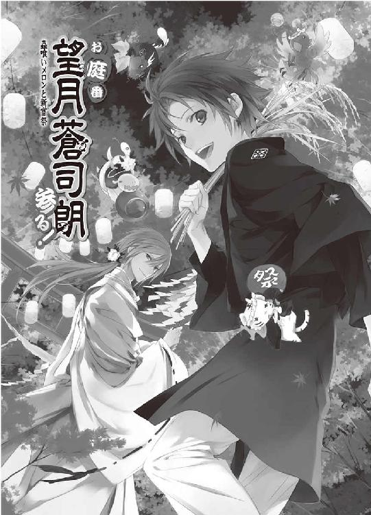
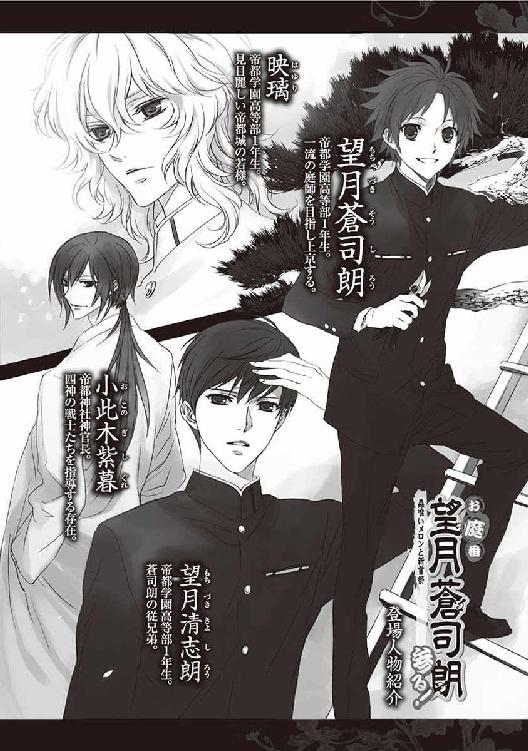
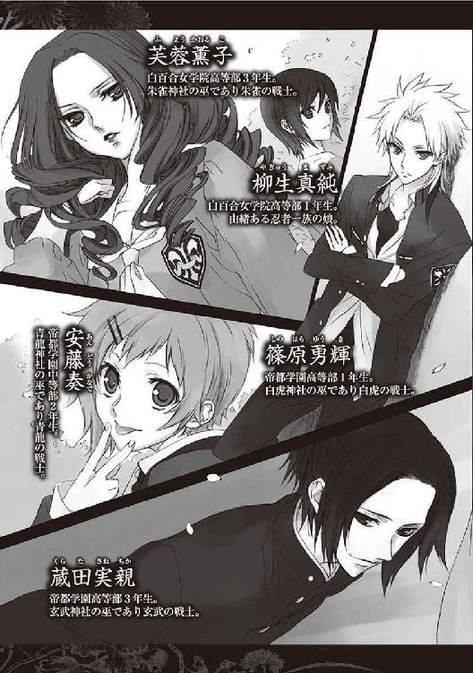
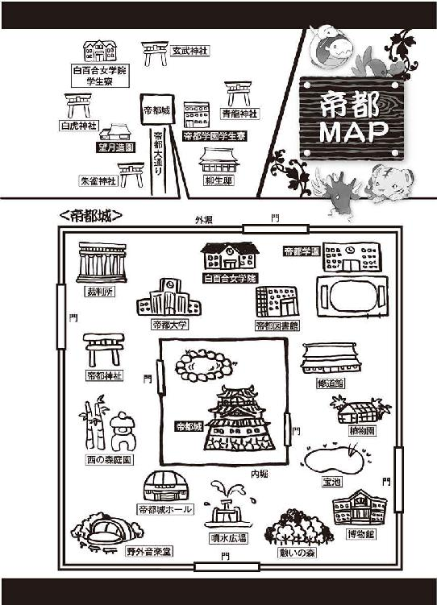
１
首都帝都、華やかなる中心地、帝都城は二重の堀に囲まれた、強固な結界領域である。
ここは帝都を治める賢き帝の御座所であり、次代の帝たる若様が生まれ育つ場所だ。築城千四百年を越す歴史的建築物であり、帝一族の家とも呼べる帝都城は、帝都観光の名所としても有名で、一部を一般にも公開し、見学できるようになっている。
高い石垣と深い内堀の向こうにある帝都城に向かうには、内堀にかかる東と西にある二つの橋のどちらかを渡り、頑強な門を潜らなければならない。
内堀の門の一般開放時間は、午前七時から午後七時まで。
閉門時間三十分前には、帝都神社の鐘が鳴り、警備員は速やかに内堀の外に退出するよう、見学者を促す。
各種イベントに使える帝都城ホールや、野外音楽堂、帝都大学などのある外堀の中、帝都城公園部分は、やはり東西南北の橋と門で守られているが、こちらはもう少し開門時間が長く、午前六時から午後十一時となっている。
時間厳守で、閉門の鐘の音とともに門は閉じられる。意図的に、出てこない者がいても。
「（帝都城公園内に、地方から来た二十代後半の男性三名）」
『────了解しました』
閉ざした門の前で槍を構え、囁くように言った門番の声に、どこかに身を潜めている公儀隠密が答えを返す。地方では名称だけが残り、『お城の何でも係』となっている公儀隠密だが、ここ帝都では、今も現役で活躍を続けている。
そして帝都は、次期公儀隠密たちの育成場でもある。
「（藤丸、絢之輔、遵慶は帝都城公園の西へ。隼人と伊織は、俺と東を捜索する！）」
「（承知！）」
黒装束に身を包んだ公儀隠密候補生、大学生六人の若い忍者たちは、柳生本家の長兄・蘭丸の指示に従い、速やかに散開して潜入者の捜索を開始する。
音を忍ばせ気配を殺し、密やかに行動する彼らは、熱い血の通った人間でありながら、実体を持たず重さも厚みもない影のようだ。
本家・分家すべての柳生一族における成績優秀者は、代々帝都城勤めをし、警備や護衛などを行っている。日勤・夜勤と、一瞬たりとも気の抜けない厳しい勤務に当たる大人たちの手伝いをして、帝都にいる柳生一族の子供たちは公儀隠密候補生として、日夜腕を磨いている。
（地方から来た二十代後半の男性、三名）
油断なく気配を探りながら、柳生蘭丸は闇から闇へと移動する。
（帝のお命を狙う刺客か）
多い日には数十万人という来客で賑わう、帝都一の観光名所、帝都城。
まさかと信じられないだろうが、どんなに混雑していようとも、門を潜った者の数は、性別とおよその年齢を含め、門番にすべて記憶されている。それが帝都在住の者か、地方から来た観光客かも、帝都に入った者すべての情報を網羅している柳生一族は、見分けることができる。
（それとも、何か騒動を起こそうと企てる狼藉者か）
現帝は賢帝としての誉れ高い立派な人物だが、万人からまったく反感を抱かれない者などいない。遺恨などなくても、人の大勢集まる場所で騒動を起こそうとする不埒な愉快犯もいる。
内堀の中の帝都城敷地内ではないので、早急に帝や帝都城を狙う過激な者ではなさそうだが。
（どこだ!?）
潜伏している者がいるとの情報で、帝都城公園にある各施設の警備員たちは、施設の隅々まで厳しく点検を行ったが、そこに潜む人影はなかった。
帝都城公園には、帝都内外の多くの人々が利用する施設の他にも、池や築山、樹木がたくさんあり、広い施設外に潜伏されるほうが発見は難しい。
「見つからぬ、かのぅ」
柳生邸の縁側で月見をしながら、前当主・柳生充兵衛光義翁は、ほっほっほっと笑う。
『帝都城公園に潜伏者アリ』の知らせは来たが、『発見セリ』の知らせはまだない。
曲者との隠れん坊は、公儀隠密候補生たちの日常訓練のひとつだ。
しかし、帝都の公儀隠密候補生にとってはよくあることでも、潜伏を計画する者たちにとっては違う。見つかれば命はないと覚悟を決めて郷里を出た者ばかりなので、気合いが入っていて、そうそう簡単には見つけられない。また、相手に見つかると、柳生蘭丸たち公儀隠密候補生も命の危険を覚悟しなければならない。
公儀隠密候補生は、隠れている者に『捜索していることを気づかれない』ことを、『見つける』ことよりも優先事項としている。大勢の来場者に紛れて上手に入りこめた、まだ気づかれていないと、思わせておいたほうがいい。
「どんな輩であろうとも、潜んでおるだけならば、問題ないわ」
ある意味、人畜無害なので、発見できなくても不都合はない。
潜伏している者たちを懸命に捜索する孫たちを思いながら、柳生翁はのんびりと団子を食べ、茶を啜る。
「はてさて」
いかなる者が隠れているやら。
長時間、飲食も排泄も行わない人間などいない。そして、賊の真の目的は、潜伏ではない。何らかの行動を起こせば、必ず発見できる。公儀隠密における、不審者の捕縛率は十割だ。
多少時間はかかっても。
柳生蘭丸たちは気取られないよう注意しながら、懸命に賊を捜したが、朝日が昇る頃になっても一人も見つけることができなかった。
門番は、公儀隠密候補生の気配を近くに感じ、口を動かさず小声で囁く。
「（ご苦労）」
『お役に立てず、申し訳ありませんでした』
時間切れが、柳生蘭丸は口惜しい。
潜入者は公儀隠密候補生より十近い年長者であり、帝都に送りこまれた精鋭だ。しかも命懸けの覚悟ともなれば、公儀隠密候補生ごときに簡単に見つかるものではない。
『あとは、我らが』
どこからか聞こえた大人の声に、柳生蘭丸は弟の藤丸たちを連れて退く。
帝都城関連に勤務する公儀隠密は、護衛などを行う日勤と夜勤だけでなく、警備員として姿を見せている『表』の者と、忍び装束で密やかに行動している『裏』の者、計四班に分かれて、日夜任務を遂行している。
公儀隠密候補生たちとは別行動をしていた『裏』班は、すでに潜入者を発見している。だが彼らは、あくまで『裏』。裏班は、表班が間に合わない場合などの、本当に手を貸さなければならない窮地にのみ、活動する。
まだ、裏班が行動を起こす頃合いではない。
公儀隠密候補生は柳生邸に戻って、登校時間まで身体を休めてもいいのだが────。
「兄貴......！」
「蘭丸様」
このまま引き下がりたくないという藤丸たちに、蘭丸は頷く。
「もうしばらく続けるぞ」
「「「「「はい！」」」」」
これから早朝勤務を開始する、設備補修の作業員や清掃員、庭師たちの邪魔にならないように注意しながら、蘭丸たちは潜入者の捜索を続ける。
「♪ おはよー、おはよー お日様さんさん 今日も ぴっかぴか～♪」
「ミギャミギャ」
「キュキュイ」
「チュピピピ」
「「（しゅーしゅー）」」
帝都学園高等部一年生、巌手圏出身の望月蒼司朗は、望月造園の庭師見習いであり、帝都城奥庭を任されたお庭番だ。帝都城を守護する奥庭の四神────、現在チビっこライフ満喫中のピヨ四神に懐かれ（憑かれ？）て、高校生活と庭師見習い、神官候補生と、忙しい毎日を送っている。
蒼司朗にくっついているピヨ四神、それぞれのお気に入りの定位置は、チビ白虎が胸元で顔出し、チビ青龍が背中におんぶ、チビ朱雀が頭の上、チビ玄武がポケットである。蒼司朗にとってピヨ四神は、存在感はたっぷりあっても、重さなどの負荷はほとんど感じない。
ピヨ四神のお気に入りである蒼司朗や、霊力のある神官たちには常にピヨ四神の姿は見えているが、内堀の中や神社などの結界領域以外では、一般の者にピヨ四神の姿は見えない。
登校前に一仕事。帝都学園高等部の学生服に黄色い安全ヘルメットの蒼司朗は、奥庭の朝の手入れのため、愛車である小型ショベルカーに乗っていた。
朝の子供番組の歌をピヨ四神と機嫌よく歌いながら、奥庭に向かっていた蒼司朗は、ふと視界に違和感を覚える。
「────ん？」
（何だろう......）
眉を顰めた蒼司朗は、ショベルカーを停める。
「ミギュ？」
どうしたのだろうとチビ白虎が、蒼司朗を見上げた。
すっかり通い慣れた、帝都城公園の遊歩道に見えるのは、ばらばらと散った落ち葉だ。
落ち葉なんて、珍しくはない。遊歩道の周りには、大きな木がたくさんある。だが、素人目には大差ないように見えても、巌手城お抱え庭師の親方の息子に生まれた蒼司朗にとっては違う。物心つかないうちから、落ち葉や剪定された木の枝葉を見てきた。
（この葉......）
散ったものではなく、人為的に落とされたものだ。枝も切られている。
帝都城お抱え庭師・望月造園の庭師たちは、学生である蒼司朗よりも先に帝都城に来て作業を始めているが、別の場所にいる。
この時間に、ここにこんなものがあるはずはない。
「............」
蒼司朗は愛用の枝打ち斧片手にショベルカーから降りて、周りを見回す。
どこかの枝から、葉が落とされたのだが────。
「ピチ、ピィピィ！」
蒼司朗の頭の上で、チビ朱雀が囀った。
（何処......？）
鳴き声に促され、蒼司朗は顔を上げて木の上のほうを見る。
「キュオォ！」
「「（しゃー☆！）」」
（何だ？ あれ......）
蒼司朗は木の枝に邪魔されて見えない幹のところに、何かの影を見つける。
例えば、アドバルーンだとか、凧だとか、どこかの洗濯物だとかが、風に飛ばされて木の枝に引っ掛かってしまうことはある。枝に鳥が巣をかけることもある。
たまたま衝突した物や、鳥によって、手入れした木の枝が駄目になってしまうのは、珍しいことではない、のだが。
（あれ、は......！）
目を凝らした先にあるものが何なのか、はっきりわかった瞬間、蒼司朗の頭に血が上った。
「てンめぇ！ んーなトコで何してやがる!?」
日の光も眩しい、早朝の爽やかさをぶち壊す大声で吼えた蒼司朗は、怒濤の勢いで、枝打ち斧片手に木の幹を垂直に駆け上がった。
「ミギャギャッ！」
「キュアッ！」
「ピー！」
「「────！」」
中学生時代に剣道で鍛えあげた足腰という爆発的機動力に、学年一小柄で軽い体重だからこそ可能な、脅威の垂直移動を行った蒼司朗は、一気に下枝まで駆け上がり、片手と両足で枝から枝へと飛ぶような勢いで上っていく。身軽な蒼司朗に連れられているピヨ四神は仰天し、そして大興奮である。
たまたま帝都城公園のこちらに用があって、遊歩道の途中でショベルカーを停めて木に駆け上がった蒼司朗の姿を目撃した、望月造園の若い庭師・池波も、何ごとかとぎょっとする。
「そ、蒼ちゃんっ!?」
枝打ちを得意とする、身の軽い庭師はいるが、蒼司朗がやってのけたように、幹を垂直に駆け上がるような庭師はいない。
突然怒号を発し、恐ろしい勢いで木を上っていった蒼司朗の姿を目で追った池波は、その先にあったものに目を剝く。
「（親方！ 親方ぁっ！）」
木の上にいたのは、二十代後半ぐらいの男だった。────公儀隠密候補生たちが、一晩かかっても見つけられなかった、賊のうちの一人だ。
鳥が木に巣をかけるように、人目につかない高い場所の枝葉をいじって足場を作り、木に同化するようにして静かに身を潜めていた。
（樹上生活者!?）
蒼司朗の目に、男の姿はそう見えた。たまたま高く上ってしまって下りられなくなったという者ではない。転落予防の縄や、夜間・早朝の冷えこみに備えた出で立ちや荷物が、あまりに用意周到だ。
しかし、ここは天下の帝都城の外堀の中、帝都民の憩いの場である帝都城公園。望月造園が手入れしている木で、そんな自由が許されるはずがない。
「どういう了見だ!? あぁん!?」
木から転落しないよう枝と幹に綱を掛けて身体を固定し、睡眠をとっていた男は、いきなり目の前に現れた安全ヘルメットと学生服姿の小柄な少年に怒鳴られ、驚いて目を覚ます。
賊にとって『発見される』のは、避けたい事態だ。見つかってしまったのなら、その相手は生かして帰すわけにはいかない。
「貴様......！」
ぎらりと光った男の瞳に脅え、蒼司朗にくっついていたピヨ四神たちは（男からは見えないが）、姿を引っこめて隠れた。
放たれた殺気に、蒼司朗は枝打ち斧を握った手を動かす。
抜く手も見せぬ抜刀術で閃いた男の刀が、蒼司朗の枝打ち斧の刃と激突した。一撃で首が飛んでいてもおかしくないような、恐ろしい一撃だ。
致命傷になりそうな攻撃は上手に防いだものの、ウエイトの軽い蒼司朗は、刀に加えられていた男の腕力で吹っ飛ばされる。しかし蒼司朗は、吹っ飛ばされながら片手で枝を摑み、ぐるりと身を翻し、枝から枝に飛び移る。
「お庭番、望月蒼司朗、参る！」
不埒な樹上生活者を、成敗！
枝を蹴って飛んだ蒼司朗は、男の頭上から枝打ち斧を振り下ろす。
朝日を背に飛び降りてくる蒼司朗の枝打ち斧を、眩しさに目を眩ませながら、男は刀で受け止めた。
「くっ......！」
まさかの樹上戦。しかも小柄な少年は、太刀筋がいい────！
「成敗！」
蒼司朗の枝打ち斧によるさらなる攻撃を、男は動きを妨げる命綱を一気に切り捨てて、刀で受け......。
いくら太刀筋がよくても、体重の軽さは一撃の重さに影響する。
刀で受けきれるだろうと男が思った蒼司朗の一撃は、しかし信じられないぐらい重かった。激突した刃の衝撃で、じんと手が痺れる。
（馬鹿な......！）
男の体重を支えていた足場が、ばきりと音を立てて折れた。
落下する男の重みを受け止めきれず、次々にばきばきと枝が折れ、木の葉が散る。
（くそ......！）
あんな小柄な少年に、やられるはずなどない！ 男は『強さ』を買われて、この役に就いたのだ。打ち負かされることなど、考えられない────！
何本もの枝をへし折り、どさっと音を立てて地面に落下した男は、その木の下に集まっていた人間たちに気づき、はっとする。
腕組みし、仁王立ちになって男を見下ろしているのは、望月造園の親方・望月左近だ。
池波の知らせを受け、大勢の庭師を率いて駆けつけた左近は、顔を上げた男に、にいっと笑いかける。
「────おぅ、あんちゃん。俺らが手入れしてる、帝都城公園の大事な木に、ずいぶんなことしてくれてるじゃねぇかよ？」
（庭師!?）
揃いの法被には『望月造園』と染め抜かれている。この出で立ちは、間違いなく職人だ。
警官や警備員ではなく、ただの善良で仕事熱心な庭師であっても、騒がれては困る。
（この場で......！）
飛び起きようと腕をついた男の手、その左右の手首ギリギリめがけ、がしゅっ！ と音を立てて、枝切り鋏が突き立てられた。
よく手入れされ、磨き上げられた枝切り鋏の刃は、無理に起き上がろうとして触れたなら、すっぱり両手の先が切れて落ちそうな迫力に満ちて、ギラリと朝日を跳ね返す。
（ひいっ......！）
男は地面に両手をついたまま、固まる。
親方と一緒に男を取り囲んだ庭師たちが、包囲を縮めるように、ずいっと一歩近づいた。
「テメェよぉ、見たところたった二十年ぽっちっきゃ生きてねぇくせに、大それたコトしてくれたもんだよなぁ？」
築城千四百年の帝都城。外堀・内堀の中を区別することなく、ここに現存する木は、相当に古く、立派なものばかりだ。そんな大切な木を任されている庭師は、誇り高く、木への愛情も人一倍である。部外者に無体を働かれて、ただで済ませるはずがない。
「どう落とし前つけてくれんだ？ コラ......！」
望月左近の放つ迫力に、男は思わず息を吞む。
「耳から落とすか!?」
「鼻が先ですぜ......！」
「おらおらおら！」
「この腐れ○○○野郎！」
公園が一般開放前の時間なので、庭師たちの罵詈雑言にも遠慮がない。
背後に回った庭師が、首に掛けていた手拭いを使って、男に猿轡をした。
別の場所でも、樹上に潜伏していた男が二人、それぞれ庭師たちに発見され、木酢液の入った水風船をぶつけられて、木から引き摺り下ろされていた。
「親方！」
「おう！ こっち連れてこいや！」
菰でぐるぐる巻きにされ、猿轡を嚙まされた二人の男が、庭師たちに荷物のように運ばれてきて、地面にどさりと投げ捨てられた。木酢液の強烈な臭いに、男たちは目も鼻も痛くて堪らない。
「二度と帝都の木に悪さできねぇように、しっかり思い知らせてやらにゃあな......！」
左近はばきばきと指を鳴らす。
殺気立っている伯父たちの迫力に、木の上の蒼司朗は気圧される。
「こっえー......☆」
「ミギュ」
「キュオ」
「ピチュン」
「「（しゅー）」」
蒼司朗に寄り添いながら、どうなるのかしらとピヨ四神もドッキドキで見下ろす。
左近は木の上にいる蒼司朗を見上げる。
伯父と目が合って、ドキッとした蒼司朗は、引きつりながらも笑顔になる。
「蒼。オメーはとっとと奥庭行きな？」
「奥庭は、蒼ちゃんしか触れないからねぇ」
にぃっこりと左近と庭師たちに笑いかけられ、蒼司朗は背筋が寒くなる。
（こぉれは☆）
お子様は、見ちゃ駄目ってか？
「────はーい」
すぐ行きまーす♡
蒼司朗は、よい子のお返事をする。
刺激の強すぎるものは、ピヨ四神にも毒だ。
「ミギャギャ？」
「キュアキュオ」
「チュチュピチュ」
「「（しゅー......）」」
「や、アレは見ないほうがいいから。な？」
本当に行っちゃうの？ と見つめるピヨ四神を宥め、さくさくと木を下りた蒼司朗は、にこにこと笑顔（かえって怖い☆）の庭師たちにしっかりと見守られて、ピヨ四神を連れて小型ショベルカーに乗り、逃げるように奥庭に向かった。
「池！ ちょーっとそこら、見てな？」
警備員が通りかかりそうなら、こっちに来ないように上手くやって？
「へい！」
察しのいい池波は、多くを語られずとも、自分のするべきことを理解している。
見張りを立てて、庭師たちは三人の男を取り囲む。
潜伏者たちを監視していた公儀隠密・裏班は、彼らが庭師たちに発見されたので、お役御免と姿を消した。三人の男たちは、庭師によって警察に突き出されることだろう。
公儀隠密候補生たちが発見していたなら、もっと楽に連行されていただろうに。
「......兄貴」
公儀隠密候補生たちと物陰に身を潜ませていた柳生藤丸は、怒り心頭の庭師たちにボコられる男たちから、目を逸らす。
好奇心旺盛な藤丸でさえ、直視したくなくなる状態なのだから、自業自得とはいえ、あれはかなりキツイ☆
「────帰るぞ」
潜入していた賊は全員見つかったようだし、と、蘭丸は踵を返した。
隠れて見ていたことを庭師たちに気づかれないように、すすすーと速やかに蘭丸たちはその場を後にした。
帝都城で働く職人は、誰も皆、自分の仕事に誇りを持ち、帝都城を愛している。
心をこめて作業をしている職人を怒らせると、恐ろしい────！
２
帝都学園は帝都城の外堀の中、帝都城公園の敷地内に建てられている。朝八時のチャイムが鳴る前に作業を終わらせた蒼司朗は、帝都神社の社務所で、同じく庭師見習いとしての作業を終わらせた従兄弟の清志朗と、朝食の弁当を食べる。
「朝から大変だったね、蒼くん」
今朝は別の場所で作業をしていた清志朗は、木の上に隠れて夜明かししたらしい賊たちの話を、庭師の池波から伝え聞いていた。
「いやー、マジでびっくりしたよ。いるんだな、あんなヤツ」
「ミギュギュ」
「キュァン」
「ピチュ」
「「（しゃー）」」
まったくもってその通りと、蒼司朗と一緒にピヨ四神も感慨深い顔をする。
朝晩冷えこむ時期だ。木の上でじっとしたままの夜明かしは、きっと凍えるほど寒かったに違いない。色んな意味で、無謀だ。
「隠れていて見つかった賊もですが、僕は蒼司朗くんが『木を垂直に駆け上がった』ことのほうがびっくりですねぇ」
蒼司朗たちが朝食をとる卓の横で新聞を広げていた小此木神官長は、鈴宮神官に注いでもらったお茶を啜り、ほうと息を吐く。
お茶を注いだ湯吞みを蒼司朗と清志朗に配りながら、鈴宮神官はきょとんと目を瞬いた。
「木を垂直に駆け上がる？ また、神官長はそんなご冗談を......！」
「ミギャギャ」
「キュアキュア」
「チュピピ」
「「（しゅー）」」
「え？」
そんなことができるわけはないと苦笑した鈴宮神官は、異論を唱えるようなピヨ四神の声に、清志朗と顔を見合わせ、一緒に蒼司朗を見る。
まさか？
ピヨ四神のためにご飯粒を潰してやっていた蒼司朗は、視線を感じて顔を上げた。
確かに冗談のようだが────。
「いやぁ、えーと......」
鈴宮神官と清志朗に見つめられ、蒼司朗は赤くなる。
「巌手のお城で、リハビリとトレーニングを兼ねて、石垣上りをやっててさ。オレ、ちょっとばっかり上れるようになったんだよね。慣れってヤツ？」
蒼司朗がやっていたのは、助走で勢いをつけて、石垣をだだだっ！ と駆け上がる、トレーニングゲーム。────フィールドアスレチックにある壁型のものよりも、石垣のほうがごつごつしていて確かに上りやすいかもしれない。
「帝都城公園の木を、余所者に滅茶苦茶傷つけられてるって思ったら、何かこう、かぁっと頭に血が上っちゃったんだよなー。あはは！」
蒼司朗は照れ笑いするが。
（頭に血が上ったからって、蒼くん......）
（普通は無理だと思います......）
お付き合いで、清志朗と鈴宮神官も笑う。
帝都城公園の大きな木、その下枝までは、二メートル半から三メートルほどの高さがある。垂直に駆け上がるのは、普通は無理だ。
「ミゴゴ」
「キュイ」
「ピ」
「「（しゅー）」」
「うん、びっくりさせてゴメンな？ しっかりオレにくっついてて、みんな偉かったなー」
蒼司朗はピヨ四神たちを、順番に撫でて可愛がる。
頭に血が上って、いきなり怒濤の勢いで駆け出し、垂直に木を駆け上がった蒼司朗は、ピヨ四神に注意を払う余裕などなかった。振り落としていても、不思議はない状況だった。
ピヨ四神は、普通の動物ではなく聖獣なので、振り落とされても怪我をしたりすることはないだろうが、お世話係としては、もうちょっと気を配らなければいけなかったと蒼司朗は反省する。
（まだまだだなぁ、オレ......☆）
「────よし、いただきます！」
「ミギャ！」
「キュオ！」
「ピピ！」
「「（しゃー！）」」
蒼司朗にご飯とミルクを仕度してもらったピヨ四神は、食べてよし！ の合図とともに、朝ご飯に突撃した。今日もピヨ四神は、食欲旺盛。わふわふとご飯を食べて、絶好調だ。
朝の散歩をしていて、偶然に蒼司朗を目撃した小此木神官長は、賊と樹上戦をする蒼司朗の姿も、しっかり見ていた。
「霊力をこめた攻撃が、できるようになってきたみたいですね、蒼司朗くん」
ピヨ四神に気に入られて奥庭の管理をすることになった蒼司朗は、庭師としてだけでなく、正式に奥庭に入ることのできる神官の資格を取るために、勉強や訓練をしている。手持ちの武器に霊力をこめ、穢れを祓うことも、何とか形になっていたように見える。
時間までに食べ終わらなくてはと、せっせと弁当を搔きこんでいた蒼司朗は、小此木神官長に微笑む。
「まだあまり自信はありませんけど、小さい蟲の穢れくらいなら、祓えるような気がします」
「他人に害をなそうとする気持ちも、穢れのひとつです。蒼司朗くんの攻撃は、なかなか、いい威力がありましたよ」
中学時代、蒼司朗は巌手圏中学生剣道大会で優勝している。巌手の『ブルー・ムーン』とあだ名をつけられていたが、準優勝者に出場権を譲って全国大会には出場していない、知る人ぞ知る幻の少年剣士だ。賊が感じた『太刀筋のよさ』は、蒼司朗に剣道の基礎があるからだ。
心疚しい賊だから、子供と大人という体格差を超えてしまえるほどに、蒼司朗の枝打ち斧による一撃を、重く感じた。一撃に加わる体重が軽くても、清めの霊力を乗せたなら、それはどんな剣豪が放つよりも効果のある強烈な一撃になる。
「そう、なのかなぁ。そうだったら、いいな」
快活に笑って、蒼司朗は弁当を口に運ぶ。
「蒼くん、急いで！ あんまり時間ないよ！」
「ん！」
今日は朝礼のある日なので、いつもより少し早く登校しなければならない。
ピヨ四神のために、ご飯粒を潰してやったり、ミルクを注ぎ足してやる蒼司朗は、そっちの手間がかかる分、清志朗よりも食べるのが遅くなりがちだ。
（急がなきゃ急がなきゃ！）
食べ残しても、別に何か言われるわけではないが、社務所で仕度してもらう弁当は、材料も吟味され、かなり美味しい。完食しないと、損をした気になる。
一生懸命箸を動かし、蒼司朗は弁当を口に運ぶ。頰を膨らませて食べるその様子は、リスかハムスターのようだ。
「────蒼司朗くん、君、頰袋ありましたっけ？」
「ふ？」←は？
箸を握ったまま、蒼司朗は小此木神官長の言葉にきょとんとする。
唐突な小此木神官長の言葉に、蒼司朗と同じく急いで弁当を食べていた清志朗は、目を上げて蒼司朗を見る。
（蒼くん......☆）
（蒼司朗様......！）
何て格好でと清志朗は絶句し、小動物のような蒼司朗の姿に愛らしいと噴きだしそうになった鈴宮神官は、横を向いて肩を震わせた。
時間がないと急がせているので、仕方ないとはわかるが、愛嬌たっぷりの従兄弟の姿に、清志朗は恥ずかしくていたたまれない。
（あ、ひょっとして......）
清志朗は視線をずらし、そこに思った通りのものを目撃して、小さく息を吐く。
「......蒼くん、急かしておいて悪いけど、もうちょっと落ち着こうよ」
「ふ？」←は？
もきゅもきゅと食べながら、清志朗の言葉に首を傾げた蒼司朗は、視線で促されてお食事中のピヨ四神を見る。
「ミゴゴミゴミゴゴ」
「キュイキュイキュイ」
「ピッチュチュチュピチュピ」
「「（しゅ────）」」
ピヨ四神も蒼司朗同様、頰をぱんぱんに膨らませてご飯を食べていた。これはこれで可愛いけれど。
もきゅもきゅごっくんと飲みこんで、蒼司朗はピヨ四神に言う。
「お前ら、落ち着いて食え？ とらねーし」
「ミギュ」
「キュ」
「ピ」
「「（しゅー）」」
顔を上げたピヨ四神は、頰ぱんぱんの状態で、了解と蒼司朗に前肢や手羽を、ちょいと上げてみせた。
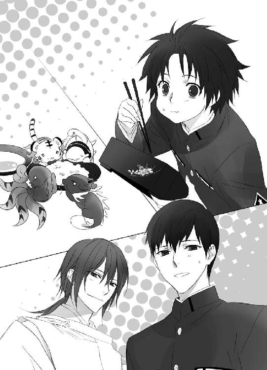
ぱらりと新聞を捲り、小此木神官長はお茶を啜る。
「......もうぼちぼち、不審者が多くなってくるでしょうねぇ。今日は三人でしたか」
（もうぼちぼち多くなってくる？）
蒼司朗は弁当を咀嚼しながら、少し首を傾げる。
ミルクに顔を突っこんでいきそうなチビ朱雀を助けて、鈴宮神官は蒼司朗に微笑みかける。
「もうすぐ新嘗祭ですからね」
（新嘗祭？）
両親が帝都で生まれ育ち、望月家の本家もあるので、蒼司朗は幼い頃から休みの度に何度も帝都に遊びに来ていた。帝都学園高等部に入学して、帝都の住民となった蒼司朗は、町の一人歩きも、最初からほとんど不安はなかった。だがそんな蒼司朗も、帝都の年中行事を全部知っているわけではない。
「蒼くんは、この時期ずっと巌手でしたから」
きょとんとしている蒼司朗の表情から考えていることを読んで、清志朗は小此木神官長と鈴宮神官に言う。
「今の時期は、巌手でも忙しかったんじゃない？ 蒼くん」
「お祭りだよ」
口の中のものをごくんと飲みこんで、蒼司朗は頷く。巌手城のお抱え庭師の親方の息子だった蒼司朗は、人手が足りないときに、よくあちこちを手伝って回った。
「うん、蒼くんのいた巌手と同じように、帝都もこれからお祭りなんだ。それが『新嘗祭』」
帝都新嘗祭。
全国各地から、実りの献上品が届けられ、それを神に奉納する式典が催される。
ピヨ四神が卓に零したミルクをそっと布巾で拭き、鈴宮神官は微笑む。
「大きなお祭りですから、観光客の方たちも、たくさん帝都にいらっしゃるんですよ」
「四日間のお祭りの期間中は、学校も休みになるんだ。お御輿がいっぱい出て、公園や通りには屋台が並んで、大道芸の人たちもいて。帝都神社では帝による奉納の儀があったり、五節舞が披露されたり、すごく賑やかで楽しいよ」
「夜には花火も上がりますしね」
「へー」
帝都をあげての、相当に大きな祭りらしいと、蒼司朗はわくわくする。ピヨ四神も、蒼司朗が瞳を輝かせているので、わくわくして目をキラキラさせる。
わくわくしている蒼司朗に、にっこりと小此木神官長は微笑む。
「で、その機会を狙う、不届き者も大勢いるというわけなんです。今の時期、大抵の悪者は、もうだいたい準備を終わらせています。これから帝都入りしますから、あっちこっちで、色んな輩がバンバン捕まりますよ～」
（いえ、神官長、それって楽しいコトじゃないです......☆）
蒼司朗はげんなりし、清志朗と鈴宮神官は温い笑みを浮かべる。
小此木神官長は笑っていて楽しそうなのに、蒼司朗たちは何だか疲れた感じ？ 頰ぱんぱんで、むきゅむきゅとご飯を食べながら、ピヨ四神は首を傾げた。
鈴宮神官は、小此木神官長の湯吞みにお茶を注ぎ足す。
「明日から、警官と同じように、町中を私服の神官が巡回します。不思議に思わないでくださいね、蒼司朗様」
路上が荷物置き場として占拠されることを防止する、迷惑行為取り締まりで巡回を強化する警官は、同時に、爆発物などの危険物を放置されることにも警戒している。もともと置いてあったものそっくりに偽装したり、仕掛けをして、こっそり置かれている不審物は、穢れを敏感に察知する神官でなければ発見できない。
（へー、なるほど）
帝都では神官の仕事も、なかなか多岐にわたって忙しいのだなと、蒼司朗は思った。
朝食を終えて無事登校し、朝礼を終えて、講堂から教室に戻る途中で、蒼司朗は新嘗祭のことを話題に出してみた。帝都学園の生徒たちも、新嘗祭のことをよく知っていた。
「僕、今年、お御輿担ぐよ」
「僕も僕も！」
廊下を歩きながら自慢げに言った筧俊彦に、熊谷融もはしゃぐ。
「今年もお天気だったらいいねー」
斉藤正則の言う通り、新嘗祭の日は晴れの特異日に当たっているらしく、ここ二十年は晴天の日が続いている。
「お御輿、担ぐんだ？」
地方出身である筧俊彦と熊谷融の言葉に、袋に入れた枝打ち斧を右から左に持ち替えて、蒼司朗はちょっと驚く。
蒼司朗の感覚では、お御輿は圏内の区ごとのものだった。その区の住民がお御輿を担ぐのだ。地方の子である筧俊彦たちが、帝都でお御輿を担ぐとは？
よくわからないという様子の蒼司朗に、清志朗は教える。
「帝都の新嘗祭のお御輿は、圏ごとなんだよ」
各圏からの献上品をお御輿で運び、お供えする。だから、お御輿を担ぐのは、その圏の出身者なのだ。各圏には圏民会があって、定期的に会合を開いている。その年のお御輿の担ぎ手も、そうして集まったときに決められる。
「へぇ......、そうなんだ」
巌手にいた頃は、自分が参加するお祭りのことに夢中で、蒼司朗の頭にはほとんど残っていなかったが、よくよく思い出して見ると、巌手でもお祭りのこの時期、巌手城に勤めている者が何人か、十日間ほど帝都に出張していた。
（お祭りのときなのに、仕事なんて可哀想になぁって、思ったんだっけ）
同じクラスではないが、蒼司朗と同じ巌手圏出身の生徒が、帝都学園高等部の一年生にもいたはずだ。しかし、蒼司朗が圏民会に誘われたことは一度もない。確かに、蒼司朗は高校生活の他に庭師の修業をしたり、神官の修行をしたりして、とても忙しくしていたけれど......。
仲間外れにされたようで、何だか納得できない様子の蒼司朗に、清志朗は笑った。
「蒼くんの家があるのは、帝都だよ？ 蒼くんはもう、帝都の人なんだから」
蒼司朗の身内である従兄弟の清志朗たちがいるのは、帝都。蒼司朗が巌手に帰省することはない。帝都の望月造園、望月邸には、蒼司朗の部屋もちゃんとある。巌手圏は、確かに蒼司朗の生まれ育った土地だが、そこに蒼司朗の帰る家はなく、待っている親族は誰もいない。
「そう、いうことに、なるんだけどさ......」
「新嘗祭の日、うち（望月造園）は焼きソバ屋の屋台だから」
「え？」
「露店を出すんだよ。店番は皆で交代でするからね。蒼くんも、焼きソバ焼くんだよ」
「清志朗くんのトコの焼きソバ、美味いんだよな～」
「僕、紅生姜多めで！」
「当番の日と時間、決まったら教えてくれよ！ 絶対行くから！」
お御輿は地方の者が担ぐが、祭りで賑わう帝都のそこかしこに出る露店は、帝都の町内会の主催である。新嘗祭の間、仕事にならない帝都の職人たちの多くは、この露店を受け持つ。
お祭りの間、露店はずっと営業しているが、ちょっとおまけしてもらえたりするのは、店番に顔見知りのいるときだ。友人たちの多くは、知り合いのいる時間を狙って来店する。
「お祭りの期間、全露店総合で、一人前の商品の販売実績を競争する。うちは去年十二位だったからね。今年は、十位以内を狙うよ！」
品行方正な優等生である清志朗は、いつになく熱く語って拳を握った。
話が聞こえたのか、急ぎ足で横を通る別のクラスの生徒が、清志朗に微笑みかける。
「望月くん！ 今年も焼きソバ、食べに行くからね！」
「僕も！ 囲碁部の友達誘って行くから！」
「うん、待ってるよ！ ありがとう！」
（......十二位っていうの、清ちゃん効果だよな、きっと）
学年代表の生徒である清志朗は、成績優秀で人当たりもよく、人気がある。髭面でいかつい庭師の親父たちが店番をしているより、爽やか系の見目のいい少年が店番をしていたほうが、集客率は高いだろう。男女共学だった小学校時代の同級生の女の子たちも、競うように来店するような気がする。
「ミキュ？」
「キュアキュ」
「チュチュピ」
「「（しゅー）」」
蒼司朗にくっついているピヨ四神（霊力のない清志朗たちには見えない）は、焼きソバって何？ それって美味しい？ と、期待に目を輝かせる。
ねえねえと質問モードで、前肢で押し押しするピヨ四神だが、蒼司朗は真剣な顔で考える。
（オレ......、誰か呼べたっけ？）
サービスするから来てねー、と呼びかけられるような相手は......。
考えていた蒼司朗の後頭部に、ごつん☆と硬い物が当たった。
「ってぇっ......！」
「ミュ」
「キュ」
「ピ」
「「！」」
勢いよく何かが当たって、つんのめった蒼司朗に、振り落とされかけたピヨ四神がひしっとしがみつく。痛みに目を潤ませ、蒼司朗は何かが当たったほうに振り向く。
蒼司朗の横にいたのは、朝礼をサボって今登校したような、ペタンコの学生鞄を持った篠原勇輝だ。肩に担ぐようにして持っていた鞄が、蒼司朗の後頭部に激突したらしい。
帝都の四神を祀る神社、白虎神社の神主の息子である篠原勇輝は、今期の白虎の戦士だ。
篠原勇輝は学業成績が優秀で、運動神経もよく、若様のお世話係を任されるような少年だが、言葉遣いが乱暴で不良っぽい。怒ってばかりで怖いので、敬遠されがちだが、勤勉で、根の優しい、いい子だ。気性がまっすぐなせいか、神官でもない一般人の蒼司朗が奥庭のお庭番に任命されたことを認めないと豪語し、誰憚ることなく堂々と蒼司朗を嫌っている。
「篠原、テメェ......！」
振り向いた蒼司朗を、篠原勇輝は見下ろす。
「ワリ」
ぞんざいにだが、篠原勇輝は詫びるが。
「ちっさくて見えなかった」
一言多い。
「んーだとコラ！」
しれっと言い放った篠原勇輝を、蒼司朗は睨みつける。
学年一小柄で、身長にコンプレックスのある蒼司朗に、『小さい』は禁句だ。それをわかっていながら、篠原勇輝はわざと言って、蒼司朗を怒らせる。
（あぁ、また......）
清志朗は胸の中で溜め息を吐く。
篠原勇輝が蒼司朗のことを嫌っていて、蒼司朗も遠慮なく篠原勇輝を嫌い返しているために、二人はことあるごとに喧嘩だ。手加減なしのガチ本気でぶつかり合う二人の喧嘩に巻きこまれると怪我をするので、筧俊彦たちは、そっと蒼司朗たちから離れる。
蒼司朗への篠原勇輝の態度は、常に喧嘩腰で、近寄るのも怖いが。
（完全に嫌ってるわけじゃないのに）
神職関係者の誰よりも、篠原勇輝が蒼司朗のことを心配してくれているのを、清志朗は知っている。帝都で働くまで、神職とまったく関わりのなかった蒼司朗が、奥庭のお庭番などという大役を押しつけられたことが、篠原勇輝は嫌なのだ。蒼司朗本人には話すなと篠原勇輝に言われた（脅された？）が、彼はこれまで何度も、蒼司朗を病院に担ぎこんでくれた。しかも、蒼司朗に輸血までしてくれている。
鞄を小脇に抱え直した篠原勇輝の手から、何かキラキラした物が五つ飛んだのを、蒼司朗は目撃する。
（え？）
一瞬の目の錯覚かもしれないと思ったが。
「ミギュ」
「キュ」
「ピ」
「「♡」」
身を乗り出したピヨ四神たちが、ぱっくん♡とキラキラに食いついた。
霊力のない者には、蒼司朗にくっついているピヨ四神の姿は見えない。蒼司朗は小声で篠原勇輝に文句を言う。
「（篠原！ こいつらに勝手に食い物やるな！）」
篠原勇輝は白虎の戦士なので、聖獣の身に悪いものを与えるとは思えないが、ご飯の時間以外に、おやつを食べる癖がついてしまっては困る。
「（っせぇな、食いモンじゃねぇよ。俺の神社の清浄な気だよ。オメーにはやれねーモノ☆）」
「ミギャ」
「キュオ」
「ピ」
「「（しゅー）」」
うまうま♡ ピヨ四神は、お目々をキラキラさせながら、気を摂り入れる。
（清浄な気......）
蒼司朗は何だか面白くないが、ピヨ四神たちの身体がほこほこと温かくなってきたように感じるし、ピヨ四神たちはご機嫌なので、文句をつけるわけにはいかない。
ピヨ四神のお気に入りである蒼司朗に、鞄ごっちん☆の無体を働いても、ピヨ四神的には、これでチャラ♪
「鳴いてた閑古鳥、追い払えたんじゃねーの？」
「うるせ！ そんなモン、まだ飛んでねーよ！」
反射的に篠原勇輝に怒鳴った蒼司朗だが。
（蒼くん......）
まだ、って☆
閑古鳥が鳴く予定だったのかと、清志朗はちょっぴり虚しい気分になった。
後頭部を摩る蒼司朗に怒鳴られた篠原勇輝は、一度きょとんとした顔になり。
「はは！ そうかそうか！」
爆笑しながら自分の教室に入っていった。
篠原勇輝の反応に、蒼司朗は目を瞬く。
「あれ？」
３
公儀隠密柳生一族、柳生本家の娘・真純は、帝都の全寮制お嬢様学校・白百合女学院高等部一年生であり、公儀隠密として四神の戦士の活動補助と、若様の護衛を行っている。
次期帝であり見目麗しい若様は、生まれつき徳が高く、存在そのものが魅力的だ。計画的に、あるいは衝動的に、若様を傷つけようとする者や、魅了されてふらふらと道を踏み外しそうになる者を速やかに発見して処置したり、若様の生活の記録を写真に収めるのが、真純の仕事だ。麻酔薬を仕込んだ吹き矢や、カメラのフィルムは純粋な消耗品なので、時間のあるときに実家の柳生邸に戻って補充する。
放課後、お世話係である篠原勇輝と一緒に若様が学校から寮に戻ったのを見届け、柳生邸に帰った真純は、忍び装束のまま庭の端っこに大の字で寝そべる兄・藤丸の姿を見つけた。
「────何をしてるんですか？」
一族の中でも、ちょっと変わったところのある人だとは、前々から思っていたが。
藤丸は仰向けに寝そべったまま、来い来いと真純を手招きする。
「何？」
生真面目で付き合いのいい真純は、制服のスカート姿であることに気をつけて近づいて、藤丸に尋ねる。
寝転がったまま、藤丸は言った。
「あのさー、真純、お前、この木を駆け上がれるか？」
「え？」
きょとんと真純は目を瞬く。
藤丸が指差すのは、地面に寝転がった彼が足を向けている木だ。樹齢五百年は越えるだろう、太くしっかりした庭木である。
（駆け上がる、って......）
どっしりと揺るぎない様子で、地面から垂直に生えている木だ。
「......刀を足場に使うとか、枝に鈎縄を掛けて上ればいいんじゃないの？」
目にも留まらぬ早業で。いつもやっていることだ。わざわざ駆け上がらなくても、藤丸が指差した木ならば、ジャンプして低い枝に手を伸ばして、そこから上がるという方法もある。
「違う違う、そうじゃないんだよぉ......！」
駄々っ子のように、ばたばたと藤丸は身を捩った。
（なっ、何!?）
子供返りしたような、兄の駄々っ子姿に、ぎょっとして思わず身を退いた真純は、頭上から聞こえた笑い声に、振り向く。
「蘭丸兄さん」
黒の忍び装束で屋根の上にしゃがんでいた蘭丸は、ひらりと真純の横に飛び降りた。
「散々試したようだな、藤丸」
笑いを嚙み殺す蘭丸に、身を起こした藤丸は胡坐をかき、ふてくされて口を尖らせる。
「悪いかよ......！」
「悪くはないよ。向上心があって負けん気が強いのは、いいことだからね」
「？ 何があったんですか？」
さっぱり訳がわからないと首を傾げる真純に、蘭丸は苦笑しながら説明する。
「うん、今朝ね、帝都城公園の木を、蒼司朗様がこう、駆け上がられてね」
樹上に身を潜めていた不審人物を発見し、怒髪天を衝いた蒼司朗が、とっちめるために不審人物に近づいた。そのときの行動が────。
「......木を、垂直に駆け上がった......!?」
真純は目を丸くする。
（いえ、でも────）
漫画のようで信じられない光景だが、真純にはあの蒼司朗なら、何となくそういうのもありそうに思える。
「で、藤丸は自分にもできないかと、何度も挑戦してみたわけだ」
結果、惨敗だったらしいのは、落ちて転がっていた藤丸の格好からもわかる。
蒼司朗が駆け上がった木、そのものでなく、柳生邸でよく似た木を探してやったのは、失敗するのを他人に見られると格好悪いからだ。柳生邸で場所を選べば、誰にも見つからない。
「くっそー！ もうちょっとなのに！」
藤丸は地面に拳を打ちつけて悔しがる。
望月蒼司朗は奥庭のお庭番に就任したが、それ以前は巌手圏から出てきた庭師志望のただの高校生だ。公儀隠密の柳生家に生まれた者としては、体術面で劣るのは我慢ならない。
（誰も同じ、か）
蘭丸は今日、大学構内の目立たない場所にある樹木で、今ここにいる藤丸と同じような格好をしている絢之輔、遵慶、隼人、伊織を、別々に見つけている。
藤丸と違って真面目に登校した彼らは、授業のない空きや休講の時間を使って、木の垂直駆け上がりに挑戦していたようだ。離れた場所でこっそり一人で挑戦していたのは、お互いに見栄や意地があったからだ。
蒼司朗が駆け上がったのと同じ木で挑戦したい気持ちはあるが、一般に開放されている帝都城公園では、不特定多数の誰に見られるかわからない。帝都大学の構内ならば、醜態を目撃する人間は、少なくとも限定できる。蘭丸が皆を見つけたのは、『先を越された』からだ。誰しも、これがいいだろうと目をつける木は同じらしい。
そして誰一人として成功していないのは、聞かなくても、雰囲気や表情からわかる。
蘭丸本人は、まだ一度も挑戦していないが────。
（できる気がしない......）
失敗連続で、悔しさを嚙み締めて虚空を睨みつけている藤丸たちの姿に感化され、思考が後ろ向きになっているというのではなく、成功するというイメージが浮かばない。
トレーニングを行うときには、実際に身体を動かすよりも、先にまず、イメージトレーニングで成功する自分の姿を思い描く。具体的にイメージできたものは、必ず成功する。
木の駆け上がりについては、成功がイメージできない。これが成功と思い描いた己の姿は、どうにも噓っぽい。
蘭丸は、冷静に分析する。
「もう五年も前なら、藤丸、お前にもできたかもしれないぞ？」
「あぁ？」
「どういうことですか？」
語尾を上げ、据わった目をする藤丸と、きょとんとする真純に、蘭丸は教える。
「体重と筋力のバランスだよ。今の藤丸では、体重が重すぎる」
十九歳の藤丸は、細身に見えるが、引き締まった筋肉質な身体つきをしている。体脂肪があまりないために、水泳をすると沈む。骨と筋肉がしっかりしているので、藤丸は見た目よりも体重は重い。足腰の筋力はあるが、駆け上がる力よりも、重みで地面に引っ張られる重力のほうが強くて、落っこちる。
「────真純なら、ひょっとするとできるかもしれないけど」
女の子の真純は、鍛えていても体重は軽い。
真顔で蘭丸に言われ、真純は笑う。
「できないわ。嫌ね」
したいとも思わないし？
制服のスカート姿で挑戦する気もない真純に、蘭丸は小さく溜め息を吐き、そして真純の足元を見て、はっとする。
「真純、そこにゴキブリがいるよ？」
指差す蘭丸に、足元近くに目をやった真純は、ひぃっと息を吞む。
触角をひよひよと動かす、黒光りするモノ、四匹！
「△●×☆■！」
真っ青になり、言葉にならない悲鳴をあげた真純は、恐ろしい速さで後退り、後ろ向きのまま木に逃げ上った。
真横をびゅんと風が走りぬけ、藤丸は感心する。
「おぉ、すげー......！」
「────これは火事場の馬鹿力の類と言ったほうがいいのかな」
蘭丸は腕組みして、考察する。
結果は蘭丸の予想通りだが、真純にとってあの虫は、特別な起爆剤となっている。
生理的嫌悪感によって引き出された、いつも発揮できるとは限らない、一時的な力であると考えたほうがいいだろう。
「そういや、真純って小学生の頃、水蜘蛛なしで池を渡りきったんだよな」
「藤丸が真純を蛇で脅かしたからね」
真純は危機に瀕すると、常にない力を発揮するタイプだ。
女の子だが、小さい頃から、危機的状況にぶつかったとき、思考や運動が停止せず、状況を改善するための行動が迅速にとれるので、柳生一族の同学年の男の子より適任であると判断され、若様と四神の戦士付きの隠密に選ばれた。小器用な真純は、何でもそつなく上手にこなすし、几帳面でとても真面目だ。女の子ならではの、細かい気配りもできる。
そして、スレンダーな真純は、白百合女学院の生徒でありながら、帝都学園高等部、中等部にも違和感なく潜入できる。学校は関係者だけの閉鎖空間なので、これは大きなポイントだ。
蒼司朗と同じようなことを、真純もできた。
（でも────）
必要とあれば、蒼司朗ならいつでもやってのけるだろうと、蘭丸と藤丸は思う。
（公儀隠密を目指す身としては、いささか情けない）
蒼司朗に条件が整っていたというだけの話かもしれないが、まるで能力的に自分たちが蒼司朗よりも劣っているように見える。そして小柄な蒼司朗は、武力行使の際には体格で勝る者に力負けして不利だが、隠密活動を行うにはとても有利だ。
「うちに欲しい人材だよな......」
呟いた蘭丸に、藤丸は面白くないという顔で横を向く。
「無理じゃね？」
蒼司朗は一流の庭師を目指して帝都に来た。奥庭のお庭番は、高い戦闘スキルを要求される特殊な神職だが、その就任に蒼司朗が大きな不満を抱かないのは、懐いているピヨ四神の愛らしさ......というより、庭仕事ができるからだ。高校一年生の見習い庭師には、贅沢な仕事だ。
奥庭の四神が解任しない限り、蒼司朗は奥庭のお庭番を続けなければならない。公儀隠密に蒼司朗をスカウトするのは、難しい。
「才能を伸ばすなら、今なんだけどな」
（今のままの体格をキープで）
一ミリでも身長を伸ばそうと考えて、毎日の食卓に牛乳を欠かさない蒼司朗が聞いたら断固拒否しそうなことを考えて、蘭丸は本当に惜しいと溜め息を吐いた。
下の枝に乗った真純は、幹に縋って身を隠し、気持ちを落ち着けてから、怖々覗く。
「ららら蘭丸兄さん......！」
震える声で呼びかける真純に、蘭丸はにっこり微笑む。
「あ、これゴム製の玩具だから。よくできてるだろ？ なかなか効果的だったな。いいデータがとれたよ。ありがとう、真純」
蘭丸はゴム製の虫を摘んで拾い上げる。
ぱっと投げ置いた直後に、真純に声をかけたので、触角がぷるぷるしていたのだろう。
帝都大学工学部の学生である蘭丸は、公儀隠密の仕事に使えるような、性能のいい道具を研究開発している。使った具合がどうなのか、家人が実験されることはよくある。
「種類は他にも色々あるんだよ」
「いい！ 見せてくれなくていいから！」
作り物だと知らされても、本物そっくりの玩具は、生理的に苦手な者にはキツイ。
本気で泣きの入っている真純に、玩具を回収しながら蘭丸は悪戯が過ぎたと肩を竦める。
「祭りのときに、屋台で何か奢ってあげるよ」
真純の任務に休日はないが、休憩はとれる。
「あ、俺、焼きソバ食いたい！」
「うん、藤丸には聞いてない」
さくっと拒否して、蘭丸は藤丸に微笑みかける。
「今日の必修の授業、出てないね？」
（あ☆）
藤丸は大学の講義をサボったことを思い出す。必修といわず、選択も全部、まるっと。
「レポート提出の課題が出てるよ」
「うわー、マジかよ！」
慌てて立ち上がった藤丸は、一瞬で私服に着替え、筆記具と教科書を持って大学に走る。今の時間なら、まだ授業を受けていて大学や図書館に残っている友人がいるはずだ。レポートの内容を教えてもらわなくてはならない。
ばたばたと出て行く藤丸を、蘭丸はやれやれと見送る。公儀隠密候補生として、意欲的なのはいいのだが。
「柳生本家の人間は、皆の手本にならなきゃいけないのに」
藤丸はどうも、自覚が乏しくていけない。
蘭丸作のゴムの玩具がないのを覗き見、薄目から段階を踏んでしっかり確認して、恐る恐る木から下りた真純は、はっと思い出す。
「いけない！ ぐずぐずしてる暇はなかったんだわ！」
ばたばたと走っていく真純を、蘭丸は微笑んで見送った。
帝都学園高等部の学生寮は、二人部屋が普通だが、代々の若様と四神の戦士が在学中のときには、それぞれ個室を使うことになっている。
若様の部屋は、代々の若様が使っていた部屋で、その年に若様が学園に在籍していないときには、空室として大切に管理される。四神の戦士の部屋は、若様の部屋を守るように、上下左右の四部屋が割り当てられているが、今年は左右の二つだけが使われている。
篠原勇輝と寮に戻った若様は、寮生たちが自由に利用できる自習室を使わず、自分の部屋で自習する。若様のため、寮の図書室に向かった篠原勇輝は、頼まれた本を探す。
寮の図書室は、帝都図書館に向かうまでもないような、ちょっとした調べものをするのに便利だ。所蔵書籍の分野を絞ってあるので、蔵書は偏っているが、学校の勉強で使う本は、寮の図書室で間に合う。
篠原勇輝は借りたい本が図書室のどこにあるのか、目録で確認してメモを取ってから、開架式の書架に向かったのだが。
「......あれ？ っかしーなー......」
書架の記号ナンバーは合っている。貸し出しは、されていないのに。
篠原勇輝は、書架に広い隙間があいていて、本が斜めになっている場所や、部分的に積み重なっているところを注意して確認し、上段から下段の隅々まで、しっかりと本を探す。
後から図書室に入ってきた蔵田実親は、すっと近寄って、篠原勇輝に本を差し出す。
探していたのは、ちょうどこの本だ。
「......あざーっす」←ありがとうございます☆
（助かった）
本を受け取った篠原勇輝は、機嫌よく蔵田実親に会釈したが。
「────センパイ、この本、さり気にどっから持ってきたんですか？」
まるで、ずっと蔵田実親が持っていて、自分の部屋に置いていたような？
「ははは。成績上位者の知恵とでも思ってくれたまえ♡」
使いやすい、いい本はキープ！
きらり、蔵田実親は銀縁眼鏡の位置を直す。
「センパイ、それすっげ卑劣ですから」
「いやぁ、照れるなぁ♡」
「一ミリたりとも褒めてないです」
篠原勇輝に冷たくあしらわれ、ぽっと蔵田実親は頰を染める。
「うん♡」
それが、快感♡
若様のために必要な本はゲットできた。
（これを早く若様に）
いそいそと図書室を出ようとする篠原勇輝に、蔵田実親は言う。
「そう言えばさ、勇輝クン。今朝、蒼司朗クンが、帝都城公園の木を垂直に駆け上がったって話、聞いたかい？」
「────は？」
篠原勇輝は扉に手を掛けたまま、蔵田実親に振り向く。
（木を垂直にって......）
駆け上がれるものだろうか────いいえ、駆け上がれません。←反語的確認。
常識的に、きちっと判断したらしい篠原勇輝の瞳を見つめ、くすっと蔵田実親は笑う。
「木の上に身を潜ませていた賊を発見して、らしいけどね。その木だけ、枝が無惨に折れてるから、すぐわかるよ？」
「......俺、あんなチビに興味ないですから！」
つんと顎を上げ、扉を開けた篠原勇輝は図書室を出て、若様の部屋に本を届ける。
蒼司朗に興味はないが────。
「俺は、木を見に来ただけだからな！」
誰も聞いていないのに、きっぱり断言して、篠原勇輝は帝都城公園で、無惨に枝の折れている木を探す。
木は、すぐに見つかった。
「......この木を垂直に駆け上がる......って!?」
走行距離、垂直に三メートル弱。
どう見ても、無理！
（マジかよ......）
呆然と木を見上げている篠原勇輝に、売店で買ったソフトクリームを舐めながら近寄って来た安藤奏が挨拶する。
「こんにちはー、勇輝さん」
「おう」
返事をしてから、篠原勇輝は疑問を抱く。
「お前、こんなトコで何やってんだ？」
「────売店の期間限定新作ソフトを食べに来たんですよ」
多少寒くても、アイスを食す。そこにアイスがある限り。それがアイス好きの常識。
「そういう勇輝さんこそ、そんなトコで何やってるんですか？」
尋ね返され、篠原勇輝は視線を泳がせる。
「......散歩だよ」
「ふーん」
少し向こうの日当たりのいい場所のベンチが空いているのに、安藤奏は日陰であるその場に立ち止まったまま、ソフトクリームを舐める。
（（バレバレだろ☆））
蒼司朗が今朝、垂直に駆け上がったという木がどんな木か、偵察に来た篠原勇輝と安藤奏は、とても気まずい。
そのまま、二人でぼーっと突っ立ってから、篠原勇輝はおもむろに安藤奏に言った。
「奏は、コレ、垂直で駆け上がれるか？」
「その必要を感じません」
安藤奏は、ばっさりと会話を打ち切る。
取りつく島もない安藤奏の言葉は、今ここでやらないけれど、やってみればできるという意味で返事をするのとは違う。
（こいつでもできないのか）
安藤奏は明言を避けたが、だからこそはっきりわかる。
自分も無理だと、篠原勇輝は思う。だが、できないとは、意地でも言いたくはない。
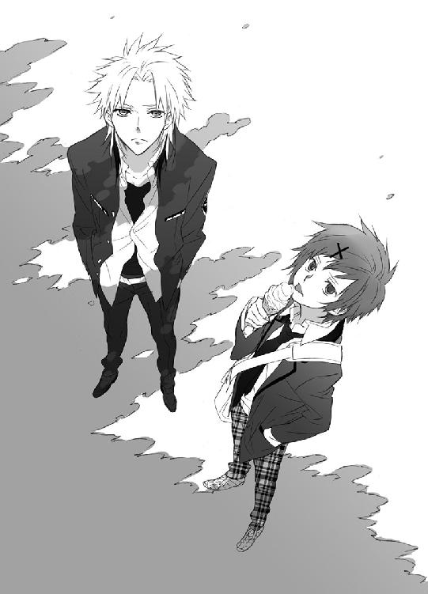
「こんなの駆け上がれるヤツって、絶対、人間じゃねぇよな」
「サルですよ♡」
篠原勇輝の言葉に、にっこり微笑んだ安藤奏は、きっぱり断言した。
「ぶぇくしょん！」
「ミギュ？」
「キュイ？」
「ピチュ」
「「（しゃー）」」
「......あー、埃が入っただけ？」
蒼司朗はたぶんと笑って剪定鋏を持つ手を止め、どうしたのと心配するピヨ四神を撫でる。
ピヨ四神を連れて、奥庭で作業中のサル（あっちこっちで噂になっている☆）は、そのとき、大きな声でくしゃみをしていた。
４
その年の新嘗祭の露店の場所は、前年の全露店総合での一人前販売実績の上位店から順に、希望する場所を選んでいくことになっている。営業場所は帝都城の外堀、門に近い辺りがもっとも人気があり、次いで公園や大通りの周辺となっている。
「今年は南門近くだ！」
「やりましたね！ 親方！」
「今年は十位以内確実だぜ！」
会合から戻ってきて夕飯の卓についた左近に、今日から祭りまでしばらくの間、望月造園で夕飯を食べていく庭師たちは、歓声をあげる。
南門は帝都大通りにも面していて、人通りが多い。かなりの集客数が期待できる場所だ。
望月造園を裏から仕切る女将の梢は、熱燗にしてきた左近の晩酌の徳利を卓に置く。
「材料の仕入れは、ばっちり段取りできてますからね。予定通り、練習は今日から始めますよ。うちの屋台は薄利多売！ たくさん売ってくれなきゃ、大赤字なんだから」
「売り上げの悪ぃヤツは、給料から差っ引くから、覚悟しとけ！」
「順位が上がったら、ボーナスですぜ？ 親方！」
「んーなモン、当然よ！ 気合い入れやがれ、野郎ども！」
おー！ と声を揃え、庭師たちは拳を突き上げた。
帝都で勉強するために地方から出てきた者も、新嘗祭には積極的に参加する。神官の資格を得るために帝都大学で行われている夜間授業も、この期間は特別に休講という措置がとられている。
とにかく数をこなさなければと、放課後、奥庭の仕事を終えた蒼司朗は、焼きソバの調理練習のため、望月造園に引っ張ってこられた。庭に練習用鉄板を出して、望月造園の法被姿で鉢巻して、焼き焼き。
「皆、リキ入ってんなー」
「年中行事のひとつだからね」
圧倒されている蒼司朗に、くすくすと清志朗は笑う。
「────坊っちゃん！ 焼けたところから、じゃんじゃんください！」
「はい！」
庭師の笹川に皿を渡され、清志朗は鉄板の上の焼きソバを手際よく盛りつけて渡していく。
今夜の望月造園の晩ご飯は、屋台の練習に焼いた焼きソバだ。
（うわー、焼きソバおかずに、白米食べてるよ☆）
炭水化物に炭水化物という、問答無用のタッグ。味噌汁と漬物もついた、斬新な定食をもりもりと食べる庭師たちに、蒼司朗は啞然とする。誰もまったく不満を言っていないので、こういうのもありなのだろう。
清志朗はヘラを上手に使い、焼きソバを皿に載せ、空いた鉄板をさっと掃除して、新たな具とソバを焼く。
「中華ソバは蓋をして一度蒸してから炒めて、外側はカリッと、中ふんわりね。具は、人参玉葱キャベツピーマン、豚肉、イカ、タコ。で、仕上げに玉子載せ」
焼きソバに目玉焼きを載せて、トッピングは紅生姜と青海苔、削り節を振って完成！
「うんうん」
何をどのくらいの量使えばいいのか、蒼司朗は目で見て覚える。祭り当日の屋台では、いちいち量ってはいられないので、感覚で勝負だ。火の通り方や全体的な味が変わってくるので、切り揃えておく具材の大きさや、調味料などの量も重要なポイントだ。
（これで一人前三百円なんだよな）
なかなか豪華で美味しそうだ。安くてボリュームもあるし、これなら売れるのもわかる。
「ミギュ？」
「キュア」
「ピ」
「「（しゅー）」」
「（こらこら、駄目）」
ソースの焼ける香ばしい、いい匂いに誘われて、ちょっとお相伴にあずかろうと顔を出すピヨ四神を、蒼司朗は撫でて引っこめておく。望月造園ではピヨ四神の姿は蒼司朗にしか見えず、鳴き声も聞こえないが、調理中にちょろちょろされると危ないし、蒼司朗の気が散る。
「（いいか？ これは売り物なんだ。鉄板の前にいるときは、オレたちは店員なんだぞ？）」
「ミギャ」
「キュオ」
「チュン」
「「（しゅー）」」
「（油とか跳ねて、火傷したら危ないから。隠れてろ。な？）」
よくわかっていないが、とりあえず、何だか大変なことをしているらしいと、鉄板の熱で額に汗をかいている蒼司朗に了解して、ピヨ四神は隠れて静観することに決める。
今年の店番の順番を決める庭師たちのところから離れ、庭に下りた左近は、今日の鉄板担当の蒼司朗と清志朗に近づく。
「どうだ？ 蒼。いけそうか？」
「たぶん大丈夫だよ。ね？ 蒼くん」
ヘラを動かして中華ソバを炒める清志朗の横で、蒼司朗はにこりと微笑む。
「うーん、清ちゃんと一緒なら、たぶん大丈夫だと思う。......それより、凄いね。焼きソバがおかずなんだ？」
蒼司朗のいた巌手の食堂には、こういうメニューはなかった。
（あれ？ でも、焼きソバパンっていうのはあったっけ）
焼きソバを具として挟んだ調理パンは、巌手で何度か食べたことがあるし、帝都学園の学生食堂でも売っていた。
夕飯に驚いている蒼司朗に、清志朗と左近は笑う。
「食べてみると、意外といけるよ？ ご飯と味噌汁がないと落ち着かない、夕飯を食べた気がしないっていうのもあるみたいだけど」
「心配しなくても、すぐに慣れらぁ。これから祭りまで、うちの晩飯はこの調子だからよ！」
豪快に笑った左近の言葉に、蒼司朗は一瞬、目が点になる。
「......これから、祭りまで？」
ずっと？
「飽きるんじゃないの？」
たとえ夕飯だけでも、連日同じ焼きソバを食べ続けるのは。
というか、蒼司朗としては、嫌かも？
むうと眉を顰めた蒼司朗の額に、左近はデコピンをお見舞いする。
びし！
「ぐあ～っ☆」
打たれた額から、煙が上がったかもしれない。目から星の散った蒼司朗は、涙目で額を摩ってしゃがみこむ。
左近は腕組みし、仁王立ちで蒼司朗を見下ろした。
「蒼、テメエはコラ、テメーが飽きて食えねぇようなものを、客に食わす気かよ？」
「え？ あ......」
伯父にガンを飛ばされて、蒼司朗は売り上げＵＰの秘訣と、この練習の意義を悟る。
『毎日食べても飽きない、何度でも食べたくなる焼きソバ』
リピーターの数が、売り上げの数に繫がる。どんなに美味しくても、一度食べて満足されてしまう焼きソバ、二度目のないものならば、売り上げは伸び悩む。自分が毎日食べられないようなものを、同じお客が何度も買ってくれるはずはない。
値段が安く、ボリュームもあってお得。それだけでは、絶対の集客数には繫がらない。他の屋台に客を取られてしまう。
清志朗は慣れた鮮やかな手つきで、炒めた具とソバを混ぜ、塩胡椒とソースで味をつける。
「鉄板の広さにも限界はあるし、屋台の表と裏に、一度に入れる人数も限られてる。たくさん作り置きしたからって、売れるものでもない。だけど、『待ってでも食べたい、これが欲しい、これでないと嫌だ』っていうのは、あると思うんだ」
そして、自分が気に入ったなら、自分の知っている人たちにも勧めたくなるようなもの。
清志朗は器用に片手でパカッと卵を割り、鉄板に落として目玉焼きを焼く。
「お祭りには、帝都の人もいれば、帝都の外から遊びに来る人もいる。たかが焼きソバひとつでも、いいものは自慢してもらえるよ。帝都の楽しい思い出作りのためにもさ、頑張らないと」
「清ちゃん......！」
それでこそ、帝都で働く職人！
（やっぱり清ちゃんは凄いや！）
感激した蒼司朗は、腰を上げ、尊敬の眼差しで清志朗を見つめる。
まだ高校生で見習いだけれど、清志朗はきっと立派な庭師に、そして伯父の後を継いで帝都城のお抱え庭師の親方となるだろうと、蒼司朗は思う。
学年は同じでも、四月生まれと三月生まれの一人っ子同士の従兄弟。小さい頃から蒼司朗と一緒にいるときの清志朗は、いつでも、蒼司朗のいいお手本になろう、頼れるお兄さんになろうと心がけていた。周りが大人ばかりの望月造園にいると、どうしても清志朗には年下だからという甘えが出てしまう。
清志朗は幼い頃から切磋琢磨を怠らない、真面目で勤勉な子供だったが、蒼司朗を帝都に呼んだことは、清志朗にとって、さらにいい刺激になっているようだ。
望月造園の跡取り息子は、どこに出しても恥ずかしくない、立派な息子に成長している。
「一人前の口きくじゃねぇかよ！」
頰を緩めた左近は、頼もしい息子の頭に手を置いて、押し潰すような勢いで撫でた。
清志朗は焼きあげた焼きソバを皿に盛りつけ、割り箸を添えて蒼司朗に差し出す。
「はい、蒼くん」
「あ、ありがとう」
皿を受け取った蒼司朗は、伯父の顔を見る。食べてよしと左近が頷いたので、箸を割り、焼きソバを口に運ぶ。
「いただきます」
焼きソバは、小腹が減ったときや土曜日のお昼ご飯に子供が口にする、どこにでもあるファストフードだ。まったく珍しいものではない。
（でも、ちょっと久しぶりかも）
奥庭のお庭番になってからは、帝都神社でお弁当を仕度してもらうことが多くて、買い食いはめっきり減った。いつでも食べられると思っていたときには、特に食べたいとは思わなかったが、かなり食べていなかったと考えると、何だか懐かしい。
焼きソバは、ちょっと甘めの濃い味のソースに、ピリッとした胡椒がいいアクセントだ。ピーマンやキャベツはしゃっきりと、ほどよい火の通り具合で、肉やイカ、タコは柔らかい。目玉焼きの黄身は上半分がとろとろで、ソバに絡むと味わいが濃厚でまろやかになる。黄身が混ざるのが嫌だという者は、そっと箸で持ち上げれば、玉子だけを口にできる。
久しぶりに食べた、熱々の焼きソバは、これまでに食べたどの焼きソバよりも。
「美味しい......！」
心からの感嘆の声を漏らした蒼司朗に、清志朗と左近は微笑む。
「ありがとう、蒼くん」
「覚えとけ、蒼。それが望月造園の屋台の焼きソバの味よ」
「はい......！」
たかが焼きソバ、されど焼きソバ。奥が深い。
（うん、これなら、買いに行くの、わかる）
年一度の、お祭りのときにだけ食べられる焼きソバだ。学校でも人気のある生徒の清志朗が店番をしていなくても、この焼きソバの屋台が出ているなら、ぜひ行きたい。
清志朗は手際よく焼きソバを作り、皿に盛って、取りに来た庭師に渡す。
「ミギュミギュ」
「キュアキュア」
「ピピチュ」
「「（しゅー）」」
蒼司朗が食べている様子がとっても美味しそうなので、ねぇねぇちょっとちょーだいと、前肢で押し押しして、ピヨ四神は蒼司朗にねだる。
「うーん......」
食事どきには潰した白米とミルクの、牙のない赤ちゃんのピヨ四神には、消化に負担のかからないものでなければいけない。屋台の焼きソバでも、材料は質のいいものばかりを選び抜いているようなので、問題はないだろうが。
「ちょっとだけな？」
食べさせてくれるとわかって、お気に入りの場所でぬくぬくしていたピヨ四神は、いそいそと移動して、皿を持っている蒼司朗の左手の肘から先に乗って並ぶ。
「ほら、あーん」
「ミギュ」
「キュイ」
「ピ」
「「♡」」
あーん♪
ピヨ四神が一生懸命開けたちっちゃい口に、蒼司朗は箸で短く切った焼きソバを黄身に絡め、順番に運んだ。
うまうまうまうまうま♡
（清ちゃんの焼きソバ、本当に美味しいな）
ソースの味のついた、ちょっぴりのソバを機嫌よく美味しく味わっているピヨ四神に、蒼司朗は幸せな気分になる。
「んじゃ、蒼、次は一人で焼いてみな？」
「へ？」
伯父に言われて、蒼司朗はきょとんと目を瞬く。
「清のを見てたろ？ 最初っから上手くできるわきゃねぇから、気にすんな」
自信があろうがなかろうが、屋台の当番は確実に回ってくる。練習あるのみだ。
（よし！）
蒼司朗は腹を括って、ヘラを握る。
「望月造園見習い、望月蒼司朗、参る！」
確かに、気にするなと言われたものの────。
「蒼ちゃん、このイカ、硬くて嚙み切れねぇ......！」
「キャベツ、炭になってるぜー」
「胡椒、ききすぎ......！」
「ソバ、べっちゃべちゃだなぁ」
「目玉焼き、ほとんど生だぞー」
「色は真っ黒なのに、味しなーい」
「だあーっ☆！」
忌憚ない庭師たちの意見に、蒼司朗は焼きソバを炒めながらヘラを握り締め、夜空に吼える。
「ミギュ～」
「キュオ～」
「ピ～」
「「（しゅー）」」
苦悩する蒼司朗の様子を面白がり、ピヨ四神も真似して雄叫ぶ。
「蒼くんって、料理したことあったっけ？」
記憶にないなと、鉄板のコゲをヘラで削ぎ落としながら言った清志朗に、蒼司朗は蒸し焼きにするため、鉄板の上の中華ソバに蓋をして、がっくりと肩を落とす。
「────ない」
小学校のときに調理実習で、トン汁と玉子焼きを作ったくらいだろうか。美味しい美味しいと食べた記憶はあっても、調理した記憶はない。←班作業で、蒼司朗本人は作っていない☆
（そんなことじゃないかと思った......）
ぎこちない蒼司朗の手つきに、清志朗は納得する。
「数をこなせば、どうにかなるよ、蒼くん。まだお祭りまでは日にちがあるから」
「うん......」
「ギュココ」
「キュイキュイ」
「ピチュピ」
「「（しゅー）」」
ぽむぽむすりすりと、前肢や鼻面でピヨ四神にまで励まされ、蒼司朗はちょっと情けない。
（オレ......、できないことばっかりだ......）
今まで気がつかなかっただけなのだと思い知って、蒼司朗は溜め息しか出ない。
「ほら、蒼くん、溜め息ついちゃ駄目だよ？ 溜め息と一緒に、幸せや元気も逃げていくんだから。蒼くんなら、大丈夫。すぐに様になるよ」
「清ちゃん......」
「僕は、毎年ずっとやってきてるだけだから」
蒼司朗を励まして、にこりと清志朗は笑う。
小さい頃からよくお手伝いをしていた、いい子の清志朗は、庭仕事だけでなくお祭りの屋台も、物心つく前から手伝っている。入れ物や割り箸を運ぶところから、順々にレベルアップして、鉄板マスターの座についたのだ。売り物なんて、そう簡単に作れはしない。
「よーし、蒼ちゃん、交代だ！ 暮崎！」
「おう！」
庭師の相原と暮崎が腰を上げ、鉄板の前の蒼司朗たちと入れ替わる。
「あ、でも、材料......」
最初に仕度してもらったものは、使いきってしまった。
（相原さんと暮崎さん、二人？）
あれ？ 他にはと蒼司朗は周りを見回す。
屋台は、表で鉄板での調理と接客を受け持つ二人と、後ろで材料を仕度する者一人の、合計三人で当番になる。
座敷に上がってご飯を食べようと、蒼司朗を促して、清志朗は微笑む。
「相原さんと暮崎さんは、二人当番なんだ」
「行くぜ！」
「おう！」
「いよっ！ 待ってましたー！」
ひゅーひゅーぱちぱちぱち！
口笛と拍手と歓声に手を振って応え、望月造園の法被に襷をかけた相原と暮崎は、捻り鉢巻をして、それぞれに持ち場につく。
（あれ？）
何か、普通に焼きソバを焼くのとは違うような？
目を瞬く蒼司朗に、くすっと清志朗は笑う。
「まぁ、見ててよ」
相原と暮崎は、ヘラと包丁を手に持って。
刻むリズムは鉄板ドラム！
カンカ、カンカンカン！
「ぃやぁ！」
「はっ！」
西部劇の拳銃のように、くるくるくるっとヘラと包丁が二人の手の中で回転する。
かけ声とともに、中華ソバが宙を舞い、鉄板の上に落ちた。すかさず差し水されたところに、蓋が被せられ、ソバが蒸し焼きになる。次いで、野菜、肉類が宙を舞い────。
すぱすぱすぱ！ と細切れになって、鉄板に落ちた。
「うおぉー！」
ぱちぱちぱちぱち！
「さっすが暮さん！」
「かっこいー！」
ひゅーひゅー！
歓声に応えて、暮崎と相原は笑顔で手を振り、塩胡椒の缶を曲芸のようにパスしあって回転させ、リズムよく振り振り♪
（すげー......）
初めて見る、曲芸のような調理に、蒼司朗は目を丸くする。
「ミギュ」
「キュア」
「チュピ」
「「（しゅー）」」
庭師たちのやんやの喝采に、何だろうと顔を出したピヨ四神も、目を丸くする。
驚いている蒼司朗に、清志朗は微笑む。
「相原さんと暮崎さんは、パフォーマンス担当で、『アクロバティック焼きソバ』なんだ」
鮮やかなアクションで人目を惹いて、屋台に客を呼び寄せる。
「味ももちろん、ちゃんとうちの屋台の美味しい焼きソバだよ」
何気に、帝都の職人はスキルが高く、芸達者らしい。
５
きょろきょろと周りの様子を窺って人目がないのを確認し、素早くポストに近寄った男は、上着の中に隠すように持っていた厚みのある定形外郵便物の茶封筒を取り出す。
（これが回収されれば......！）
配送車ごと、どっかーん！
「ひひ......」
怪しい笑いを押し殺し、男は爆弾入り封筒をポストに投函────。
『ぶー！』
「テんメエこの野郎っ！」
差し出し口に封筒を半分突っこんだと同時に、ブザー音のようなものが鳴り、ポストの屋根部を跳ね上げ、制服姿の郵便局員が鬼の形相で現れた。
「何入れようとしてんだ!? えぇ!?」
ばし！
「ひいっ！」
姿を現すや否や、投函していた封筒と手を、超強力粘着糊付き特大送り状で貼りつけられ、その上からぎゅーっと摑まれ、男は真っ青になる。
ポストの屋根部が開くと同時に、すぐ近くにあった道路標識の上に設置されていたパトランプが点灯してくるくるし、サイレンを鳴らさずに急行した救急車が到着する。
ポストの真後ろで停められた救急車から、白衣姿の屈強な救急隊員たちが出てきて、速やかに後部ハッチを開いて、ポストから上半身を覗かせている郵便局員と、腕を摑まれている男の許に駆けつけた。
「「ご苦労様です！」」
帝都警察の警官であることを示す桜の紋章入りの腕章とバッジをつけた救急隊員は敬礼し、郵便局員も敬礼を返す。
「お願いします！」
爆弾入り封筒と男を問答無用で担ぎ上げ、救急隊員たちは担架に載せる。あれよあれよという展開に、男は顔を引きつらせる。担架が救急車に────。
「い、嫌だーっ！ 助け」
ばん！
担架が積みこまれ、後部ハッチが閉じられると同時に、男の悲鳴はぷつりと途切れた。救急車の中はスモークフィルムのせいで、どうなっているのか見えない。
「（ぎゃーっ！ ごめんなさい許してーっ！）」
くぐもった微かな絶叫を残して、救急車は速やかに走り去った。
郵便局員はポストの屋根部を元通りにして、ポストの中に引っこむ。
何ごともなかったかのように、ポストは静寂を取り戻し、ひっそりと佇んで郵便物が投函されるのを待つ。
「────見たか？ ナオ」
建物の角っこの物陰にしゃがんで身を隠し、一部始終を目撃したチンピラ風の男(21)は、一緒にいる若い男(16)に声をかける。
「見たっス、アニキ......！ おっそろしいっスね☆」
「怖ぇだろ......！ 十秒だぜ？」
アニキは手に持ったストップウォッチをナオに見せる。
「うわー！ ホントっス！」
ストップウォッチの針は、十秒零四のところで止まっていた。
それは不審物を投函しようとした男が、見つかって捕まり、連れ去られるまでの時間。
「人の見てねぇときを見計らってやりやがるから、わっかんねぇんだよな」
心疚しい者は人目のないときにこそこそと行動し、さくっと現行犯で逮捕されるので、誰も知らないうちに全部片づいてしまう。
「しかも、十秒っス！ アニキ！」
「いかにも具合のよさそうな場所にあるポスト、ありゃあ甘い罠よ......！」
「『ハニートラップ』ってヤツっスね！」
「ナオ！ オメー、頭いいな！」
聞いたこともない専門用語（？）が出てきて、アニキは目を輝かせ、ナオは興奮気味に、頰を紅潮させる。
「勉強してきたっス！」
言葉は覚えたようだが、意味までは覚えきれなかったらしい。←間違ってます☆
二人は物陰から出て、何ごともなかったかのように、通りを歩く。
「今見たようにな、この帝都ってぇ場所ぁ、いろいろ油断なんねぇトコなんだよ」
「はいっス！ アニキ！」
「特に『持ちこみ品』ってのは、ヤバイぜー。見つかる率十割よ。郵便、宅配便、全部ダメ。ったく馬鹿どもが、ぽろぽろぽろぽろ捕まりやがって......。しっかり調査しろってんだ！」
「アニキ、格好いいー！」
キラキラした目で見つめられてアニキはくすぐったい気分で鼻を擦り、立ち寄った市場の青果店の前で足を止める。
「おばちゃん、そこの、ひとつおくれ」
「あ、アニキ、それって......！」
指差した先にあるものに、はっと息を吞んだナオに、にかっと笑ってアニキは親指を立てる。
「おうよ！ メロンだ！」
恰幅のいい青果店のおばちゃんは、マスクメロンを木箱に納め、手提げに入れる。
「はいはい、ひとつ一万円ね」
一気に財布の中が寂しくなる高価な果物に、アニキは少し引きつる。
「......その箱いらないから、ちょっとまからない？」
一万円札を握りながら、ダメ元で笑顔で言ったアニキに、おばちゃんもにっこり微笑む。
「お兄ちゃん。帝都をおナメでないよ？」
一万円札は、ぴっ！ と容赦なく一気におばちゃんに徴収された。
帝都滞在のための二人分の食料を、アニキは他の商店で幾つか購入し、そのうち嵩張って重い高級メロンだけ、ナオが大事に抱えて運ぶ。
「凄いっス、アニキ......！ 俺、こんなでっかいメロンなんて、生まれて初めて持ったっス！重いっス！ いい匂いっス！ 感激っス！」
抱えた袋の中から熟れたメロンの甘い香りがして、それを嗅ぐだけで胸がいっぱいになったナオは目を潤ませる。
「オメーん家、貧乏だったもんなぁ......」
「俺がガキの頃、親父が借金作って逃げちまって。俺らの奉公先にまで、コワイ人が毎日のように取り立てに来て、酷かったっスね......。辛抱堪んなくなってお袋も弟たちも俺も、皆、バラバラに逃げて────。元気でやってるといいっスけど」
「苦労したな、ナオ」
「親のいないアニキのほうが、俺よりもっと苦労したっスよ。アニキんトコの親方、すぐに鞭でビシバシーって、マジ、キツかったっスもん。逃げたヤツばっかりだったのに、アニキは最後まであの親方んトコで頑張って。俺、アニキのこと、ホントに尊敬してるっス！」
「可愛いコト言ってくれるじゃねぇかよ、畜生......！」
ずびっと鼻を鳴らし、アニキは手で顔を擦る。
「とにかくよ、俺らはここいらでいっちょ、名をあげるんだ！ 昔世間を賑わした、あの櫛灘豹磨みたいに、新聞の一面に、ばんばん写真載ってよ！」
「凄いっス、アニキ！ 凄いっス！ 新聞に写真が載るなんて、帝や若様みたいっス！」
「俺はなぁ、ナオ、華屋敷なんて、ガキどもばっかのケチな場所は狙わねぇぜ！ 狙うなら帝！ 祭事のど真ん中よ！」
「あらあら、お帰りなさい、道化師さん」
家の前の道を掃除していた、旅行者用の安価な宿のお婆ちゃん女将が、にっこりとアニキとナオに微笑む。
「た、ただいま、です」
「お掃除、ご苦労様っス！」
アニキとナオは、女将に行儀よく頭を下げる。
「そうそう、右隣の部屋に、今日から火吹き男さんがお泊まりになるの。左隣の蝦蟇の油売りさんとは、少しお部屋が離れているから大丈夫だとは思うんだけど。危ないなぁと思ったら、急いで逃げてくださいね？ 火吹き男さん、身体はとっても大きいけど、気の小さい優しい方なの。帝都は初めてだそうだから、どうぞなかよくしてさしあげてくださいね」
「はぁ、わかりました」
「なかよくするっス！」
アニキとナオは、おっとりした優しそうな女将と別れて、宿に入る。
新嘗祭が行われる帝都には、各地から色々な人間がやってくる。新嘗祭に直接関係する者とそうでない者。
前者は自分の圏の農作物を運んできた、圏の代表者だ。帝都で勉学や修業に勤しんでいる同郷者たちと一緒に御輿を担いで、帝都神社にそれを奉納する。
後者は、新嘗祭を見物するために帝都を訪れる者と、祭りを盛り上げる者の、大きく二種類に分けられる。簡単に言うと、観光客と、芸人・職人・商人たちだ。
芸人・職人・商人は、帝都から招待された者と、自主参加の者がいる。招待されるのは、有名な花火職人などで、祭りの前に帝都の街区ごとに人気投票を行って集計し、どこを招待するかを決める。自主参加で許可を受け、帝都に入る者たちは、帝都以外の場所でも興行を行っていて、芸歴と実績のある者だ。
観光客に関して宿泊施設の制限はないが、芸人たちは指定の宿泊施設のどれかを選んで利用するという決まりになっている。
準備や調整のため、芸人たちは何日も前から帝都に入る。長期の滞在でも宿泊費が高額にならないよう、芸人たちに紹介されるのは、素泊まりの、下宿屋のような宿がほとんどだ。
トイレと流し台は共同、風呂はないが、近くの銭湯の利用券が配布される。芸人たちは宿の部屋や庭を借りたり、実際に町に出て、祭りの準備をする。
観光客でも芸人でも、あからさまに怪しい者は、帝都に入る前に警察によって止められるが、帝都や帝に対して何か悪意のあることをしようと企んで、計画的に入りこむ輩も大勢いる。
放置される不審物を速やかに発見するために、警官は帝都の巡回を強化し、悪意や穢れを察知しようと、帝都神社や四神神社の神官たちも、帝都を見回る。不審物を配送する危険のある郵便局や宅配便業者は、それを阻止するために躍起になっている。
毎年恒例の警戒とはいえ、通常の業務に加えての厳戒態勢に、けっこうキレ気味の職員も多くて、捕まった不審者たちは生きた心地もしないまま迅速かつ密やかに、どこか（どこかと言わず警察署だろう）に連れて行かれる。
帝都各所に密かに出動・待機している救急車は、警官が救急隊員に扮している場合が多いが、刃物や爆弾を所持した輩による無差別テロに備えて配備されたものだ。
内部が爆発物処理車と同等に頑強な凶悪犯護送車であっても、救急車の形をしていれば、町の中を走っていても不自然ではない。救急車なら、人を搬送しても不自然ではない。
サイレンを鳴らして走行しなければならない緊急車両ではなく、行き先が警察署か病院か、というだけの話だ。
「ナオ、俺はな、何度か帝都に来て、知っちまったことがあるんだよ......！」
あちこち出歩いていたのですっかり遅くなったが、今日の昼食のなめこソバを共同の流し台で調理し、半分に分けてナオにドンブリを渡したアニキは、行平ナベに箸を突っこんでそれを啜る。
玉乗り用の玉や、ジャグリングに使うボウリングのピンやリングを、畳んだ布団と一緒に壁際に寄せて置いた三畳間は、とても安く宿泊できるが、二人が宿泊するのにぎりぎりの広さだ。
「な、何っスか？ アニキ」
声を潜めたアニキに、ドンブリを抱えてソバを啜りながら、ずりずりとナオは近づく。
「帝都にはな、帝都にしかいねぇ妙ちきりんな『蟲』がいるんだ......！」
「妙ちきりん、っスか？」
「おう。そいつぁ、ちょっと気味悪い格好をしててよ、暗がりとかで油断してっと、血ぃ吸いやがんのよ」
「へー。蚊か蚤みたいなモンっすか？」
「叩いたら潰れるんで、まぁ似たようなモンかもな。でもよ、そいつぁ」
壁の薄い安宿なので、アニキはナオに顔を寄せ、他の誰にも聞かれないよう、小声で囁く。
「（爆弾になるんだ）」
「爆......！」
びっくりして大声をあげそうになったナオの口を、アニキは素早く塞ぐ。
「（俺もホント、たまたま偶然に、それに気づいたんだけどよ）」
道化師として大道芸を披露するため、帝都に来たとき、たまたま何かの弾みで、芸に使うシガーボックスの空洞の中に蟲が入りこんでしまったのだ。
ジャグリングしているとき、かさかさと中に何かが入っているらしい音が聞こえて気になっていたのだが、少し経つと聞こえなくなったので、そのことを忘れてしまった。そうしてしばらくして、シガーボックスは爆発してばらばらになり、現れた蟲にアニキは腰を抜かした。
ようやく自由の身になった蟲だが、解放された場所は蟲の嫌う真昼間の日向だったので、人を襲って血を吸うこともなく、速やかに日陰に逃げ、どこかに行方を晦ませた。
驚いて身動きもできないまま、アニキは呆然とそれを見送ったのである。
脱出できない空間に閉じこめられた蟲は、僅かでも通気性がある場合、（そこから周囲にある穢れを取りこんで）成長する。そのうち、大きくなった蟲は、閉じこめられている物を破壊して姿を現す。閉じこめられた期間に比例して蟲は大きくなり、閉じこめた器を破壊する力は大きくなる。
見たこともない現象に驚いたアニキは、それから帝都に滞在する度に、小さな蟲を捕らえては、ちょこちょこと蟲の実験を行っていた。
そうして二年の月日が流れ、蟲を爆弾に利用できるデータは、十分に集まった────！
「（その蟲を中に隠すと、野菜でも果物でも、長持ちするんだぜ。そりゃもう、尋常じゃねぇってくらいによ！ 切っても、切り口ぁぴったりくっつきやがるしよ！）」
「（へー！ そうなんっスか！）」
「（────俺たちは、あのメロンで、蟲爆弾を作る......！）」
「（あ、アニキぃ......！）」
食べたこともないような、高価なメロンを爆弾に......！
何て思いきったことを────！
ナオは目を潤ませ、箸を持つ手に拳を握る。
「（ゴージャスっスよ！ こんなすげー爆弾、俺ぁこれまで聞いたこともねぇっス！）」
「（そしてその蟲入りメロンを、同じような献上品に紛れこませて、帝都神社で行われる奉納の儀のときに────）」
ドカーン！
「「ぎゃー！」」
なめこソバの器と箸を握り締め、突然聞こえた爆発音に度肝を抜かれ、アニキとナオは悲鳴をあげる。
「あらあらあら、蝦蟇の油売りさん、火吹き男さん、嫌だわー。お二人の練習は、もっと離れた場所でやってくださいねー」
宿の女将のおっとりした声が、庭から聞こえた。
二人はパフォーマンスの練習をしていて、気化した油に引火し、爆発したらしい。
「びびび、びっくりしたっス......！」
「おおお、俺たちのやろうとしていることは、ああ、あんなのよりもっとすげーからな......！」
ばくばくと鼓動する胸を宥め、気持ちを落ち着けて、アニキは言う。
「（蟲は今年の夏、花火大会で帝都に来たときに、ばっちり仕込んでおいた。あれを回収してくりゃあいい）」
「（そうして、爆弾にして、後は供物に紛れこませるだけっスね！）」
「おう！」
「勝ったも同然っス！ アニキ！」
「ナオ！ 俺たちはビッグになるぜ！」
汁一滴残さずなめこソバを完食し、アニキはナオを見張りにして、この宿の裏の下水道で熟成（？）させていた爆弾の核となる蟲を回収した。
「これが、アレっスか？」
「おう」
針金でぐるぐると巻いた、野球のボールのようなものを、買い物したときに商品を入れてもらった紙袋に隠して、こっそりと宿の中に持ち帰った。
「ちょっと臭いっスね、アニキ」
「んんんー、こんなのは、洗っときゃ大丈夫だよ」
やはりナオに見張りをさせて、アニキは蟲のボールを水洗いして、それをこそこそと部屋に持ちこんだ。
水で綺麗に洗った蟲のボールを入れるため、アニキとナオは道具の陰に隠すように置いていたメロンを箱から出す。
「切るぞ......！」
「はいっス！」
皮に刻まれた網目模様も素敵な、初めてのメロンを前に、ぷるぷると緊張しながらアニキは包丁を握り、ナオはメロンが転がらないよう支える。
さっくり♪
上下半分に切ったメロンからは、うっとりするような香りがした。
ほわ～んと和んでから、ナオは涙ぐむ。
「......これ、食べちゃダメなんっスよね......」
「う......☆」
目の前の瑞々しい高級メロンを前に、アニキとナオは生唾を飲む。
（ちょびっとぐらいなら......）
（でも、そんなセコイ真似は......☆）
どーんと一発派手に行こうというところで、あまりせせこましいのは格好が悪い。食欲と見栄との板挟みに、アニキとナオはしばし静かに苦悩する。
妥協点らしきものは、ひとつだけあった。
「────とりあえず、コレ、入れる場所作らないとな？」
「そ、そうっスね、アニキ！」
アニキとナオは、メロンの種の部分をスプーンで抉って皿に入れる。
（（実の部分は────！））
種の部分を取り終わって、アニキとナオは縋るような思いで蟲のボールを見た。
────見るからに、ジャストサイズである。
「あ、アニキぃ......！」
「泣くんじゃねぇ、ナオ......！ 俺たちはビッグになるんだ......！」
「そ、そうっスね......！」
（（......ちょびっと、食べたかったな......））
未練を断ち切るように、アニキは蟲のボールを摑み、切ったメロンの下部に嵌めこんだ。その上に皮の網目を合わせて、ナオがメロンの上部を被せた。
すううっと魔法のように、切り口が閉じた。
蟲爆弾（予定）は、完成した。後は追熟（？）させて、爆発を待つだけ。
「......この種のトコ、捨てるんっスよね」
「......こんな安宿に、こんな高級なゴミがあっちゃ、不自然じゃねぇかな？ に、匂いでわかるしな」
「不自然っス！ 不自然っスよ、アニキ！」
「跡形も残んねぇよう、処分だよな！」
「証拠隠滅っスよ！」
仕方ないから♡
アニキとナオはメロンの種の部分を、自らの消化器官を使って処分する。
「甘いっス！ いい匂いっス！」
「そうだな、ナオ、甘いな！」
種の部分だけでも、十分に甘みを堪能し、アニキとナオは感涙に咽ぶ。
「後は、ビッグになってからよ！」
「好きなだけ食えるようになるっスよ！」
帝都の祭事、帝を狙った爆発テロを起こすような度胸のある者なら、大きな犯罪組織からも声がかかるはず！ 手下志望の連中も、いっぱい押しかけてきたりして────！
「で、どこに紛れこませるんっスか？」
「それは......、これから調べに行かないとなぁ」
道化師のパフォーマンスを行うのに適した場所はどこだろうかと探すように、簡単なジャグリング道具と、その中に隠したメロン爆弾を持って、アニキとナオは部屋を出る。
「あらあら。またお出かけ？ お仕事熱心ねぇ。頑張ってくださいね」
「「いってきまーす」」
アニキとナオは女将さんと笑顔で挨拶を交わして、宿を出た。
きょろきょろしながら歩いていても、ジャグリングのための道具を抱えていれば、路上パフォーマンスのための場所を探していたと言える。巡回中の警官に職務質問をされても、怪しまれない。
メロン爆弾のための偵察をして歩いていたナオは、あっと声をあげる。
「アニキ、あれ......！」
指差すほうに目をやると、どこかの圏から運ばれてきたらしい、メロンの箱が路肩に下ろされていた。エンジン部分から煙が出ているので、搬入途中で車が故障したようだ。代わりに手配した車に載せかえるため、積荷を下ろしていたのだ。
「同じ種類のメロンじゃないっスか？」
「そう、だな......」
よく似ているような気がする。
車から三メートルほどの距離までさりげなく近づいたアニキとナオは、ジャグリングに使う、たくさんのカラーボールの包みに紛れこませたメロン爆弾を、そっと取り出す。
（大きさとか色合いは......）
ころりと道路に、大玉蜜柑が転がった。
突然道路に転がり出た黄色い蜜柑をボールと見間違い、ボール遊びをしていた子供が飛び出してくるかと思った運転手が慌ててブレーキを踏む。急ブレーキを掛けられ、後続車がハンドルを切る。そうして車七台を巻きこんで玉突き衝突が起こって────。
「アニキぃ！」
血相を変えたナオが手を伸ばす。
どん！
衝撃とともに、アニキの視界は暗転した。
アニキの手から、蟲入りメロンが消えていた。
世を大きく騒がせる犯罪者はいる。
だが、後世に名を残す『偉大な犯罪者』など、どこにもいない。
６
授業が終わって、一度寮に戻って鞄を置いた四神の戦士たちは、城下町に出かける。
「蔵田実親です。高等部三年の芙蓉薫子クンに、取次ぎをお願いします」
蔵田実親は、白百合女学院の寮に芙蓉薫子を迎えに行った。
新嘗祭が近い今の時期、帝都の住民以外が増える城下町には、不審者が徘徊している可能性がある。
帝都の住民たちは、帝都神社と四神神社に御参りするし、義務教育期間中に同じ学校に通っていたりするので、四神神社の人間とは顔見知りだし、誰が今期の四神の戦士なのかを知っている。四神の戦士たちは帝都の住民に大切にされ、敬われているが、余所から来た者は彼らの顔すら知らない。
ミス白百合女学院、人目を惹く美人である芙蓉薫子は、この時期、（命知らずの余所者がちょっかいを出して）危険なことも多いので、一人歩きはさせないようにしている。
公儀隠密で、白百合女学院の後輩である柳生真純と一緒に芙蓉薫子が行動するという方法もあるが、実力があっても見た目はごく普通の小娘であるために、真純はなめられやすい。不埒な無礼者に芙蓉薫子がキレて、余計にややこしくなったりするので、他の者────芙蓉薫子と学年の同じ蔵田実親が、行動をともにすることになったのだ。
男子禁制の白百合女学院・学生寮へのお迎えは、受付の寮監に自分の名前を告げて取り次いでもらわなければならない。呼び出した寮生が出てくるまで、来客は寮監のいる受付で待つ。
受付は寮の出入り口にあり、帰ってきたり出かける寮生が、受付を通る度に寮監に挨拶をする。受付で待つ間、来客は寮監と寮生たちの好奇の視線に晒される。
寮生の親類縁者ならまだしも、同年代の男子となれば、関係のない寮生まで覗きに来たりする。ちらっと寮生が受付を覗いた後で、奥から姦しい笑い声が聞こえてきたりすると、けっこう居心地が悪くていたたまれない。
（帝都学園の生徒会の人だってー）
（あ、あの人知ってるー！）
（玄武神社の人よね）
（生徒会役員って、頭よくないと駄目なんでしょ？）
（薫子様に何の御用なのかしら？）
「......オホン」
聞こえてくる寮生の声に、寮監がわざとらしく咳払いをする。静かにと、注意されたので、ひそひそと小声になって、賑やかな笑い声が響く。────何を話されているのか、聞こえないのも、妙に気になる。
たっぷり十分も経ってから、芙蓉薫子は出てきた。
「お待たせしたかしら？」
確実に待たせておきながら、にっこりと芙蓉薫子は微笑む。さらっとこんなことが言えるのは、大美人・ミス白百合女学院の貫禄だ。────ここで来客がどう出るのか、奥で聞き耳を立てている寮生たちは興味津々で待つ。
四神の戦士としての活動があるので、今日、この時間に蔵田実親が寮に迎えに来ることを、芙蓉薫子はわかっていた。←わかっていて、待たせた☆
銀縁眼鏡の位置を直し、蔵田実親は芙蓉薫子に微笑み返す。
「いいえ。ちっとも」
明らかに噓だが、これは紳士のエチケットである。
「そう。よかったわ。────行ってまいります、水原先生」
「行ってらっしゃい、芙蓉さん」
外出する芙蓉薫子は、寮監の水原梓教諭と優雅に挨拶を交わした。蔵田実親は寮監に会釈し、芙蓉薫子のために扉を開け、後から出る。
礼儀正しく、あくまで紳士的に振る舞う蔵田実親の姿に、陰で様子を窺っていた寮生たちは、きゃあっと歓声をあげた。
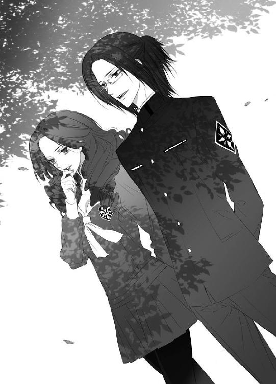
背後の建物から聞こえる賑やかな少女たちの声に、くすくすと蔵田実親は笑う。
「いや～、いつ来てもいいですね～」
耳をそばだて、一挙手一投足、どんな些細なことも逃すまいとする、女性たちの関心の対象になるのは、まさしく針の筵。いたたまれない。しかし蔵田実親は、この緊張感がぞくぞくと嬉しくて、堪らない────！
「その辺りで踏み止まってくれて、ありがとう」
芙蓉薫子は、蔵田実親に礼を言う。
「えぇ。あそこで、いつまで待たせる気だ、ぐずぐずするなと、薫子クンを罵倒していたり、先に扉を開けて振り返らずに建物を出るとか、そういう傍若無人バージョンにも、とってもそそられましたけどねぇ」
何あの人最低だわ、薫子お姉様になんて失礼なと、薫子お姉様親衛隊や信者の少女たちの刺々しい言葉や冷ややかな視線を一身に浴びることを想像するだけで、蔵田実親は恍惚となるが、交友関係という面で芙蓉薫子の株を下げることになるし、玄武の戦士の尊厳も地に落ちる。堪らなくそそられるが、これはやっちゃいけないと、我慢した。
蔵田実親は中身は真性のマゾヒストでも、万人受けするために外面は常によくしておきたい派だ。時と場合をきちんと弁えている。
「ところで、薫子クン、君、バッグは持っていないんだね。持ってあげるのに」
「荷物が多いのは嫌いなの。女王様ゴッコは、また今度ね」
到底重そうに見えない小振りな女性物のハンドバッグを、三歩下がって下僕のように持ち運ぶのも、蔵田実親は大好物だが、そんなことをすると芙蓉薫子は体裁が悪い。
にこやかに肩を並べて歩いている蔵田実親と芙蓉薫子は、雰囲気も爽やかで、秀才と美女のカップルそのものに見える。通りすがりに二人を見かけた者たちは、うっとりと羨望の眼差しを送り、溜め息を吐いて二人を見送った。
小此木神官長に指定された場所へ向かっていた蔵田実親と芙蓉薫子は、包帯だらけという痛々しい格好で、よろよろと向かいの歩道を歩いている二人の男性に気づき、足を止める。
「......薫子クン、面白い人たちがいるね」
「どうしたのかしら」
芙蓉薫子は形のいい眉を顰める。
見かけたことのない顔の男たちは、帝都の住民ではない。新嘗祭のために帝都に来た、余所の者だ。歳が少し離れているようだが、顔は似ていないので、兄弟や従兄弟ではなさそうだ。
お互いに支え合うようにして歩いている二人の男たちは、おどおどしながら前進しては足を止め、きょろきょろと周りを見回している。捻挫しているのか、片足を引き摺っていて、ゆっくりとしか動けないようだが、気持ちは急いているのが、傍目にもわかる。
何か探している。
「......落とし物かな？」
「そんな感じね」
そしてその男たちの後ろには、篠原勇輝と安藤奏がいた。薫子たちと同じく、様子のおかしい男たちに気づいて、尾行しているらしい。
「勇輝クンたちに話を聞いてみようか」
「そうね」
あの二人を見つけたのは、篠原勇輝たちが先のようだ。
向かいの歩道に移動して合流しようと、蔵田実親と芙蓉薫子は横断歩道に立ち、交通整理をしている警官が送る信号が、道路の横断可に変わるのを待つ。
満身創痍という格好なので、誰かに何かをしそうな感じではないが、様子のおかしい男たちに、城下を巡回していた制服警官が気づいた。
「────君たち......！」
不審者というより、困っている人に見えて、警官は親切心から声をかけたのだが────。
向かいから歩いてきた制服警官に声をかけられて、男たちは動揺した。身に疚しいところがあるのか、いきなり挙動不審になった男たちは、慌てて警官から逃げだす。
そして男たちの後ろには、篠原勇輝と安藤奏がいた。帝都学園高等部の制服を着崩し、両手をポケットに入れて歩いている篠原勇輝は、見た目、立派に怖い不良学生である。
目が合っただけでガンを飛ばすのは、野生のニホンザルと同じく篠原勇輝の癖だ。意味があって睨みつけたわけではない。
だが、篠原勇輝を不良少年だと思いこんでしまった男たちは、篠原勇輝の攻撃距離に入った途端に、チェーン（尻ポケットのウォレットチェーンなのだが☆）を振り回され、殴られると勘違いした。
後ろに警官、前に不良。
どっちも怖いとなれば────。
男たちが車道に飛びだす。
交通整理の警官が配置されている場所は、帝都大通りほどでなくとも、交通量が多い。
急ブレーキの音の直後に、鈍い激突音が聞こえた。
五節舞は四神の戦士と、奥庭を預かるお庭番の五人で舞うものだったが、奥庭のお庭番がいなくなってから、帝都神社の神官長が代役を務めていた。
「いやぁ、若い人たちとこんな派手な衣装を着て、晴れがましい舞台に立つなんて、恥ずかしいなー。照れますねー」
そんなことを言いながらも、帝都神社の社務所の奥の広間でいそいそと楽しそうに衣装を広げている小此木神官長に、宝物殿から衣装を運び出した鈴宮神官は、虫食いなしと確認された衣装を衣紋掛けに掛けながら、溜め息を吐く。
五節舞の五人分の衣装と仮面は、補修の要不要を厳しく確認して、この広間に置かれた衣桁で風を通して保管し、予行練習と本番にのみ使用される。
「本心からそう思われるのでしたら、お役を蒼司朗様に譲られたらよろしいんです」
奥庭のお庭番には、蒼司朗が就任した。年齢的にも蒼司朗は今期の四神の戦士の四人と同じぐらいなので、神官長がわざわざ五節舞に出ることはないのではあるまいか。
先代の四神の戦士の五節舞のときは違和感はなかっただろうが、今期の彼らとでは、想像しただけで引率の先生のようだ。────仮面で顔は見えないけれど。
「衣装の丈直しが必要でしょうから、こちらに蒼司朗様をお呼びしましょうか？」
放課後の今なら、蒼司朗は奥庭で作業をしている。すぐに呼んでこれるだろう。
くるっと振り返った小此木神官長は、人差し指を一本立て、ちっちっちっと舌を鳴らす。
「蒼司朗くんは、お庭番ですが、『まだ神官ではありません』よ？」
帝都の新嘗祭の五節舞の演者、四神の戦士と奥庭のお庭番は、神官の資格を持つ者が選出されていた。五節舞は神官による神事、五穀豊穣の舞いなのだ。
蒼司朗が奥庭のお庭番となってしまったのは、奥庭の四神様の意向でもあり黙認されたが、こと祭事ともなれば話は別だ。神官の資格を持たない蒼司朗には、神事に関わる資格はない。帝都城や帝都神社の中だけで終わる問題ではなく、祭事を見学する観光客の前で披露するものとなれば、神職に就いている者か否かが大きな問題になる。
奥庭の四神に見初められて、奥庭のお庭番になっても、神官の修行中の少年にこの優遇をしてしまうと、神社協会からのクレームがくる。
「事務的な事情ですけどね。蒼司朗くんを必要以上に表に出すことはしたくないんです♡」
祭事の見学には、余所の圏の神社の神官も大勢来る。神官の資格取得者の名前は、承認試験後に全国的に発表される。いかにも子供と見える小柄な蒼司朗が、五節舞の舞台に立てば、あれはどこの誰だろうと詮索されるのは必至だ。
「それにねぇ」
くすっと小此木神官長は笑う。
「蒼司朗くんが、見たこともない五節舞を舞うのは、大変だと思いますよ～？」
蟲を浄化するときのように、舞いには霊力云々というのはないが......。
「鈴宮くん、覚えられます？」
にっこりと問いかけられて、鈴宮神官は顔を引きつらせる。
「む、無理です......！」
祭事や神事を任された経験はあるが、ここ、帝都のような規模ではなかった。しかも舞いだ。幼い頃から着物姿で日舞の稽古をしていた者なら、何とかなるかもしれないが、一週間か十日で、人に見せられる......大舞台に立てるほどの舞いが披露できるとは思えない。
しかも五節舞の衣装は、宝物殿に大切に仕舞われるような、年代物の高級着物だ。金糸銀糸がふんだんに使われた着物と帯は、見た目よりもずっしりと重量がある。仮面で観客に顔が見えないことで少しは恥ずかしさが緩和されるが、視界は仮面で制限されて、動きにくくなる。
傷つけることなどもってのほかの重たい衣装を身に纏い、大勢の前で優雅に舞うのは、心身ともに負担が大きい。
今期の四神の戦士となっている少年少女は、幼い頃から実家の神社で神楽舞を披露するため、物心ついたときに日舞は祝詞と同じく、稽古を続けるものになっていた。自分が次期四神の戦士になるという覚悟と自覚があったので、四人は新嘗祭で奉納する五節舞の稽古も、四神の戦士になる前から行っていた。
「剣道の圏大会で優勝しているような蒼司朗くんですから、度胸はあるでしょう。蟲の浄化作業はある意味、剣道からの延長線上のようなものでした。少し経験値を上げれば、ものになるのは早かったです。でもねぇ。舞いとなると、いくら蒼司朗くんでも、勝手が違いますよ」
（蒼司朗くんの最大の奥の手である『緑の石』の力も、専門外ですしね）
植物を活性化させる神秘の力を持つ石も、今回はまったくあてにできない。
小此木神官長は、すっと視線を落とす。
「────それに、深入りしないほうが、いつでも出て行けます」
静かに腰を上げた小此木神官長に、衣桁に衣紋掛けを掛けた鈴宮神官は振り向く。
「神官長？」
「特に補修の必要なものはありませんでしたね。じゃあ鈴宮くん、後、お願いしますね。僕は打ち合わせに行ってきます」
にっこりと微笑んで、小此木神官長は帝都神社を出た。
五節舞の練習を開始する前に打ち合わせを行うのは、新嘗祭が始まった頃からの習慣だ。今期の四神の戦士は全員学生だが、社会人と学生だとか、全員社会人というときもあるので、練習時間の都合を相談することになっている。スケジュール調整という名目の、懇親会を兼ねたお茶会だ。
「吟座の英国茶房まで」
小此木神官長は帝都城公園にいた人力車に乗りこみ、今日の打ち合わせ場所に指定した店へと向かう。
「アフタヌーンティーの時間にちょうどいいですねぇ」
予約しておいた、三段プレートで供されるスコーンとサンドイッチとケーキ、ポットティーの優雅なお茶セットを思い描き、小此木神官長はにこにこと微笑む。
（あ、うちの神官だ。新庄くんたち、真面目に見回りを行っていますね。感心感心）
通りすがりに小此木神官長は、私服姿で城下を巡回している神官たちの姿を見つける。客を乗せて走る人力車に気づいて振り向いた新庄神官たちは、そっと小此木神官長に会釈した。
楽しい打ち合わせ場所に向かおうとしていた小此木神官長の耳に────。
急ブレーキの音と、鈍い激突音が聞こえた。
人力車を牽いて軽快に走っていた車屋が、少し速度を落とす。
「────小此木様、ありゃあ、事故りましたぜ」
「そのようですね」
ちょっと考えて、小此木神官長は言う。
「寄り道、してもらえませんか？」
「へい、合点でさぁ！」
新嘗祭の近いこの時期は、帝都に運ばれてくる物資が多く、また帝都外からの人間もたくさん滞在する。どこでどんな事故が起こったのか、近くにたまたま居合わせたなら、小此木神官長はそれを自分の目で見て、確かめておかなくてはならない。
救急車がサイレンを鳴らして事故現場に急行し、怪我人を収容して病院に向かう。
（人身事故ですか）
大事に至らなければいいと、小此木神官長は祈る。
到着した事故現場の近くには、四神の戦士全員が揃っていた。
７
話は聞きたいが、道端に帝都の有名人である四神の戦士が集合したうえに、小此木神官長までがいるとなれば、悪目立ちする。
「場所を変えましょう」
行ってくれと人力車を動かした小此木神官長に促され、もともと五節舞の打ち合わせのために外出した四神の戦士たちは、指定されていた店に移動する。
吟座・英国茶房。
古い土蔵の内部を改装して作られた、喫茶室を併設した高級洋菓子店だ。
人力車で先に到着した小此木神官長は、予約席に着いていた。名を告げるより先に、四神の戦士の到着を待っていた店員が速やかに近づいてきて、四人を小此木神官長の待つ、二階の予約席に案内した。案内を終えた店員は、恭しく一礼して下がる。
「────公費の無駄遣いじゃないですか？」
二階の奥にある個室に通された篠原勇輝は、呆れながら席に着いた。
すぐに四神の戦士が到着するとわかっていた小此木神官長は、先にテーブルに運んでもらった、人数分のアフタヌーンティーセットの向こうで微笑む。
「四神の戦士の皆さんは、いつも頑張ってくれてますからね。たまには労ってあげないと」
表情からはまったく考えの読めない小此木神官長に、安藤奏は愛嬌たっぷりに微笑む。
「何か、下心とか、あるわけないですよね？ 例えば、五節舞の舞台に、誰か『小さい人』を上げたいとか」
笑顔の奥に毒を隠して牽制する安藤奏に、笑顔で小此木神官長は小首を傾げる。
「舞台に上がる『小さい人』は、奏くん一人ですねぇ」
「......そうですか」
顔を引きつらせながら、安藤奏は微笑む。
四神の戦士の他の三人よりも年下なので仕方ないのだが、能力的に決して劣っていない安藤奏は、馬鹿にされているように聞こえるので、チビ呼ばわりされるのが嫌いだ。蒼司朗を皮肉ろうとして、墓穴を掘った。
篠原勇輝は、ちっと舌打ちする。
「ったりめーだろ、バーカ」
「バカって言う人がバカなんですよーだ」
「んーだと!?」
「二人とも、喧嘩は後で、お店の外でお願いね」
芙蓉薫子は、蔵田実親に椅子を引いてもらって、優雅に腰掛ける。
「五節舞の打ち合わせは、去年通りということで、特に変更とかはないんですよ。こちらに来る前に、衣装と仮面を確かめてきましたが、補修が必要な箇所もありませんでした。社務所で保管しますので、後は各自で具合の悪いところがないかを確かめて、当日に備えてください。五節舞奉納は、丑・寅・卯・辰の四日間。丑の日の夜に帳台の試。寅の日の夜に御前の試。卯の日に童女御覧。辰の日に豊明の節会です。練習は囃子方も合同で、明後日の夜六時半から帝都神社で行います。よろしいですね？」
「「「「はい」」」」
確認されたスケジュールに、四人は首肯する。
舞いを披露するのは、日にちと場所を変えて、合計四回。本来の五節舞は女舞だが、帝都では面と鬘をつけて、女人として舞う。金糸銀糸を使った豪華な衣装が重いのと、面と鬘で視界が悪いので、舞いは相当にハードだ。
四神の戦士と奥庭のお庭番である天の戦士がこれを舞うのは、体力面による理由も大きい。
勉学にも精を出し、夕方から舞いの練習をする四神の戦士たちは、常よりさらに多忙であり、些末事に関わっている暇はないのだが────。
「で、実親くん、さっきの事故って、何だったんですか？」
五節舞の打ち合わせは終了と、小此木神官長は蔵田実親に尋ねる。蔵田実親に尋ねたのは、四人のうち一番年上で、しかも生徒会役員をしているという、単純な理由からだ。
蔵田実親は一度、芙蓉薫子と顔を見合わせてから言う。
「僕と薫子クンは、何か探しているらしい二人組の若い男の人たちを見かけて。怪我をしているようだし、どうしたんだろうと思っていたんですよ。勇輝クンと奏クンが、僕たちより先に、彼らを見つけていたようなので、話を聞こうと思ったんですが」
「わたくしたちはちょうど、道路を挟む位置にいましたの。ですから、横断歩道を渡って合流しようとしていたら......、あの人たちの向かいから来た、巡回中の警官が声をかけて、それから逃げるように────」
車道に飛びだして、車に撥ねられた。
「後をつけていたらしい勇輝クンたちと合流して、話を聞こうとしていたところに、神官長がいらしたんですよ」
小此木神官長に視線を向けて言った蔵田実親の言葉に、芙蓉薫子も頷く。
二人から得られる情報は、ほとんどないようだ。
「えーと、じゃあ、勇輝くん？」
「奏が先だよな？」
「はい」
篠原勇輝に言われて、安藤奏は頷く。
「見た感じ、片足を引き摺っていて、よろよろと二人で支えあって歩いている、包帯だらけの人たちで、落とし物でも探しているように、きょろきょろしてて」
「それだけでも十分、妙な連中なんだけどさ」
「蟲の穢れを感じたんです。蟲そのものを隠し持っている感じではありませんけど。清め残した、みたいな......！」
帝都の家庭には、日常的にごく自然に蟲の穢れを落とせるよう、帝都の特産品である『よく効く傷薬』の成分を含む石鹼が配られている。手洗い、洗濯、食器洗い、様々なときに使えて、汚れを落とすのと同時に穢れも綺麗になるこの石鹼のおかげで、帝都の住民は、蟲の穢れを残すことなく、毎日を健康的に過ごしている。
若様のように生まれつき敏感というわけではないが、安藤奏はたぶん若様に次いで二番目、神職にある者では最も敏感に蟲の穢れを察知する。むっと安藤奏が反応したので、いつも若様と一緒にいる篠原勇輝も、蟲だとわかり警戒した。
「余所から来た人に、蟲の穢れを感じることはほとんどありませんから、気になったんです」
新嘗祭が始まる前の今時分から帝都にいるのだから、長期滞在者だ。風呂や洗濯など、意図しなくても、清めの石鹼の恩恵に与っているはずなのに、穢れているのはおかしい。
蟲は帝都にだけ生息する。大きな穢れに接したのでもなければ、清め残した、という感じにはならない。
「それで、ちょっと後つけて、様子を探ってたところだったんだ。────俺、あんな奴らに会った覚えねぇんだけど。っかしーな。何脅えやがったんだ？」
まったく解せないと、篠原勇輝は首を傾げる。
警官に声をかけられ、挙動不審になった男たちは、篠原勇輝からも逃げだした。
男たちと対峙した瞬間、反射的に睨みつけたという自覚が、篠原勇輝にはまったくない。
解せないと首を傾げる篠原勇輝の姿を見つめ、小此木神官長と三人は、心をひとつにする。
（逃げたくなる気持ちは、わかるから！）
睨みつける篠原勇輝のリーチに入ったなら、すぐにも殴られそうで怖い。
「────薫子さんたちは、道路を挟んだ遠目に見て、その方たちが怪我をしているとわかったんですよね」
「頭や手に包帯を巻いてましたもの」
なるほど、それなら一見してわかる。
「......事故にでも遭われたんでしょうかねぇ」
ふむと小此木神官長は考える。薬局で包帯や薬を買ったか、病院で手当てを受けたか。
「どんな人物なのかは、ちょっと探れば、すぐにわかりそうですね」
こつん、とどこかの壁が鳴った。
「お茶をくださるかしら？」
砂時計の砂も、ちょうど落ちきった。
芙蓉薫子の言葉に、どこからか現れた英国茶房のメイド姿の柳生真純は、ティーコージーを取りポットを持ち上げた。
ヘッドドレスまでばっちり決めた可愛いメイドさんは、ポットを持って各人の許を回り、カップにお茶を給仕していく。
「本日の紅茶はダージリンでございます。スコーンはどうぞ、温かいうちにお召し上がりください」
英国茶房のメイドになりきって、柳生真純は恭しく一礼する。任務のためどこにでも潜入する公儀隠密は、各種制服の着こなしや、作法も習得済みだ。
小此木神官長は温かいスコーンを皿に取り、行儀よく銀盆を持ち、メイドらしく控える柳生真純に微笑む。
「で？ 何かわかりましたか？」
先ほど、四神の戦士たちの目の前で起こった交通事故。近くで身を隠し、公儀隠密の任務に就いていた柳生真純は、他の公儀隠密と連絡を取って、情報を集めていた。
『情報が集まりました』と知らせるように気を開放した柳生真純に、芙蓉薫子が声をかけて入室許可を出したのだ。
アフタヌーンティーセットは、五人分しか仕度されていないので、メイドとして同室すれば、誰の目にも違和感がない。
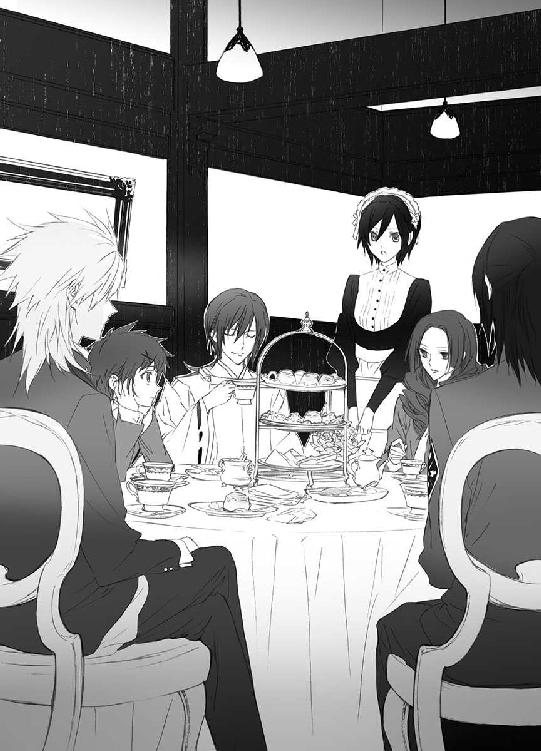
「事故に遭った二人は、人形町の植田屋に宿を取っている大道芸人、道化師の方たちだとわかりました。染吉アキラさん二十一歳、ナオトさん十六歳。アキラさんが一昨日、ナオトさんが昨日、帝都に来られたようです。植田屋の女将さんに確認したところ、アキラさんは七年前から、ナオトさんは去年から、新嘗祭の頃の興行をされています。二人に血縁はなく、芸事の兄弟弟子です。帝都以外での興行は、それぞれ一人で行っているときもあって、今回、別々に帝都入りしたのも、その理由からです」
同じ師匠の下で芸を学ぶと、兄弟弟子になり、同門として同じ苗字を名乗る。
「先ほど、道路に飛びだして交通事故に遭われたお二人は、帝都南病院に運ばれました。昨日の午後に、供物を運んでいた車が玉突き衝突の事故を起こし、その車のうちの一台が歩道に突っこんできて、撥ねられました。帝都南病院に入院中だったのを抜けだして、事故に遭われたようです」
抜けだした病院に、救急車に乗って逆戻りだ。
「今回も幸い、骨折などの大怪我ではありませんが、打撲と捻挫で入院されました。前回の事故と、今回の事故現場はほぼ同じです」
「......何か探してたみたいって？」
小此木神官長の言葉に、四神の戦士たちは頷く。
「お巡りさんに声をかけられて逃げたんだから、よくない物を探してたんですよ」
「何度もこの時期に帝都に来てるんなら、俺の顔知ってても、変じゃないな」
安藤奏に続けて、白虎の戦士だと知られていたのだろうと、篠原勇輝は納得する。
それは、どうだか知れないけれど。
柳生真純は言う。
「前回の事故の処理を確認したところ、現場に散らかった物はすべて回収されたそうです。染吉さんたちが持っていたと思われる道具類も、全部回収して、病院で確認を取ったと記録されています」
「大きな声で言えない物を失くしたのかなぁ。何でしょうねー？」
くすくすと小此木神官長は笑う。
「怪しいな。ちょっとシメるか」
「勇輝クン、怪我人相手です。死なない程度に」
「いえ、勇輝様、実親様、調査済みですので」
過激な発言を、柳生真純は止める。
優雅にお茶を飲み、にこりと芙蓉薫子は微笑む。
「そう。素直に話してくれたの」
「兄の藤丸が『聞きだし』ました」
病院でどんなやりとりがあったのか、詳細を聞いてはいけない。
無言でスコーンを口に運び、紅茶を飲む五人に、こほんと小さく咳払いして、柳生真純は続ける。
「......新嘗祭のときに興行していた道化師であるのは本当ですが、よくない行いを企んでいたことが判明しました。────帝都の蟲を封じた供物で、爆弾を製作していたらしく」
「蟲の、爆弾？」
むっと小此木神官長は眉を顰め、柳生真純は頷く。
「狭い場所に閉じこめられた際の、蟲の特性を利用したもののようです。爆発予定は、新嘗祭最終日、奉納の儀の時間────」
「蟲の時限爆弾かよ！ ふざけんな！」
ばん！ と乱暴に篠原勇輝がテーブルを平手で叩く。
神聖な儀式の最中に、蟲の穢れを撒き散らそうとは、酷いことを考えたものだ。
「真純ちゃん、昨日の玉突き衝突事故って、供物を運んでいた車って言ってたわね」
「そこに、紛れた可能性大ですね」
難しい顔をして、蔵田実親は眼鏡の位置を指で直す。
「そして、城下を巡回中の神官が見つけていないということは、『見つけにくいモノ』ということになります」
自由に動けない状態の蟲は、生息に必要な穢れを強く求める。結果、穢れを放出しているのではなく、吸収するモノになっている。どこに蟲がいるのか発見するには、穢れを敏感に察知できる高位の神官が、その供物にかなり近寄って、探らなければいけないだろう。
各圏から運ばれた供物は帝都神社に奉納され、帝に献上される。献上品は帝が食し、その後、皆に振る舞われる。
その供物が蟲爆弾なんて────！
「爆弾って、供物の何に蟲を入れたんですか!?」
安藤奏に問われて、柳生真純は困った顔になる。
「......すみません、そこまでは聞きだせなくて────」
どうして、と追及してはいけない☆
また後ほど、と言えない柳生真純の裏事情は、察してやらなければならない。
「とにかく、見つけないといけませんね。秘密裏に。供物を管理している方たちには、気づかれないようにしないと」
小此木神官長は紅茶を口にして、ふうと溜め息を吐く。
「皆さん、『内緒』ですよ？」
たとえ他人が混入したのだとしても、自分の圏の供物に穢れたモノがあったなら、それと一緒に運搬したもの全部、奉納することはできなくなる。
不祥事は隠蔽したいし、他圏のことであってほしい。────知れれば、恐慌になりかねない。悪くすれば、今年の新嘗祭は中止だ。
「......うちの神社の神官を動かすのは、厳しいです」
視線を落とす安藤奏に、蔵田実親も言う。
「それは僕のところもです。というより、帝都神社も含めて、どこも無理ですよ」
「特別警戒中ですものね」
新たに人員を割くことはできない。それは、帝都警察や公儀隠密も同じだ。
平和の象徴であり、忙しくしないように取り計らわれている四神の戦士たちも、五節舞の練習をしなければならないこの時期ばかりは、多忙だ。
どんな神官よりも、鋭敏に蟲の穢れを察知できる者は一人、いるけれど......。
「若様は絶対ダメだからな！」
大声を出す篠原勇輝に、一同は大きく溜め息を吐く。
「それは、まぁ......、最終兵器ということで、大事に温存しておきましょう」
お忍びでも、厳重警戒中の今は、事態がややこしくなるので、やめておいたほうがいい。帽子を目深に被ったり、頭部を隠し気味にして顔がよく見えなければ、確実に職務質問の対象者になる。特例の連絡事項は、うまく伝わらないと思っていて間違いない。
「あ、いるじゃないですか、ちょうどいい人」
ぽんと安藤奏は手を打つ。
「あの人、きっと暇ですよ。新嘗祭に関係ないし！」
穢れた蟲の気を察知できて、穢れを浄化でき、どこにでも潜りこめそうな────。
柳生真純には、『何に蟲を仕掛けたのかわからない』と伝えたが。
帝都南病院から出てきた柳生藤丸は、背後に気配を感じる。
「チクるのか？」
「────いや？」
柳生蘭丸は、藤丸と肩を並べて歩く。
藤丸は怪訝な顔で蘭丸を見る。
「何で？」
「面白くないのは、お前だけじゃないよ」
「ふーん......」
くすっと藤丸は笑い、むっとして蘭丸は藤丸の頭を小突く。
「万が一のフォローはするぞ、藤丸」
「それはもちろん」
昨日、玉突き衝突の事故を起こした車が、どこの圏の供物の何を運んでいたのか、調べればわかる。該当するものは、かなり絞られるはずだ。
（市場に探り入れられりゃ、一発だけどな。思うことは、皆同じか）
藤丸は叱られるのを覚悟していたが、誰もそれについては触れてこない。
高価な買い物をした余所者は、店員の記憶にも新しい。入院している染吉アキラ本人に聞き取り調査（尋問？）を行ったのは藤丸だけだが、他の公儀隠密・裏班が動いていないはずはない。調べはついているはずだ。
公儀隠密、皆で口を噤んでしまえば、それは『わからない』ことになる────。
「────と、いうことなんで、お願いしますね♡ 蒼司朗くん」
「は？」
望月造園・望月邸を訪れた小此木神官長に、今日の鉄板当番の池波が焼いた焼きソバの皿を運んだ蒼司朗は、きょとんと目を瞬く。
「夜間学校の授業もありませんから、時間ありますよねー」
「（って！ そんなの、勝手に決めないでくださいよ！ 蟲入りの蟲喰い供物は、オレ的にもＮＧですけど、オレだって、祭りに備えて、今すっげー大変なんですから！）」
蒼司朗を訪問した小此木神官長の話の邪魔をしないよう、気を遣って離れてくれている親方の望月左近に聞こえると、こっちの屋台のことはいいからときっと言われる。そうわかっているので、蒼司朗はひそひそ声で、火傷と切り傷で絆創膏だらけの手を見せ、涙目で訴える。
連日頑張ってはいるが、まったく上達しているように思えない。これでは、焼きソバ屋台の当番のローテーションに入れない。今も、祭り用法被と捻り鉢巻、団扇装着完了で、格好はしっかりお祭りで、気合いだけは十分なのに！
どれだけ上達できるか。蒼司朗の鉄板修業は、これから祭りまでが重要なのだ。
小此木神官長は箸を置き、そっと蒼司朗の手を握る。
「可哀想に......。蒼司朗くんがこんなに手を傷めている姿なんて、僕は見たくない......」
「神官長......」
蒼司朗の手を包みこむように握っている小此木神官長の手は、白くてしなやかだが、剣道の有段者でもあり、毎日枝打ち斧を握って庭仕事をしている蒼司朗の手は、ごつごつである。
「口の周りに青海苔ついてますよ」
白けた声で冷ややかに言った蒼司朗に、えへっとお茶目に笑った小此木神官長は、握っていた手を放し、口元を拭う。
「んー、ダメ？」
「ダメです」
「ざーんねん！」
色仕掛け、失敗☆
「（オレ、絶対、屋台で焼きソバ焼くんですから！）」
決意に燃えて、蒼司朗は拳を握る。
庭仕事だけでなく、屋台でも見習いで、材料運搬などの雑用係になるのは嫌だ。
「ミギャ」
「キュオ」
「ピ」
「「（しゅー）」」
蒼司朗にくっついているピヨ四神も、応援してよとばかりに顔を出して、小此木神官長に訴える。蒼司朗が美味しいのを焼いてくれないので、ピヨ四神は熱々の焼きたての焼きソバを、一口貰うこともできないのだ。これはつまらない☆
じいーっと見つめるピヨ四神の視線が痛い。
（これは、困りましたねぇ......）
小此木神官長は、庭師の焼いた焼きソバを美味しくいただきながら思案する。
奥庭の四神様の機嫌を損ねたくはない。神様の機嫌を損ねると、一般的に『祟られる』。外見が小さくても、ピヨ四神は決して力弱い神ではない。────取り憑かれているのは、蒼司朗のようだが。
「でもねー、動けるのは、蒼司朗くんだけなんですよねー」
「............」
「ミゴゴ」
「キュイ」
「チュピュ」
「「（しゃー）」」
「屋台の練習は邪魔しません、えぇ！」
蒼司朗は何も言わないが、不満いっぱいの顔をするピヨ四神に、小此木神官長は苦し紛れに断言する。
「っせい！」
「っせい！」
「っせい！」
ドンドン！ シャンシャン！
お御輿の練習をする威勢のいい声と太鼓と鈴の音が、望月造園の前の道を通る。
「筧くーん、頑張ってー！」
望月邸の外に出た清志朗が、御輿を担いでいる筧俊彦に声援を送った。
小此木神官長は焼きソバを食べながら、人差し指を一本立てる。
「じゃあ、こうしましょう♡」
屋台の焼きソバの練習をする蒼司朗を邪魔せず、蟲入り供物の探索と除去を蒼司朗に任せられる方法が、ひとつだけある。
望月造園・望月邸の庭木に潜んで話を盗み聞きしていた柳生藤丸は、にっと笑う。
（お手並み、拝見いたします。『お庭番』様）
８
屋台の焼きソバの練習は、希望者から順番に行い、祭りの日までに全員が審査を受けて合格点をとっておく。合格点に満たない者は、ずっと鉄板に居残って練習を続ける。
新参者の蒼司朗は、当然、毎日鉄板練習である。
「────若様ってさ、オレたちのこと避けてるよな」
焼きソバの鉄板修業に精を出しながら、ぼそっと呟いた蒼司朗に、清志朗は首を傾げる。
「え？ まさか。そんなことないよ？」
「そっかなー......」
清志朗は笑うが、蒼司朗はどうも納得できない。
同じ寮で生活し、同じ学校に通っていても、若様の姿を見かけることは多くない。寮にいるときの若様は、寮生の共用スペースを利用することなく自室で過ごす。食堂を利用して食事をとることもない。
ピヨ四神にご飯を食べさせなければならない蒼司朗は、生徒会室で帝都神社から運んでもらった昼食を食べるのだが、そのときに若様がそこで昼食をとっても、衝立で仕切られてしまうので、若様の姿は見えない。
（若様は自分が『穢れてる』とか言うけど......）
確かに、蟲の穢れに反応して体調を崩すのなら、そのときには幾らか『穢れて』いるのかもしれない。だが、蟲の放つ穢れが城下に広がっているのなら、穢れを纏っているのは若様一人ではなく、他の皆もだ。体よく距離を置かれているようにも思えてならない。
（それに......）
若様はとっても足が速い。蒼司朗は逃げる若様に、一度として追いつけたことがない。あんなに力いっぱい逃げなくてもいいのにと思う。思い出すだけで、気持ちがモヤモヤする。
「若様はね、皆のことを、いつもとても考えていらっしゃるよ」
皿に焼きソバを盛りつけながら、優しい笑みを浮かべて、清志朗は言う。
「近い未来、若様が帝になられるのが楽しみだよね。若様は、歴代の帝の誰よりも、きっと綺麗で素敵な帝だよ」
しかも若様は、賢帝の誉れも高い現帝に育てられて帝になるのだ。優しく、賢いことは、疑うべくもない。人望もある。政治や生活を案じることはない。
「......綺麗で素敵な帝になるっていうのは、文句ない」
光り輝く太陽のように明るい金の髪と碧い瞳の、見目麗しい若様は、姿をちらりと見かけるだけで、幸せな気分になる。一日、いいことがありそうだ。存在するだけでそんな気分になれる人なんて、若様の他にはいない。
（でも、身体が弱い、今のままじゃ......ダメだ）
帝は激務だ。蟲の放つ穢れで体調を崩していては、政治を行えない。悪くすれば寿命も縮む。
「ミギュ」
「キュイ」
「ピピ」
「「（しゅー）」」
憂える蒼司朗を心配するように、蒼司朗にくっついているピヨ四神たちが、身を摺り寄せる。
焼きソバを炒めるヘラを持つ手を少し止めて、蒼司朗は優しいピヨ四神たちを撫でる。
「うん。一緒に考えよう」
若様のために、何ができるのか。
きっと何かあるはずだ。
「さぁ、蒼くん！ 次で練習は最後だよ！ しっかり頑張って！」
時間と量を考えて、最後の一食だ。明日は屋台を設置し、祭りの準備をするため、庭師全員の前での鉄板の練習はできない。完成間近だった蒼司朗の作りかけの焼きソバを、自分の前の鉄板に移して言った清志朗に、蒼司朗は鉄板を掃除し、綺麗な油を引いて顔を上げる。
屋台の焼きソバ、最終審査の一食だ。具材を切り揃えるところから盛りつけるところまで、すべて蒼司朗一人でやって、腕前を判定してもらう。
「蒼ちゃん！ 頑張れ！」
「大丈夫！ 上手くなってるって！」
「我らがお庭番様、お手並み拝見っ！」
連日、夕飯に焼きソバ定食を味わってきた庭師たちは、やんやと蒼司朗を囃し立てる。
蒼司朗は左手にヘラ、右手に包丁を握り、呼吸を整え、気合いを入れる。
「────望月蒼司朗、参る！」
挑むのは、ほどよく焼けた熱々の鉄板である。
新嘗祭の前日、帝都の学校は午前中だけの授業になり、新嘗祭が終わる翌日の午前中まで休校になる。祭りの片づけをしたり、気持ちをしっかり切り替えて、授業は午後からだ。
午前中だけになった授業が終わったので、若様は篠原勇輝に送られて、お城に戻る。これから準備をして、いよいよ明日から新嘗祭が始まる。
ぽぽんと音を立てて、昼の青空に、打ち上げ花火の空包が上がった。
今年の新嘗祭も、帝都は全日、好天に恵まれそうだ。
「────何を隠している？」
唐突に尋ねられ、篠原勇輝はドキッとする。
「な、何がですか？ 若様に隠していることなんて、あるわけないですよ」
予想通りに惚けた篠原勇輝に、若様は溜め息を吐いた。
「僕には話せない、話したくないというのならいい。無理には聞かない......！」
憂える金髪の美少年────。
（うっ......☆！）
篠原勇輝は、酷い罪悪感に襲われる。若様が憂えるのは、篠原勇輝が隠しごとをしているせいだ。若様だから話せない、話したくないというのではないのだけれど......。
「明日の夜だな、帳台の試は」
若様は話題を変える。
帳台の試は、五節舞を帝と若様の前で披露するものだ。この翌日、御前の試では帝都の政府高官の前で五節舞を披露し、さらに翌日、童女御覧の儀では帝都及び各圏からの招待客の前で五節舞を披露し、その翌日、豊明の節会で一般大衆の前で五節舞を披露する。
「楽しみだ。うん、とても楽しみだな」
そう言うくせに、こちらを見ない若様に、がくりと篠原勇輝は両肩を落とす。
隠しごとをしているのはバレていても話せませんと突っぱねて、こちらの五節舞はご覧くださいと言うのは、ちょっと都合がよすぎる。
そして身体の弱い若様は、楽しみにしすぎて興奮してしまうと、熱を出したり、具合が悪くなることがよくある。
明らかに、脅されている☆
「────誰にも内緒ですよ？ 俺から聞いたとか、言わないでください。他の人に話すのも、絶対に駄目ですからね......！」
「うん」
にこっと若様は微笑む。一気にその場の光量が増したと錯覚するような、眩しいキラキラの笑みだ。負けたと篠原勇輝は観念する。しかしくすぐったくなるような、嬉しい敗北だ。まったく、若様には敵わない。
「（ちょっと前のことなんですけど────）」
声を落として話す篠原勇輝に、そっと若様は身を寄せる。
蒼司朗の焼きソバ修業には、準備期間中、たっぷりかかった。
「蒼くんと僕と池波さんの当番は、お祭りの最終日だからね」
「ごめんね、清ちゃん、我が儘言って」
蒼司朗が無理せず、屋台の店番ができるのが、この日しか駄目だったのだ。本来、見習い庭師であり、一番下っ端である蒼司朗が都合など言えるはずはないのだが、小此木神官長が蒼司朗を訪ねてきたのを知っている庭師の皆は、快く譲ってくれた。
「お役目、頑張ってね、蒼くん」
蒼司朗が望月造園の屋台の焼きソバの修業をして、なおかつ、新嘗祭の最終日までに、染吉兄弟が作ったという蟲入り供物を探しだす、効率的手段────。
「っしゃあ！ 準備万端！」
「ミギャ！」
「キュオ！」
「チュピッ！」
「「（しゅー！）」」
法被に鉢巻、地下足袋。上から下まで、帝都のお祭り装束をびしっと決めて、刃の部分を大団扇に偽装した愛用の枝打ち斧を握った蒼司朗は、ピヨ四神と気合いを入れる。
「────蒼くん！ 今年の第一御輿、阿壱圏のお御輿が出発したよ！」
音を立てて上がった、お御輿出発の打ち上げ花火を見て、清志朗が裏木戸を開けた。
蒼司朗は、大団扇を握り直す。
「帝都城お庭番、望月蒼司朗、参る！」
「ミギャギャ！」
「キュアキュオ！」
「ピチュピ！」
「「（しゃー！）」」
「はい、気をつけていってらっしゃい」
身を翻して木戸を潜る蒼司朗とピヨ四神を、火打石を握った伯母の梢は切り火を打って、送りだした。
あの日、焼きソバに舌鼓を打ちながら、小此木神官長は蒼司朗に教えた。
「帝都に運びこまれた供物は、新嘗祭当日まで各圏の倉庫で厳重に管理されます」
供物はすべて、厳重に検査されてから、帝都にある各圏の圏民会館に運ばれて、大切に保管される。供物の到着を知らされた神官が、供物を検めた倉庫の扉には封紙が貼られ、新嘗祭の日に封紙を破ってお御輿に載せるまで、供物には誰も触れられない。
「今回の蟲入り供物......、抜き打ち検査とか、適当なことを言って調査して、虫食いがあると言って難癖をつけて回収しようかと思いましたが、神官が調べると、物々しくなっちゃいそうなんです。妙な噂が立ちそうで困るんですよね」
爆弾になる形で封入されている蟲を見つけるのは、気に敏感な神官でも、かなり難しい。検査に時間がかかると、何か事件性があるのかと、警戒される。
「蒼司朗くんなら、そこのところは問題ないでしょう」
蟲の気を神官の誰よりも敏感に察知するほどの力はないが、蒼司朗には奥庭の四神様がついている。ピヨ四神なら、蟲入り供物を見つけるのは造作もない。
だが、蒼司朗のような子供が、大人の神官に混じって抜き打ち検査に回るのは変だし、蒼司朗には抜き打ち検査に付き合うような時間はない。
厳重に保管された供物は、新嘗祭当日、身を清めた担ぎ手たちによってお御輿に載せられ、お御輿は開口部を封紙で閉じられ、帝都神社に運ばれる。
「封紙を貼ったところは開けられませんけど、お御輿の中の供物を確認する方法が、ひとつだけあるんです。蒼司朗くんなら、お御輿の担ぎ手に紛れて、お御輿に近づけるでしょう。担ぎ手の中心に入って、お御輿の下にもぐりこんでください」
それは、何が何でも絶対に！
いくらピヨ四神でも、ある程度は供物に近寄らなければ、蟲入り爆弾を感知することはできない。
「これは内緒なんですが、お御輿の底板は、組み木の要領で順序よくずらしていくと、隙間ができる仕組みになってるんです。封紙を貼ったお御輿は、結界で閉じられていますから、害虫やネズミが入りこむことはありませんし、お御輿の秘密を知る者がいても、邪な思いを持つ者の手は、お御輿の中には入れません。でも、奥庭の四神様の護人である蒼司朗くんなら、お御輿の中を探ることができるでしょう。蟲の入った供物を、密かに取りだせます」
蟲の入った供物が紛れていないか、担いで運ばれているお御輿の中身を確認して取りだす。
「蟲爆弾の回収を、お願いします。新嘗祭を護ってください」
（言うのは、簡単だよな）
しかし、時間などの条件をすべて考慮すると、確かにそれしか方法はない。蒼司朗も、勝手を言った自覚がある。
四日間にわたって帝都神社に運ばれる四十七都道府圏の供物を運ぶお御輿、その中のどれかに、供物に紛れた蟲入りの爆弾がある。
「一日目で、さくっと当たってくれると、楽なんだけどなぁ」
早く見つかれば、お役御免だ。蒼司朗は清志朗たちと一緒に祭りを楽しむこともできる。
蒼司朗は大団扇を肩に担ぎ、お御輿が行く、帝都大通りに向かって走る。
帝都の城下は、祭り提灯で賑やかに飾られ、屋台が並び、住民と観光客、そして商人や大道芸人たち、巡回警備する警官たちなど、大勢の人間でごった返していた。あちこちで知り合いたちとはぐれる人や迷子も続出している。
唯一、帝都の住民、または祭りに参加する者は、揃いの祭り法被を着ているので、わかる。
（清ちゃんに教えてもらった、絶好のごった返しポイント......）
蒼司朗は御輿の担ぎ手に紛れこめるだろう場所目指して、人混みを突き進む。一番御輿の通過を待っている人々が、賑やかだ。
滅茶苦茶混んでいるのに────。
ぽつっと一箇所だけ、空間ができている場所がある。
（あれ？）
何だろうと、人混みを進みながら目を凝らした蒼司朗は、その空間の中心に、少年が一人いることに気づく。
祭り装束の男性で、手拭いで頭をきっちりと覆い、もう一本の手拭いで口元を守っている。お御輿の担ぎ手は、髪を引っかけたり埃を吸わないように、そんな格好をするので、それは珍しい格好ではない。度の強そうな眼鏡を掛けていて、顔はよく見えないけれど、立ち姿がとても綺麗だ。高校生ぐらいだろうか。
（────誰だろう）
何だか気になって、蒼司朗はその少年に注目する。少年が気になるのは蒼司朗だけではないらしく、皆が牽制しあって、そこだけぽこっと空間ができているのだ。近くを通り過ぎる者たちは、老若男女を問わず、ちらちらとその少年の様子を気にしている。
（やっぱり顔、よく見えないなぁ）
かなり近づいたけれど、はっきりわからない。
「ミギャ」
「キュオ」
「チュピ」
「「（しゅー）」」
蒼司朗にくっついているピヨ四神が、ひょいと顔を出し、甘えるような声をあげた。
注目の人物が、はっと、振り向く。
（え？）
ピヨ四神の声は、普通の者には聞こえないし、姿も見えない。
驚く蒼司朗にくっついているピヨ四神は、ご機嫌で顔を出し、尾を動かす。
「望月蒼司朗」
件の人物に名前を呼ばれ、蒼司朗は仰天した。
「わ......！」
（若様!?）
目を剝く蒼司朗に、若様は颯爽と近づく。ぽっかり空いた空間も、若様と一緒に移動した。
「四神様、ごきげんよう。ここなら会えるだろうと思って待っていた」
「なっ、ななな、何で......!?」
「いきなりで驚かせてしまったな。事前に連絡できなくてすまない、望月蒼司朗。話は聞いた。僕も手伝う。奥庭の四神様の手を煩わせなくても、僕なら、見つけられる」
自信を持って断言するように、若様は誰よりも蟲の穢れに敏感だ。確かに、供物に紛れた蟲爆弾も、すぐに見つけられるかもしれないが────。
「だっ、駄目です！ 絶対駄目っ！」
若様のおかげで広くなった場所で、若様と一緒に注目されながら、蒼司朗は即座に却下する。
蟲爆弾の調査は、威勢よく突き進むお御輿の担ぎ手の中に混じり、その間を搔い潜って、お御輿の下に入りこんで行う。担ぎ手が交代のために入るのも出るのも、相当に大変だ。
小柄で敏捷な蒼司朗でも、揉みくちゃになり、身体のあちこちをぶつけるだろうと覚悟しているような場所に、若様を連れて行くなんて、とてもできない。
「何が駄目だ!?」
「何もかもです！」
怪我をさせるかもしれないのも困るが、群衆の中に若様がいるとわかれば、パニックになりかねない。顔なんて見えていない今でさえ、空間ができるぐらいなのだ。頭に巻いた手拭いや、口元を隠した手拭い、眼鏡が外れたらどうなることか────。大惨事の予感に、蒼司朗は慄く。
「（や、柳生さん......っ！）」
藁にも縋る思いで、蒼司朗は小声で、この群衆の中のどこかにいるだろう公儀隠密の少女を呼ぶ。
「────いかがなさいましたか？」
すぐに右横から聞こえた柳生真純の声に、蒼司朗は振り向く。
「柳生さん......！」
救いの天使である少女は、祭り法被に、捻り鉢巻も勇ましく、足元は動きやすい地下足袋と、男の子仕様の祭り装束をばっちりと決めていた。同年代の少年が一人加わったように見えて、傍目にはまっく違和感がない。
「柳生さん、この、人を......！」
蒼司朗の示す人物をまじまじと見つめ、柳生真純は仰天する。
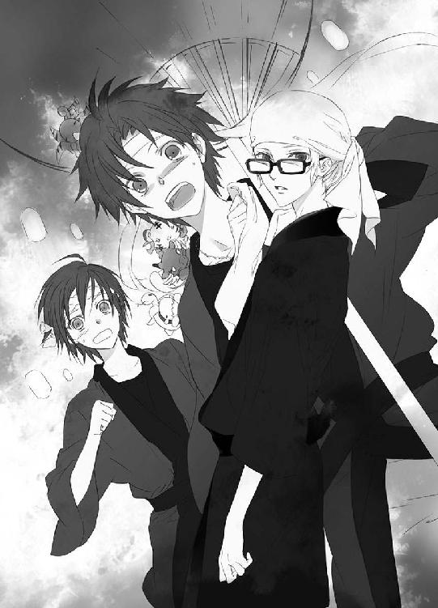
「わ（かさま）！」
叫びを吞みこんで、柳生真純は小声で若様に言う。
「（確か本日は、ご気分が優れないと、お城でお休みになっているはずでは!?）」
柳生真純はそれを確認してから、城下に出た。それなのにどうして、元気な様子で若様がここにいるのか。訝しむ柳生真純に、若様は迷いのない口調で答える。
「帝都と民を護るのは、次期帝たる、僕の責務だ。望月蒼司朗が動くのなら────」
「お話は、後ほどゆっくり伺います。ご無礼をお許しください」
お城を抜けだした事情を悟った柳生真純は、遠慮なく若様の言葉を途中でぶった切った。
「兄さん」
「「承知」」
どこからともなく、柳生兄弟（ばっちり祭り装束）が現れ、若様の左右に立つ。
若様の一人歩きは、禁止である。ましてや城下の人混みで、危ないことなどもってのほかだ。
「僕は────！」
言いたいことは山盛りあるようだが、若様は柳生蘭丸と藤丸に連れられ、お城に強制的に連れ戻された。
「ミギュギュ～」
「キュア～」
「チュピ～」
「「（しゅ）～」
若様～！
蒼司朗にくっついているピヨ四神は、引き離される恋人を追うように、連れ去られる若様に向かって、前肢と手羽を伸ばす。
「いや、もういいから」
よしよしとピヨ四神を撫でた蒼司朗は、信頼できる人たちに守られ、安全域に戻っていく若様の姿が人混みに紛れて見えなくなって、ほっと息を吐き、肩に入っていた力を抜く。
「申し訳ありません、蒼司朗様......！」
柳生真純は、深々と頭を垂れる。若様効果（？）がなくなって、ぽっかり空いていた空間が狭まってきて、蒼司朗は苦笑する。
「うん、びっくりした」
まさか若様が、お城を抜けだしてこんな場所まで来るなんて、想像もしていなかった。
「公儀隠密は、城下の至るところにおります。蒼司朗様の身に危険がないよう、お役目のお手伝いは、わたしたちが行いますので、どうぞご安心を」
「あぁ、うん。よろしくお願いします」
頭を下げる柳生真純に、蒼司朗も頭を下げる。
「ミギュギュ」
「キュァン」
「チュピ」
「「（しゅー）」」
蒼司朗にくっついているピヨ四神も神妙な様子で、同じように会釈（？）する。
周囲の喧騒が大きくなり、調子のいいかけ声と太鼓の音が近くなる。
「阿壱圏のお御輿が参ります。ご準備を」
柳生真純に促され、蒼司朗は大団扇の柄を握り直す。
「────お庭番、望月蒼司朗、参る！」
９
（しかし、本当にびっくりしたなぁ......！）
若様があんな格好で、こんな場所に現れるなんて────。
しかも、具合が悪いから寝ていると噓を吐いて、お城をこっそり抜けだしてきたようだ。
（若様って、何か、すごい真面目な人だったんだ）
祭り装束を身に纏い、特徴的な目立つ金の髪をぴっちりと手拭いで覆い隠し、眼鏡を掛け、口元も手拭いで覆い......。
柳生真純は知らなかったようだが、しっかり変装した（つもりの）若様がこっそり城を抜けだすのは、各所に身を潜ませていた公儀隠密たちには、ばっちりとわかっていた。何の目的で、そんな格好をして出かけるのかがわからなかったから、咎めずに自由に動かされていたのだ。
蒼司朗と接触し、新嘗祭を台無しにしようとする蟲爆弾の発見に力を貸そうとしているとわかったなら、後は速やかに、お城に戻ってもらうだけである。
────帝都と民を護るのは、次期帝たる、僕の責務だ。
きっぱり断言した若様の声を思い出し、蒼司朗の頰が緩む。
（すげー、かっこいいじゃん......！）
誰かに見つかったならお城に連れ戻される、祭りを楽しんでいる人々の妨げになってはいけない、余計な混乱を起こしてはいけない、自分が若様だと群衆に気づかれないようにしなければと、きっと若様はどきどきしながら、一生懸命お城を抜けだし、蒼司朗と合流しようとしていたのだ。
（若様の思いと覚悟、オレが預かりましたから！）
「ミギャ！」
「キュイ！」
「チュピ！」
「「（しゃー！）」」
賛同するように、蒼司朗にくっついているピヨ四神も、名乗りをあげる。
思いはひとつだ！
「っせい！」
「っせい！」
「っせい！」
ドンドン！ シャンシャン！
威勢のいい声と太鼓と鈴の音目指して、混みあう群集を搔き分け、蒼司朗はお御輿に近づく。
（お御輿は、一日に十四────）
四日間に分けて、お御輿は日のあるうちに、帝都神社まで供物を運ぶ。
そのどれかに、蟲の爆弾の入ったお御輿がある。
清志朗に教えられた場所、帝都大通りに出る道のこの角は、若様も目をつけていた、混雑ポイントだ。お祭り見物に集まっていた人たちが、お御輿のために道をあけたり、もっとよく見ようと寄ってきたりするので、とにかく人が多い。祭り仕様の特別な制服（法被）で、怪我人が出ないように、整理する警備の者も大勢いる。
関係者以外の者がお御輿に近寄ればすぐにわかるように、各圏のお御輿の担ぎ手は、揃いの襷をつけることになっている。
事前に渡されていた襷をつけ、蒼司朗は多少の打撲は覚悟して、決死の突入気分で人混みを搔き分け、お御輿に近づいたのだが。
（こいつらの力か）
蒼司朗はピヨ四神の力に助けられ、誰にも怪しまれることなく、覚悟していたよりもずっとスムーズにお御輿の下に入りこめた。威勢のいいかけ声とともに上下に揺れるお御輿の底の裏面は、頭がぶつかりそうで怖いが、蒼司朗のいる場所は、滅茶苦茶窮屈というほどでもない。
（この高さは、予想通りだけどさ☆）
担がれて揺れながら進むお御輿の下で身を屈めた蒼司朗は、頭をぶつけないようにお御輿の中央に進んで、底の裏面に手をつける。
「っせい！」
「っせい！」
「っせい！」
ドンドン！ シャンシャン！
（えーと......）
蒼司朗は教えられたようにお御輿の底面に触れる。揺れながらではあるが、うまく触れているらしく、板が動く手応えがある。
供物に混じった蟲入りの爆弾を探すだけなら、床を大きく開く必要はない。
「ミギャギャ」
「キュイ」
「チュピッ」
「「（しゅー）」」
お御輿の底面に触れている蒼司朗の手を伝って、ピヨ四神がお御輿の中に突入する。
「あ、こらっ......！」
板を動かして蒼司朗が開いたのは、紙が入るぐらいの隙間だが、この世の生き物ではない聖獣のピヨ四神に、入れない場所はない。
（何か、感じたのか......!?）
蒼司朗は警戒するが────。
「（ミギャギャ、ミギャ）」
「（キュムキュム）」
「（チュ、チュピ）」
「「......」」
何やら、ごそごそしている、この感じは......。
「────おい？ 供物食べちゃダメなんだぞ？」
わかっていると思うけれど、念のために。
蒼司朗が言った次の瞬間、お御輿の中から聞こえていたごそごそが、ぴたっと止んだ。
「っせい！」
「っせい！」
「っせい！」
ドンドン！ シャンシャン！
喧騒に囲まれて進みながら、蒼司朗は感覚を研ぎ澄ます。
（蟲がいるような......穢れの気配は感じない）
このお御輿で運ばれている供物に、蟲の爆弾はない。
「次、行くぞ」
促した蒼司朗に、ピヨ四神は急いでお御輿の中から出てきた。
蒼司朗の腕を伝って、お気に入りの定位置に戻るピヨ四神は皆、頰っぺがぷっくり膨れていて、もきゅもきゅと口を動かしている。
（こいつら、やっぱり......！）
蒼司朗は、むっとする。
奉納される供物は、いくら奥庭の四神様にも奉納される物であっても、摘み食いするのはよくない。お御輿から出したときに、供物にちっちゃい齧り痕がついていたりしたら、大問題だ。
これは、ちゃんと叱っておかないと────！
「ビャク、セイ、スー、ゲン、ニョロ、皆ちょっと、お口、あーん」
開けてみろと言われて、ピヨ四神はちっちゃい口を開く。
あーん。
口の中に、供物らしきものは入っていない。でも、頰っぺがぷっくりしていて、もぐもぐと口が動いていたのは確かで────。
（あ！）
蒼司朗は学校で、篠原勇輝がピヨ四神に白虎神社の清い気を与えたことを思い出す。ピヨ四神が口にするのは、ミルクやご飯などの現物でなくてもいいのだ。
奉納される清い供物は、ピヨ四神にとって美味しい、清浄な気に満ちていたに違いない。────供物を食べちゃダメと言った蒼司朗の言葉に、ぎくりとして、急いで元に戻し（←神様だから可能☆）、気を貰うことに変えたのかもしれないけれど。
「ん、いいよ」
あーんといい子で口を開けていたピヨ四神に微笑んで、蒼司朗は口を閉じさせる。
「んじゃ、このお御輿はおしまい。ここから出て、次のお御輿を調べるぞ！」
「ミギャ！」
「キュオ！」
「チュン！」
「「（しゅー！）」」
「っせい！」
「っせい！」
「っせい！」
ドンドン！ シャンシャン！
ピヨ四神を連れた蒼司朗は、移動するお御輿の下から、そそくさと抜けだす。
霊験あらたかなピヨ四神の力で、今度も蒼司朗は誰にも見咎められることなく、お御輿から離れることができた。
周囲の喧騒と、頭上の圧迫と埃っぽさがなくなって────。
「はー......！」
「ミギュー」
「キュアー」
「ピー」
「「（しゅー）」」
人混みから少し外れたところで、蒼司朗はピヨ四神と深呼吸し、大団扇でぱたぱたと扇ぐ。
「いかがでしたか？ 蒼司朗様」
いきなり間近で声をかけられ、びっくりした蒼司朗に、柳生真純は冷たい水の入った青竹のコップを差しだす。
「いや、違った。あれにはなかったよ」
会釈して、蒼司朗は青竹のコップを受け取る。
「ミギャン」
「キュオ～」
「チュピ」
「「（しゅー）」」
甘え声で鳴いて、円らな瞳を向けるピヨ四神に苦笑し、蒼司朗は自分の喉を潤すよりも、まずピヨ四神に、冷たい水を差しだす。
「喧嘩すんなよ？ 順番な」
柳生真純が運んだ冷たい水は、神様に献上できる清浄な水だ。
ピヨ四神は、蒼司朗の身体をよじよじと移動して、ひとつの青竹のコップの水を、かわるがわる仲良く飲んだ。
「美味いか？ よかったな」
あぁ、冷たくて美味しいと、ちっちゃな舌で満足そうに口元を舐めるピヨ四神の様子に、蒼司朗の頰も緩む。
「蒼司朗様も、どうぞお飲みください」
柳生真純は細い竹筒の水筒を、蒼司朗に差しだす。
「うん、ありがとう」
喉の渇いていた蒼司朗は、大団扇を肩で支え、遠慮なく水筒を受け取って、喉を潤した。
「あのさ、柳生さん、オレ、ちょっと不安に思ったんだけど......」
「はい、何でしょう？」
柳生真純は、何ごとかと居住まいを正して蒼司朗の言葉を待つ。
蒼司朗は真剣に尋ねる。
「蟲爆弾って、本当に予告の時間に爆発するのかな？ それよりも早くなるってことはないのかな？」
まだ時間に余裕があると、安心させておいて、実は────！
柳生真純は答える。
「その可能性は、限りなく零に近いと考えていいと思います」
爆弾を製作した染吉アキラに口を割らせたのは、柳生藤丸だ。聞き取り調査（尋問か拷問か）があらゆる面で負担になったらしく、染吉兄弟は車に撥ねられて救急車で運びこまれたときよりも容態を悪化させ、未だに入院中だ。
公儀隠密候補生であり、尋問においてはスペシャリスト、『究極の情報屋』の異名を持つ柳生藤丸が得た情報は、信頼できる。
「────うん、だったらいいんだ」
きっぱり強く言いきった柳生真純の態度に、蒼司朗は危惧を捨てる。
ぽぽん！
帝都の青空に花火が上がる。
「蒼司朗様、二番御輿、伏伊圏が出発しました」
「ん、了解」
ピヨ四神が水を飲んだ空のコップと水筒を柳生真純に渡し、蒼司朗は素早く襷を交換して大団扇を握る。
お御輿は、各圏の圏民会館を出発地点とする。帝都大通りに出て、最終的に帝都神社を目指すのは同じだが、それまでのルートはお御輿によって違う。
（伏伊圏のお御輿に紛れこみやすい場所は......）
蒼司朗は清志朗に貰ったメモで、確認する。
蟲爆弾の回収は極秘任務だと小此木神官長に言われたが、蒼司朗は清志朗にだけは全部話して、協力を頼んだ。蒼司朗一人の知恵では、とてもではないが効率よく動けない。清志朗は、蒼司朗にとって誰よりも信用できる人間だ。素行も成績もよく、学年代表を任されている清志朗なら、内緒話を軽々しく広げるようなこともない。
（次は、帝都の北側────！）
「お庭番、望月蒼司朗、参る！」
移動は迅速に！
蒼司朗は大団扇を握り、人混みを縫うようにして駆けだす。
もともと蒼司朗は足が速く、敏捷だ。それに加えてピヨ四神の御利益もあって、うまい具合に人とぶつからずに進めるため、蒼司朗の移動速度は通常のマラソンと変わらない。
蒼司朗の枝打ち斧を偽装した大団扇は、混雑する帝都では、いい目印になる。
（速い......！）
蒼司朗をフォローする任務にある柳生真純は、見失わないように注意して、懸命に蒼司朗を追いかけた。
お御輿の下部に入りこみ、中の供物に不浄な気が混じっていないか探る。爆弾探しは、地味なその作業の繰り返しだ。
午後四時────。
新嘗祭一日目のお御輿は、すべて無事に帝都神社に供物を運んだ。
お庭番、望月蒼司朗、一日目の任務は、収穫のないまま、終了。
また、明日だ。
「────お疲れ様、蒼くん！」
待ち合わせ場所に決めていた帝都南公園で、学校の友人たち六人で集まっていた清志朗は、手を振って蒼司朗を呼ぶ。
細かい事情を話してはいないが、蒼司朗が普段から忙しくしていることは、学校の皆も知っている。祭りの日だろうと、忙しくしているのなら、事情があるのだろうと理解して、追及する者はいない。
「おー......！」
蒼司朗は、清志朗たちに手を振り返す。
「ミギュー......」
「キュオー......」
「ピー......」
「「（しゅー......！）」」
清志朗たちには見えないが、蒼司朗にくっついているピヨ四神たちも、蒼司朗を真似て前肢や手羽を振る。
蒼司朗のぐったり具合から、結果は聞かなくてもわかった。大団扇も、心なしかヨレている感じがする。
（なかったんだ......）
とにかく、見つかるまで、蒼司朗のお役目は終わらない。
（頑張ってね、蒼くん）
清志朗には、陰ながら応援することしかできない。
「腹減ったー！」
顔を合わせてすぐの蒼司朗の第一声に、筧俊彦たちは笑う。
「あそこの屋台のタコ焼き、美味いぞ」
「本場、逢坂の味だってさ！」
「食う！」
即答した蒼司朗に、清志朗は笑う。
「皆も食べるだろ？」
「もちろん！」
「よーし！ 買いに行こう！」
朗らかに笑って、少年たちはタコ焼きの屋台に向かう。
「（あのさ、清ちゃん）」
小声で話しかけた蒼司朗に、清志朗も内緒話モードになる。
「（何？）」
「（若様って、すっげーいい人だな）」
何かモヤモヤしていたのは、いつも逃げられてばっかりで、寂しかったのだと、蒼司朗は自分の気持ちを理解する。
何があったのかは知らないが、若様への評価が変わったらしい蒼司朗に、清志朗は微笑む。
「（うん。すっごくいい人だよ。────あれでもう少し、注目されることがなかったら、もっと僕たちの近くにいてくださるんだろうけどね）」
若様は、自分がどれだけ注目される存在か、知っている。共用施設を利用しないのは、利用者の邪魔になってしまうかもしれない懸念と、一人で安静にしていなければならない、体調の悪いときがあるからだ。
いつもいる場所に若様がいなければ、具合が悪いのだろうかと心配させてしまう。最初から利用していなければ、そんな心配をさせることはない。
そして若様は、自分がいるせいで、皆の注意が散漫になることも、危惧している。
「（いや、若様に注目しないのは、無理だから！）」
「（うん、そうなんだよね～）」
どうしても目で追ってしまうと、清志朗と蒼司朗は苦笑した。
大勢でワイワイ言いながらタコ焼きを突き（ピヨ四神も味見した）、蝦蟇の油売りの実演販売を冷やかしているうちに、日が暮れた。提灯に火が灯され、夜店の時間になる。
射的で競争したり、綿菓子を食べたり、水風船を釣ったりして遊んで、蒼司朗とピヨ四神のお祭りの一日目は終わった。
帳台の試、帝都城で帝と若様の御前での五節舞を無事に終えて、四神の戦士たちは小此木神官長から、蒼司朗の今日の成果を聞く。
「一日目だものね」
芙蓉薫子は、柳生真純の運んできたお盆から、お茶を貰う。
「......使えねー......！」
衣装のまま控え室の座敷に仰向けに寝転がった篠原勇輝に、安藤奏は小さく溜め息を吐く。
「もともと期待してませんでしたけどね」
「勇輝クン、奏クン、君たち、奥庭の四神様が尽力してくださってることを、忘れちゃダメですよ？」
蒼司朗のいるところに、ピヨ四神あり。
苦笑する蔵田実親に、二人は慌てて口を噤んだ。
お城の自室に戻った若様は、月を見上げ静かに溜め息を吐く。
「明日には見つかってほしいものだが......」
蒼司朗にとっては、帝都に来て初めての新嘗祭だ。このままでは、祭りを楽しむどころではない。
（奥庭の四神様も、きっと気分を害されているのに違いない）
若様は、そんなふうに心配しているけれど。
お役目はお役目。しっかり働いた後の、自由時間は楽しく。蒼司朗とピヨ四神は、縁日を存分に堪能していた。
「あー、楽しかった！」
唯一の心残りは、友達が担いでいたお御輿に、声援を送れなかったことだろう。お御輿の裏面から、中の供物を検めるのに精一杯で、とてもではないが離脱してから声援を送る余裕はなかった。
清志朗と一緒に望月邸に帰宅した蒼司朗は、ピヨ四神と一緒にお風呂に入って、一日の疲れと汗を落として、自室に入る。
「はー......。今日は、よく走ったな......！」
お御輿を追いかけて、帝都の城下を縦横無尽に駆け抜けた。
「その割には、身体軽いのは、柳生さんに水を貰ってたからかな」
審判の日に、小此木神官長に貰った水と同じものなのではないかと、蒼司朗は思う。
帝都の『よく効く薬』を溶かした水は、蒼司朗の身体にとてもいい。お役目は激務だが、これなら、ちゃんと続けられる。
「......プフー......」
「......スー......」
「......ピュー......」
「「（しゅー）」」
蒼司朗が布団を敷くと同時に、ふかふか布団に向かってダイビングしたピヨ四神は、早くもおやすみモードだ。
どのピヨ四神も、お腹がぽっこり膨れている。量や物に注意して食べ物を与えている蒼司朗は、ピヨ四神に食べさせすぎることは絶対にないのだが。
「お前ら、供物の気、食いすぎ☆」
ちょびっとずつの気の摘み食いでも、お御輿全部ともなれば。
苦笑した蒼司朗は、仰向けに寝転がっているピヨ四神の、ぽんぽんに膨れたお腹を、ちょんと軽く指先で突いた。
10
明日こそはきっと見つかるだろうと、蟲爆弾を捜索して四日目────。
「────ない......！」
担がれていく最後のお御輿の下から抜けだし、人気のない細い路地に入った蒼司朗は、大団扇に縋るようにして立ち、呆然とする。
「......本当はなかった、なんてことは......」
「ありえません！」
祭り装束から忍び装束に着替えた柳生真純は、きっぱりと断言する。
（藤丸兄さんが、間違うはずはないもの......！）
蒼司朗は大きく深呼吸する。
「だよなぁ......！」
蟲爆弾探しの依頼は、小此木神官長からだ。蒼司朗の修行なら、奥庭の四神を煩わせるような真似はしない。危ないからとか、そういう適当な理由をつけて、学校の体育の授業のときのように、ピヨ四神は蒼司朗から引き離されていただろう。
では、蟲爆弾はどこに行ったのか。
「うーん......」
ふと視線を落とした蒼司朗は、蟻より小さい蟲を見つけ、大団扇の柄の石突を落として潰す。
（オレの感覚が鈍ってるわけじゃないな）
蟲がいると感じたから、足元を見た。
今日にも破裂しようという爆弾なら、不穏なモノを感じるはずだ。
蒼司朗がお御輿の下に突入するのを助けていたピヨ四神も、能力全開だったはずだ。しかも、供物の清らかな気の摘み食いに精を出していたのだから、供物に混じっている蟲爆弾に気づかないはずがない。
「うーん」
「ミギュギュー」
「キュオー」
「チュピー」
「「（しゅー）」」
腕組みして難しい顔で唸る蒼司朗を真似て、ピヨ四神も難しい顔で唸る。
緊迫した場面のはずなのだが。
ちっちゃいピヨサイズの奥庭の四神様と、コンパクトサイズのその護人は────。
みょーに愛くるしい☆
柳生真純は、息を詰め、唇を引き結んで横を向く。
（駄目よ、笑っちゃ......！ 今は和んだり、笑うところじゃないの......！）
深刻な場面に直面しているのだからと、自らに言い聞かせ、柳生真純は腹筋に力を入れる。
蟲の入った、爆弾である供物の実物を確認しているのは、作製者である染吉兄弟だけだが、その爆弾が発していた不穏な気の残滓は、四神の戦士・青龍の戦士である安藤奏も感知している。
一箇所に定住せず、興行で町から町へと移動する、収入の不安定な芸人暮らしだが、染吉兄弟の評判は、おおむね悪くなかった。喧嘩っ早いとか酒癖が悪いとか、借金があるとか、そういう目立った話もなく、大道芸人としてはごく普通だ。
警官に声をかけられたからと、慌てて逃げなければならないような犯罪要因は、染吉兄弟本人からも、滞在先の宿に残されていた荷物からも発見されていない。
「んーなバカな......！」
蒼司朗たちから離れた場所で、忍び装束で公儀隠密候補生たちとそっと様子を見守っていた柳生藤丸も、頭を抱える。柳生蘭丸は、小さく溜め息を吐く。
「見つからなかったのなら、供物の中にはなかったのだろう」
染吉兄弟が市場で購入した高級メロンの桐の木箱は、興行に使う道具のように綺麗にペイントされて、染吉兄弟が巻きこまれた事故の際に飛び散った所持品に紛れていた。
（蟲を入れて爆弾にしたメロンが、どこかにあるはずなんだ......！）
「さっきの、高池圏じゃなかったのかよ......！」
どうしても納得できず、柳生藤丸は唸る。
あの圏が最終御輿だと聞いたときには、我らがお庭番様は何てクジ運が悪いんだろうと苦笑したのだが、まさかこんな結果になるとは、思ってもいなかった。
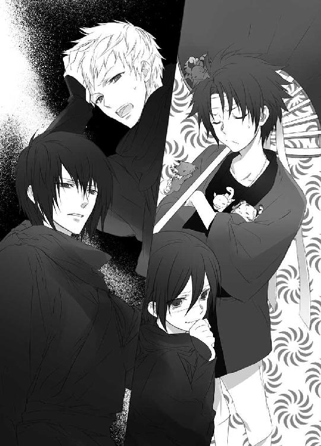
染吉兄弟が巻きこまれた事故のときに、車が故障していたり、追突したりして荷物を路上に散らかしてしまったのは、染吉兄弟が購入したメロンの産地である高池圏、鎮岡圏、伊原木圏、そして事故に巻きこまれはしなかったものの、穂塚井道や山潟圏からの供物搬入の車も近くにいた。
外側の見た目だけが似通ったメロンを供物にしている産地を含めて、このうちのどこかの供物に、絶対に紛れこんでいるものだと思っていたのに────！
「見つけ損ね────」
「藤丸！」
柳生蘭丸は厳しい調子で、藤丸の言葉を遮る。
それを言ってはいけない。
探しだせなかったのは事実だが、お庭番として蟲爆弾の捜索の任務に当たった蒼司朗だけでなく、奥庭の四神様を疑うことになる。
帝都神社方面の様子を探ってきた公儀隠密候補生、帝都大学一年の真田幸辰が、片膝をついて控え、柳生蘭丸に報告する。
「最終御輿の進行は、予定通りです。帝都神社に御輿到着後は、時間通りに、四神の戦士と神官長による五節舞が行われ、奉納の儀となるでしょう」
準備が遅れているなどの理由で、時間がずれこむことはなさそうだ。
だが、蟲爆弾の爆発する時間が前後することはないだろう。
「────兄貴、供物を確認できないかな？ 供物は一箇所に集まってる......！ やるのは、俺一人でいい！」
蟲爆弾のメロンさえ、確認できればいいのだ。チェックする御輿は多くない。
「五節舞の見物客が来ているぞ」
帝都神社にお御輿で運ばれた供物は、野外に特設された舞台の前に並び置かれ、観客はこの供物の向こうの舞台で行われる豊明の節会、五節舞を見る。五節舞が終われば、四神の戦士と神官長は舞台を帝に譲る。そして、帝による奉納の儀が行われる。
最終御輿の到着を前に、いい場所を確保しようと、見物客は続々と帝都神社に向かっている。蟲爆弾のことは、極秘に処理しなければならない。
「花火を上げてもらう......！ 短時間でいい。人の目を逸らせれば、その間に！」
供物を確認できる────！
「────藤丸、お前、自分が何を言ってるか、わかってるな？」
硬い声で確認する柳生蘭丸の目を真っ直ぐに見つめ返し、藤丸は頷く。
柳生藤丸の提案するその行いは、奥庭の四神様を疑い、否定することだ。
たとえ、神の所業に間違いがあったとしても、人間はそれを疑ったり、否定してはならない。
神に対する冒瀆は、祟りや天罰という形で、身に振りかかる。どんな処遇が待っているのかは、まったく想像できない。
そして、奉納された供物に手を触れるとは、なんと畏れ多い所業か。
「俺が一人で責任を取る────！」
染吉兄弟を尋問し、蟲爆弾のことを聞きだしたのは、柳生藤丸だ。藤丸は自分が聞きだし、調査したことに間違いはないと信じている。
帝都神社に運ばれた供物のメロンに、蟲爆弾がある────！
（俺一人の命ですむのなら、安いもんだ......！）
帝の命と、奉納の儀のために集まった、たくさんの人々の命が救えるのなら────。
柳生蘭丸は、藤丸に頷く。
「すぐに伝えよう......！」
蒼司朗は、ぽりぽりと頭を搔く。
「とりあえず、お御輿で運ばれた供物にはなかった。だったら、圏民会館のどっかにあるかもしれない。それを確認しよう」
「どういう根拠で、そう思われるのですか？」
眉を顰める柳生真純に、蒼司朗は快活に笑う。
「だってさ、供物に混じったんだろ？ 奉納する供物って、ある程度、数に余裕を持ってくるじゃん。蟲爆弾が存在するなら、圏民会館に残っている供物のほうにある、そう考えるのが妥当じゃないかな？」
これが最高にいいものだと選び抜いても、長時間の運搬中に傷がついたり汚れたり、格落ちしてしまうものが出る。
量で競われても困るので、帝都神社に奉納される供物の数は決まっているが、その数以上帝都に持ちこんではいけないという決まりはない。供物と同等でありながらも、供物としてカウントせずに、搬入されているものがある。
奉納された供物の種類や数は、提出された奉納表の通りだが、奉納する供物の搬入表に記入された数と、実際に搬入された数は、必ずしも同じではない。
（あ......！）
帝都の住民で、奉納される側だった柳生真純は、目から鱗が落ちた思いだ。
供物の予備ならば、きっと普通に保管されている。封じられているお御輿と違って、保管されているものなら、すぐに出してもらえる。高位の神官なら、簡単に蟲爆弾を探せるだろう。
時間はあまり残っていないので、人海戦術で探しださなければ！
「すぐに伝えます！」
「オレは最終御輿の高池から、場所の近い順番に、圏民会館を回ってみる！」
「ご武運を！」
また後ほどと言って、柳生真純は風のように姿を消した。
蒼司朗は大団扇を肩に担ぐ。
「っしゃ！ オレたちも行くかぁっ！」
「ミギャ！」
「キュオ！」
「チュピ！」
「「（しゃー！）」」
気合いを入れて雄叫びをあげ、やる気満々のピヨ四神を連れて、蒼司朗は帝都城下を駆ける。
「お庭番、望月蒼司朗、参る！」
蒼司朗が果敢に行動を開始したことと、帝都神社に運ばれた供物を検めたいという申し出は、ほぼ同時に公儀隠密総帥・柳生巌宗に伝えられた。
お御輿を検めた結果と蒼司朗の意向は、社務所で五節舞の仕度をしていた小此木神官長に伝えられた。
「奥庭の四神様とお庭番に、協力を！」
小此木神官長はすぐさま伝令を走らせ、城下を巡回警備している神官たちに、圏民会館に残っている供物を探るよう命じた。
「もはや猶予はありません！ ご許可を！」
平伏して願う柳生蘭丸を、柳生巌宗は静かに見下ろす。
「許可はできぬ......！」
「父さ────、総帥！」
顔を上げた柳生蘭丸は、耳の真横を掠めて地面に突き立った小柄に、息を吞む。
柳生巌宗は息子・蘭丸を厳しい目で見据える。
「頭を冷やさぬか、愚か者！ 我らのお役目が何であるか、よーく考えい！」
柳生巌宗の瞳の奥に見えた怒りの色に、蘭丸は悟る。
（全部、ご承知だ......！）
故意に情報を伏せたことも、何もかも────！
圏民会館に残った供物に......と言った蒼司朗だが、それはただの思いつきに等しい。
お御輿に載せて供物を奉納し終わったら、後に残った余分な供物は持ち帰ったりせず、お疲れ様でしたと皆で食べてしまうのが一般的ではないだろうか。新嘗祭の初日に供物の奉納を済ませた圏なんて、まだ供物の残りがあるかどうか、すでに疑わしい。
（爆弾に加工されていたものに手をつけようとしたなら、爆発してるよな......）
皮を剝いたり、切り分けたり、煮炊きしたりするのは、きっと無理だ。爆発が起こっていないのだから、そのような事態になっていないのか────。
（せめて、何に蟲を仕込んだのかがわかれば！）
まだ狙いが絞れるのにと、蒼司朗は舌打ちする。
蒼司朗は高池圏から数箇所の圏民会館を回ったが、供物の残りに蟲爆弾はなかった。
「蒼司朗様！」
帝都城下南にある三矢崎圏の圏民会館に向かって駆けていた蒼司朗は、十字路を別方向から走ってきた鈴宮神官に名を呼ばれ、四つ角で足を止める。
「見つかったんですか!?」
祭り装束の少年と神官の会話としては傍目には妙だが、この辺りは帝都城から遠く、観光客たちの姿もないので、二人は気にせず会話する。
「いえ、わたしのほうでは。見つかったら、合図の花火が上がることになっているんですが......」
合図はまだない。
一人で帝都中駆けずり回っているように思えていた蒼司朗は、神官たちが動いてくれているとわかり、少し気持ちが楽になる。
「じゃ、オレ、あっちにある三矢崎の圏民会館に行きます！」
「はい。わたしは尋島に向かいます！」
鈴宮神官と別方向に分かれて駆けだそうとした蒼司朗の頭上で。
「ピイ！」
大きな声でチビ朱雀が鳴いた。
突然の大声に驚いて、走りだしかけた蒼司朗と鈴宮神官は足を止める。
「どうした!? スー」
「ピイ！」
「ミギャギャ！」
「キュアキュオ！」
「「（しゃー！）」」
騒ぐピヨ四神に、蒼司朗は促されるように顔を上げる。鈴宮神官は、おろおろしながら蒼司朗とピヨ四神を見守る。
ピヨ四神たちが見上げているのは、鈴宮神官が向かおうとしていた道、十五メートルほど先にある街路樹。
じいっと蒼司朗は木を見上げて────。
「あった！」
「え!?」
「あそこ！ 何か引っかかってます！」
蒼司朗は地上から八メートルほどの高い樹上を指差して、駆けだす。鈴宮神官も、蒼司朗の後を追う。
（あそこ、って......）
教えられても鈴宮神官には、茂った枝葉しか見えないのだが────。
（そう言えばここは、玉突き衝突の事故現場ですね......！）
事故に巻きこまれた染吉兄弟が、蟲爆弾をなくした現場だ。
「落ちるなよ！」
「ミギャ！」
「キュイ！」
「チュピ！」
「「（しゃー！）」」
蒼司朗の言葉に、任せておけとピヨ四神が応え、枝打ち斧の偽装のための大団扇を捨てて風の抵抗を減らし、蒼司朗は駆け足の速度を上げる。
「お庭番、望月蒼司朗、参る！」
横を駆け抜けた勢いそのままに、木に突撃する蒼司朗の姿に、鈴宮神官は目を剝く。
「蒼司朗様！」
ぶつかる！
追いかけながら肝を冷やす鈴宮神官の目の前で、蒼司朗は木を垂直に駆け上がった。そうして一番下の枝を手で摑み、跳ぶような速さで木を上がっていく。
「すごい......、本当にできたんですね......」
お猿さんみたい、という言葉は堪えて吞みこんだ。
木を揺らさないように気をつけて、するすると上っていった蒼司朗は、幹と枝の境に乗っかっていたものを間近で確認する。
「メロンかよ......！」
大玉のマスクメロン。一目でわかる高級品だ。
樹上に引っかかっている明らかに不自然なものは、どこかから飛んできたのに違いない。
確かにこれなら十分な大きさがあり、爆弾に加工するにはいいかもしれない。
「────蒼司朗様！」
下から呼びかける鈴宮神官に、蒼司朗は引っかかっていたメロンをそっと持ち上げる。
「ありました！」
蒼司朗の手にある大玉の高級メロンは、鈴宮神官にもよく見えた。
奥庭の四神様が見つけてくれたものだ。間違いない。
「はい！」
鈴宮神官は笑顔で、懐に入れていた花火の細筒を取り出し、発見の合図に打ち上げた。
ぽん！
軽い破裂音を響かせた花火は、音や光よりも、白い煙で長く軌跡を残すものだ。
「すぐに、処理車が参ります！」
蟲の穢れだけなら、神官の力で処理できるが、蟲を起爆装置にした『爆弾』となれば、何が飛び散るかわからない。爆発に耐えるコンテナを搭載した爆発物専門の処理車（外見は救急車）で、いつ爆発してもいいようにして回収しなければいけない。
蟲爆弾を手に取った蒼司朗は、メロンの中に封じられている蟲の気配を強く感じる。
（脅えて、る......）
風が吹けば揺れる、不安定な木の高みに何日も放置され。
既に臨界点だ────！
「蒼司朗様？ いかがなさいました？」
返事がなく、動く様子もない蒼司朗に、鈴宮神官は眉を顰める。
「ギュココココ」
「キュオゥ」
「チュチュン」
「「（しゃー）」」
「......うん」
警戒を促すピヨ四神に蒼司朗は頷き、鈴宮神官に言う。
「すみません、これを持って下りることはできません！」
高度が下がれば、爆発する────！
11
衣装を身につけ、五節舞のために舞台に向かおうとしていたところに、蟲爆弾の発見を知らせる花火を見て、小此木神官長と四神の戦士たちは、ほっと肩に入っていた力を抜く。
「ったく、ハラハラさせやがって......！」
罵倒して、篠原勇輝は仮面をつける。
「足が短いから、移動に時間がかかるんですよ」
ふんと鼻を鳴らして、仮面をつけた安藤奏の尻に、篠原勇輝が蹴りを入れた。
「（痛ーい！）」
「（お前が言うんじゃねー！）」
高校一年生と中学二年生という年齢の違いはあるが、蒼司朗と安藤奏の体格は、ほぼ同じだ。安藤奏は蒼司朗の足の長さを貶せないはずだし、年功序列の考え方のある篠原勇輝は、年下の者が年上の者を見下すのを嫌う。
篠原勇輝の前で、蒼司朗を馬鹿にすると体罰がくるとわかっているはずなのに、懲りない安藤奏に蔵田実親は笑う。
「仲良しですねぇ」
「埃を立てるなら、燃やすわよ？」
男の子はどこでも暴れて嫌ぁねと、迷惑そうにしながら、芙蓉薫子も仮面をつける。
（（（燃やすって☆）））
さらっと芙蓉薫子の口から出たが、おそらく冗談ではない言葉に篠原勇輝たちは仮面の下で顔を引きつらせる。朱雀の戦士である芙蓉薫子は、自在に火炎を操る。宣言したのだから、次は絶対に火を点けられるだろう。埃だけ燃やすようには、とても思えない。
「さぁ、皆さん！ 次で今年最後の舞いです。これまで通りの調子で、頑張りましょう！」
小此木神官長はにっこりと微笑んで、仮面をつける。
四神の戦士たちは、神官長に続いて厳かに、舞台に向かって進む────。
公儀隠密・総帥に許可を貰いに行った柳生蘭丸が城から出てくるのを、内堀を望む場所で木立に隠れ、一人でやきもきしながら待っていた藤丸は、予定外に上がった花火の音に、はっと空を振り仰ぐ。
「見つかった......」
蟲の爆弾が。
花火が上がった方角は、城下の南。豊明の節会の五節舞や奉納の儀を見るため帝都神社に集まっている大勢の見物人に、影響が出ないだろう場所だ。
（よかった......）
安堵で膝から力が抜けてその場に座りこみそうになり、柳生藤丸は木に手をついて身体を支える。安心すると同時に、疑問が湧いた。
（何処にあったんだ？）
奉納された供物になかったのだから、それ以外で見つかるのは当然だが、釈然としない。
柳生藤丸は花火の上がった方角目指し、身を翻す。
お城から抜けだして連れ戻されてからも、蒼司朗と奥庭の四神様だけに任せていることをずっと気にしていた若様も、上がった花火の合図に気づき、安堵する。
（そろそろだな）
手を煩わせるよりもと、若様は柳生真純が呼びに来るよりも先に、部屋を出る。
身を清めて奉納の儀を行う帝の席とは別の場所に設けられた貴賓席に向かう若様の麗しい姿に、舞台を見るために集まった者たちは、うっとりと見惚れる。毅然としているが、ほんのり機嫌のよさそうな雰囲気には、どこか胸キュンの甘さが漂う。
「あぁっ......♡」
帝都の住民でないために、若様の見目麗しさに免疫のない者が、目眩を起こす。ふらふらっと場所を離れようとする者たちが続出したが、駆けつけた柳生真純が物陰から放った吹き矢で、速やかに眠らされた。麻酔薬は強力だが、効果は五分ほどだ。それぐらいなら、過ちを回避でき、個人の予定に大きく響かない。
失神者（強制的に眠らされた者を含む）が続出するのも困るし、若様ばかりが注目されては、五節舞の舞台にならない。警備の者たちは速やかに衝立を運び、若様の姿を隠した。
厳かに楽が奏でられ、仮面をつけた五人の舞人が舞台に上がる。
優雅で幻想的な五節舞に、誰もがうっとりと酔いしれた。
連日、帝都の城下を駆け回った蒼司朗だが、気力と体力は充実していた。
「────いけるか？」
蟲入りのメロン片手に尋ねた蒼司朗を、ピヨ四神は円らな瞳で見つめる。
「ミギャギャ！」
「キュアキュオ！」
「チュピピ！」
「「（しゅー！）」」
お御輿で奉納された供物の摘み食いをコンプリートしたピヨ四神は、清浄な気で充実していて絶好調だ。
蟲爆弾を持って下りられないと言った蒼司朗を見上げ、鈴宮神官が呼びかける。
「蒼司朗様！ 下りられないって、どういうことですか!? 手が塞がっているということですか!?」
「────下ろすと、爆発します......！」
断言した蒼司朗の言葉に、鈴宮神官は息を吞む。
「ですが、蒼司朗様......！」
今、蒼司朗がいる高さには、はしご車を出動させなければ届かない。下ろさなければ、処置できない。
「オレが何とかします。オレには、こいつらがいるから、大丈夫。任せてください」
「ミギュ」
「キュオ」
「チュピ」
「「（しゃー）」」
任せろとばかりに、ピヨ四神が鳴き声をあげる。
四神変化するには、蒼司朗は蟲の爆弾を手放さなければならない。別の枝に載せ替えることは可能だが、ぐらりと傾いだ瞬間、蟲爆弾は破裂するだろう。
蟲爆弾を破裂させず、蒼司朗が四神変化を行うには────。
「行っけぇー！」
蒼司朗は力いっぱい、蟲入りのメロンを頭上高く放り投げた。
奥庭の四神の意向でもあるそれは、打ち上げられたように勢いよく、遥かな高みを目指す。
青空に向かって投じられた蟲爆弾に、鈴宮神官は息を吞む。
花火の上がった場所目指し、飛ぶように建物の上を駆けていた柳生藤丸も、天高く投じられたメロンを目撃した。
「何......!?」
蒼司朗は枝打ち斧を握り直す。
「お庭番、望月蒼司朗────、参る！」
放り投げた蟲爆弾を追って、蒼司朗は枝を蹴って跳ぶ。
爆発するかの勢いで、七色の光が弾けた────！
蒼司朗とともに天を目指して顔を上げ、蒼司朗から離れた奥庭の四神は、七色の光でできた雄々しい成獣に変化し、蒼司朗を包みこむ。
七色の光に包まれ、その強烈な圧に、蒼司朗の意識が吞まれる。
奥庭の四神と、ひとつになる────。
虹色の光は卵となって、蒼司朗を包みこむ。
（熱い......）
四肢の自由が効かない。頭が朦朧とする。
自身が曖昧になる不安も苦しさも、蒼司朗は乗り越えられる。
（オレは......！）
天の戦士に、生まれ変わる。
身体を伸ばそうとする蒼司朗に、蒼司朗を包みこんでいた虹色の光の卵に、亀裂が走る。
奥庭の四神の加護を受ける戦士が、孵化し、目覚める────！
「あれが......、天の戦士────！」
柳生藤丸は、初めて近くで見た蒼司朗の四神変化に、驚愕する。
花火の合図で急行した爆発物処理車が、鈴宮神官の近くで停まった。運転していた新庄神官は急いで車を降りて空を仰ぐ。
同じく駆けつけた神官たちも、足を止め、空を見上げる。
「祝詞です！」
シャン！
大声で叫んで神官たちを促した鈴宮神官は、鈴を取りだして鳴らす。
祝詞は祈り。祈りは、四神を助ける力となる────！
近くで交通整理を行っていた警官が、急いでこの一帯に車の通行規制をかける。
「────天清浄 地清浄 内外清浄 六根清浄と 祓給ふ 天清浄とは 天の七曜九曜 二十八宿を清め 地清浄とは 地の神三十六神を 清め 内外清浄とは 家内三寳大荒神を 清め 六根清浄とは 其身其體の穢れを 祓給い 清め給ふ事の由を 八百万の神等 四の聖獣 諸共に 小牡鹿の 八の御耳を 振立て聞し食と申す......」
鈴を振る神官たちの、清めの祝詞は、厳かな響きとなって蒼司朗に届く。
虹色の光の卵に流れこむ、温かなもの。天の戦士に四神変化する蒼司朗は、皆の思いに、支えられる────。
（帝都を、護るよ────！）
ここは、大切な者たちが大切に思う場所。皆の憧れの都────。
虹色の光の卵から現れたのは、四神の加護を示す鎧を纏った蒼司朗だ。
静かに目を開いた蒼司朗は、愛用の枝打ち斧から変化した、立派な戦斧を握る。
「お庭番、望月蒼司朗、参る！」
ふわり、真紅の翼が広がって、その羽ばたきは蒼司朗の身体を空の高みへと押し上げる。
天の戦士の鎧を纏う蒼司朗の上に、高く高く放り投げた蟲入りの果実がある。
（蟲......）
蒼司朗は庭師を目指していて、益虫は大事にし、害虫は退治する。生きる虫の命は同じだけれど、植物を生かすために、害虫を駆除する。死にたくないのは、きっとどの虫も同じだ。
生きようとしているだけのものを、害虫だからと区別して、躊躇うことなく処分する。でもそれは、悪戯に命を奪っているわけではない。命を貰うことなく、生は営めないものだから────。
手に持った蟲の爆弾から感じた脅えは、蒼司朗にとって衝撃的な感覚だった。非情に徹して切り捨ててきた気持ちを、突きつけられたように思った。
蟲だって、爆弾になりたかったわけじゃない。結果的に、そうなってしまっただけだ。
（お前の命、無駄にはしない────！）
蟲の爆弾に追いついた蒼司朗は、戦斧を大きく水平に動かす。
「四神演武、雅粒天逝！」
虹の軌跡を描いた戦斧の刃が、蟲を詰めた果実を薙ぐ。
甚大な浄化の力に触れて、臨界点を迎えていた爆弾は、熱を持たない眩い金色の光と化す。
穢れを溜めこんだ異界の蟲も、人を傷つけるために仕込まれた金属も、甘く熟し大切にされていたのに誰にも食べられることなく朽ち果てるだけだった果実も、金色の光と化して────。
帝都の空に浮かんだ雲を、きらびやかに光で染める。
金と虹色に輝くそれは、まさしく瑞祥の雲。
突如、明るみを増した南の空に気づき、振り仰いだ者たちが、驚愕し息を吞む。
「これは何と......！」
「おめでたいこと......！」
吉兆を告げる雲が、五節舞に導かれてやってくるとは────！
帝都神社に集まっていた者も、通りを歩いていた者も、車に乗っていた者も、公園で芸を披露していた者も、屋台で商売をしていた者も客も、誰も彼も、皆、空を見上げ、輝く雲に目を奪われる。
空に魅了される、至福のとき────。
典雅な舞いを披露しながら、小此木神官長は仮面の下でくすっと笑う。
「（なかなか、粋なことをしてくれますね）」
帝都の新嘗祭に凶事を成そうとした穢れの爆弾を、吉兆に変えるとは。
あれは確かに、天の戦士でなければできない浄化だ。処理車の装甲の中で破裂させて処分するより、ずっと素晴らしい。
そして、光り輝く瑞雲の中にちらちらと、絢爛たる虹色に映える聖鳥の姿らしきものがある────。
存在を知る者には、天の戦士に見えるのだが。
「あれは......鳳凰だ！」
知識人が声をあげた。
覚えのある者が、あぁと賛同する。
「光る雲の中に鳳凰がいるぞ────！」
四神すべてと四神変化する、天の戦士は......。
四方の王たる、方王、『鳳凰』────？
「（王だって？ 冗談じゃない！ 何であんなヤツを......！）」
舞いながら、安藤奏は憤慨する。何の修行もせず知識もないくせに奥庭のお庭番となり、天の戦士に四神変化する蒼司朗のことが、安藤奏は気に入らない。まったく面白くない......！
「（いい気にならなきゃいいわね）」
芙蓉薫子は冷ややかに思い、くすっと蔵田実親は笑う。
「（それはそれで、面白いんじゃないですか？）」
自惚れる者には、それ相応の罰がある。お庭番の先代でもなければ、指導者でもない、四神の戦士たる四人は、自己鍛錬を行いながら、静かに見守るだけだ。
蒼司朗がどんな状態になろうとも、今日ばかりは白虎の戦士の力で駆けつけることのできない篠原勇輝は、忌々しげに舌打ちする。
「（あのバカ......！）」
新嘗祭の間、お御輿で運ばれる供物に蟲爆弾が混ざっていないか、蒼司朗は一人で捜索を行っていた。適当な条件をすべて満たしたのが蒼司朗一人だけだったからだが、無理をしたのだろうと、篠原勇輝は思う。
できない、やりたくないとは絶対に言えない状況に追いこまれながらも、蒼司朗は必死で応えようと努力している。そして、華やかな結果を見せてくれるけれど。
（テメー自身がぼろぼろになってたら、意味ねぇんだよ......！）
帝都の空を振り仰いだ人々は、めでたい光景に胸を打たれ、膝を折って祈りを捧げる。
賢帝の治める世の新嘗祭に、なんと相応しい光景だろうか。
（蒼くん......）
綺麗で不思議で厳かで、そしてどこか温かい光景に、帝都神社にいた清志朗は確かに、従兄弟の気配のようなものを感じる。小さな四神様たちに好かれるような蒼司朗なら、こんな奇跡の光景を見せてくれても、不思議ではない。そう思える。
（蒼くんは、あそこにいるんだね）
清志朗には、とても手の届かない、遥かな高み────。
「────僕、こんなの初めて見た......」
清志朗といっしょに五節舞を見に来ていた筧俊彦たちが、感動して目を潤ませる。
「すごいね......」
「うん、本当にすごい......」
「なんて綺麗なんだろう」
瑞祥の雲と鳳凰を見、帝は離れた席にいる若様に微笑みかける。若様は笑みを浮かべ、帝に頷いた。
誰に教えられなくても、あそこに奥庭の四神様と、お庭番の少年がいるとわかる。
あの方角は、蟲の爆弾を発見したと知らせる、花火の上がったところだ。
蟲と穢れの完全浄化を可能とする奥庭のお庭番は、鮮やかな浄化でいつも驚かせてくれる。
（望月蒼司朗......、お前が作る四神様の奥庭は、どのようなものなのだろうな）
可愛い四神様の、庭。
立ち入ることを許されている若様は、とても楽しみだ。
（蒼司朗様、グッジョブです！）
カメラを構えた柳生真純は、帝月報用のステキ写真を撮りまくる。帝と若様、それぞれに滅多に撮れない、いい顔だ。
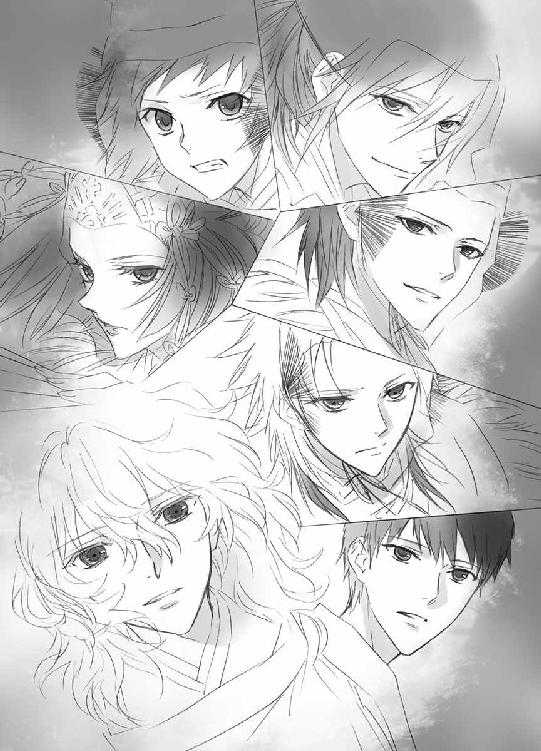
そして天の戦士の四神変化の瞬間を目撃し、その圧倒的な浄化の様子を目の当たりにした柳生藤丸は、その場にへたりこんでいた。
（これが......、奥庭のお庭番......）
ただそう決まっていたから、年下の小柄な少年に尊称をつけて呼んでいたけれど......。
（すげえ......）
それ以外の言葉が出ない。
敬虔なる祈りを捧げられていた、光を放つ瑞雲は、やがて消え......、鳳凰の姿も消えた。
真紅の翼を広げ、天の戦士の鎧を纏い戦斧を握る蒼司朗が、ゆっくりと降下する。
（お見事です、蒼司朗様......！）
祝詞で天の戦士に変化した蒼司朗を助け、支えた鈴宮神官は、地に爪先をつけ、赤い羽根を散らして四神変化を解いた蒼司朗に駆け寄る。
一瞬にして弾けるように解けた四神変化に、がくりと膝を折った蒼司朗は、枝打ち斧を握って道路に座りこむ。
「蒼司朗様！」
「大丈夫ですか!?」
駆け寄ってきた鈴宮神官と新庄神官に、蒼司朗は顔を上げる。
「────うん、大丈夫......！」
四神変化できたし、浄化もきちんと行えたし。
いつものようにピヨ四神をくっつけた蒼司朗は、ほにゃんと微笑み、枝打ち斧を杖代わりに腰を上げる。強引に四神変化をしたときのような、全身ばらばらになりそうな痛みはない。
ただ────。
「ちょっと、ものすんごく眠い、だけ......」
ぐらりと揺れた蒼司朗の身体を、新庄神官の大きな手が、がっちりと受け止めた。
12
緊急事態のために帝都の各所で待機していた救急車が駆けつけて、蒼司朗はすぐに診察を受けることができた。
ばったりと力尽きたものの、蒼司朗の身体に異状はなく、本当に純粋に眠っているだけだった。例えるなら『水泳をした後にお昼寝をしたくなる』ような、そんな感じだ。前回、篠原勇輝や清志朗が思ったように、背が縮んでいるとか、そういう特殊なこともない。
蒼司朗は救急車で望月邸まで運ばれ、宴会をしていた庭師たちの一人に担がれて、自室の布団に寝かされた。
「あれ？」
目が覚めたら望月邸の天井があった。
「あれ!? オレ......！」
蟲爆弾を発見して、四神変化で浄化を行ったことがすべて夢だったのではないかと、蒼司朗は飛び起きて慌て、祭り装束のままの自分の格好を見、宴会をしている庭師たちの声を耳にして、朝ではなく夕方であることを知った。
（本当に、やったんだ......）
充実感というより、終わったんだという解放感のほうが強かった。
（────だけどなー）
蒼司朗は、布団のあちこちでころころと眠っているピヨ四神を突く。
「......ミギュ」
「キュ～」
「ピー」
「「（しゅー......）」」
幸せな夢でも見ているのか、にゅーんと機嫌のいい表情で眠っているピヨ四神は、ちょいちょいと突かれて、くすぐったそうに身体を動かした。
「ありがとう、な」
蒼司朗が眠っている間に、メインイベントである帝による奉納の儀は終わってしまった。初めての帝都の新嘗祭なのに、蒼司朗は夜店で遊び、大道芸人に声援を送り、屋台の食べ歩きをしただけで、まともな見物がちっともできなかった。
「また来年もありますよ」
望月邸まで蒼司朗の様子を見に来てくれた鈴宮神官は、縁側に腰掛けて、にっこりと微笑む。
「それはそうなんですけどー」
「「「「「ぶー☆」」」」」
賛同するようにブーイングしたピヨ四神に、蒼司朗と鈴宮神官は苦笑する。
鈴宮神官は、お土産に持ってきた乳ボーロの小箱を蒼司朗に渡す。
「今回は、お身体のほうは大丈夫なようですね、蒼司朗様。......慣れ、ですか？」
「慣れというのとは、少し違うみたいです」
ありがとうございますと、礼を言って蒼司朗はお土産をいただく。
「ミギャギャ？」
「キュウキュウ」
「チュピチュピ」
「「（しゅー）」」
「一個ずつだぞ？ いっぺんに全部食べさせないからな？」
乳ボーロは赤ちゃんのおやつなので、ピヨ四神が食べても、安心だ。
「ほら、あーん」
あーん♪
愛用の枝打ち斧を横に置いて、蒼司朗は箱を開け、膝に抱っこしたピヨ四神のちっちゃな口に、乳ボーロを運ぶ。
うまうま♡
ピヨ四神は、美味しい顔になって乳ボーロを味わった。
「今回はオレ、柳生さんに水を貰ってたし、こいつらは、お御輿で運んでた供物の気を、たくさん食べてました」
蒼司朗は膝に抱っこしたピヨ四神を、撫で撫でのんのんと可愛がる。
「ミギャ」
「キュウ」
「ピチュ」
「「（しゅー）」」
ピヨ四神は蒼司朗の手で優しく撫で摩られて、気持ちよさそうに目を細めた。
「供物を調べることがなかったら、あんな浄化はできなかったと思います」
帝都の『よく効く薬』を溶かした水は、蒼司朗の身体にかかる負担を減らして疲労を軽減し、体力回復を促す。そしてピヨ四神は、お御輿で運ばれる供物の上質な気を存分に堪能していて、使える力の蓄えが事前にたっぷりあったので、天の戦士の四神変化をして、四神演武で穢れの完全浄化を行うことができた。
「なるほど......」
「まだまだ、修行ですね」
蒼司朗は苦笑し、わざわざ足を運んでくれた鈴宮神官に頭を下げる。
明日から、また頑張らなくてはならない。
鈴宮神官を見送って、蒼司朗は大きく伸びをする。
「そろそろ屋台の時間だなー！」
焼きソバを焼いて、花火を見たら、お祭りも終わりだ。
「────へばってる顔見て笑いに来てやったのに、何だよ、オメー。つまんねー奴だな」
白けた声に、蒼司朗は振り向く。
「篠原......」
「今回は、入院してねーじゃん」
塀の上に、アメリカンドッグを銜えている篠原勇輝がしゃがんでいた。きょとんとしてから、蒼司朗は笑って舌を出す。
「ばーろ。毎回毎回、入院してられっかよ！」
着崩した私服姿の篠原勇輝は、蒼司朗のような祭り装束ではない。コイツ、法被を着ていないなぁと考えて、蒼司朗は思い出す。
「五節舞、見逃したー！」
「けけ！ バーカ！ 間抜け面して寝てたんだろ！」
「うるせー！ 来年は見るからな！」
「ミギャギャン」
「キュウ」
「チュン」
「「（しゅー）」」
「え？」
くっついているピヨ四神に、前肢と鼻面で押し押しされ、甘えた声で鳴かれて、蒼司朗は目を瞬く。
（あ！）
「あのアメリカンドッグは駄目！ ケチャップだけじゃなくて、マスタードもどっぷりついてるから。刺激物なんて食べたら、不良でバカになるんだぞ？」
「ミギュ？」
そうなの？
ピヨ四神たちは、くりっと首を傾げる。
円らな瞳と見つめ合って、言い聞かせる蒼司朗に、篠原勇輝は、むっとする。
「テメー、奥庭の四神様に間違った知恵つけんな！」
マスタードを食べても、不良やバカにはなりません。
憤慨する篠原勇輝に、蒼司朗は意見する。
「お前、塀から下りろ。行儀悪いだろ。小さい子は、何でも欲しがるんだ。見せびらかすように、もの食ってんじゃねぇよ......！」
正論である。
「......ワリ」
篠原勇輝は、横を向いて残りをさくっと食べてしまい、蒼司朗のいる塀の内側に下りる。
「────アメリカンドッグは、もうないけど」
手を動かした篠原勇輝のほうから、光のキラキラが五つ飛んだ。目の前に漂い飛んできたキラキラに、身を乗りだしたピヨ四神が、ぱくんと食いつく。
うまうまうま♡
「あ、コラ！ ────篠原～！ お前また勝手に......！」
「うるせーなー！ 悪いモンじゃねーよ！ 不良にもバカにもなりゃしねぇ！」
「ものは悪くなくても、悪い癖がつくんだよ！ お前と会うたびに貰ってたら、いつでも貰えるって覚えるんだぞ！ お前がどんなに急いでても、調子悪くても！」
真剣に怒る蒼司朗に、篠原勇輝は驚いて目を瞬く。
（あれ？）
この怒り方は、ピヨ四神のためというよりも────。
ざっ！ と庭木の枝が鳴り、はっと振り向いた蒼司朗の前に、背で庇い守るように素早く篠原勇輝が立った。
（篠原!?）
庇われた蒼司朗は、篠原勇輝の思いがけない行動に驚いてから、それは自分ではなく、奥庭の四神様のためだと気づく。勘違いしてはいけない。
「────蒼司朗様......！」
忍び装束で片膝をついてしゃがんでいたのは、柳生藤丸だった。
「藤丸さん？ どうかしたんですか？」
蒼司朗も知っている相手だとわかり、篠原勇輝は蒼司朗の前から退く。
柳生藤丸は蒼司朗に頭を下げる。
「申し訳ありませんでした......！」
蟲爆弾について、いくつかの重大な情報を故意に隠し、蒼司朗とピヨ四神を余分に煩わせたことが妹の真純にばれて、藤丸はこっぴどく叱られた。
公儀隠密・総帥である父は、蘭丸が藤丸の意向を伝えに行ったときには、既に知っていたようだが、蒼司朗と公儀隠密の関係に不信感が芽生えるのを危惧し、他言無用と口を噤ませた。
潔癖で真っ直ぐな気性の妹・柳生真純が許せないと憤ったので、兄妹間の関係修復のためにも、藤丸は蒼司朗に真実を告げて詫びを入れに来たのだ。
「蟲の入った供物を探す蒼司朗様に対して、自分は大変な無礼を働いたのです......！」
「あぁ、待ってください！」
蒼司朗は柳生藤丸の言葉を遮る。
「えーとその、何となく、お話の内容はわかりました」
にこっと蒼司朗は笑う。
「オレはたぶん、これから先も、藤丸さんたちにお世話になると思います。できれば、藤丸さんのいいところだけ、覚えさせておいてください」
無礼なところは教えないでくれと願う蒼司朗の言葉に、藤丸は驚いて顔を上げる。
蒼司朗は続ける。
「昔から、オレ、チビだったんで、よくあったんです。努力しても努力しても、ぜんぜん認めてもらえない。皆に追いつきたくて頑張るのに、オレみたいなのが追いついちゃ、駄目なんです。リハビリのために始めた剣道でも、竹刀折られたり、防具隠されたり、道着捨てられたりしょっちゅうありました。人並みにできるようになりたいとか、そういう気持ちなのに、反感買うことばっかりで。だからもし、そういうことだったら、オレ、聞きたくないです。どうかオレを......可哀想な奴に、しないでください」
知らなければ、何も感じないでいられる。
「ミギュ」
「キュア」
「ピチュン」
「「（しゅー）」」
身じろいだピヨ四神が、蒼司朗を慰めるように身を寄せる。一生懸命労わろうとしてくれているのは、ふわふわした温かい小さな命たちだ。
（オレ、大丈夫だよ）
ここには従兄弟の清志朗もいる。意地悪をしようとする者もいない。
（枝打ち斧を手放せないのは、オレの弱さだ）
とても大切なものだから、目の届かないところに置きたくはない。
「勝手なこと言って、すみません」
蒼司朗は大きく身体を折って、柳生藤丸に願う。
体格において劣る三月生まれで小柄な蒼司朗は、常にマイナスから出発する。他人よりできないことが、『蒼司朗の普通』とみなされるのだ。蒼司朗は『できない』ことで他人に優越感に浸られ、馬鹿にされる。できないことができるようになれば、生意気だと思われ、妬まれる。ただ『普通でありたい』だけなのに。
「蒼、司朗様......」
柳生本家に生まれ、努力すれば常にちゃんと認められる場所にいた柳生藤丸は、蒼司朗の言葉に胸が詰まる思いがした。
顔を伏せ、柳生藤丸はきつく唇を嚙む。
「────仰せの、ままに......！」
深々と頭を下げ、柳生藤丸は、現れたのと同じ唐突さで姿を消した。
蒼司朗に関して、面と向かって思いきり『認めない』宣言をしている篠原勇輝も、非常に居心地悪い気分に襲われる。
「......帰る」
「うん」
にこっと笑って、蒼司朗は裏木戸を開いてやる。
「オレ、この後屋台の当番なんだ。よかったら食べにこいよ」
「お前が作るのかよ？」
不満そうな篠原勇輝に、くすくすと蒼司朗は笑う。
「ちゃんと望月造園の屋台の焼きソバの味のやつ食わせてやるよ。心配すんな。────初めて声かけられたなぁ。学校の友達ってさ、オレだけの知り合いとかっていないから」
いつも一緒にいる清志朗は、蒼司朗よりずっと顔が広い。皆との付き合いも長い。
「......紅ショウガ多め、ピーマン抜き」
「へ？」
きょとんと目を瞬く蒼司朗に見向きもせず、篠原勇輝は裏木戸を抜ける。
「気が向いたら行ってやる────」
新嘗祭の最後の夜を彩る打ち上げ花火は、午後七時から。
蒼司朗と清志朗、池波の焼きソバ屋台の当番は、五時から二時間だ。
「────客、少ないんじゃなかったのかよ......！」
「うわー、並んでますねぇ。これは時間かかりそうだなぁ......♡」
騙されたと、げんなりする篠原勇輝の横で、くすくすと楽しそうに蔵田実親は笑う。
「清志朗センパイの人気ですよ。わかりきってるじゃないですか」
「二人分、並んで買っておいてね。奏くん、アイス食べましょ」
芙蓉薫子はアイスクリーム仲間の安藤奏を連れて、新嘗祭限定出店の屋台に向かう。
蒼司朗は汗だくになりながら、焼きソバをパックに詰める。
「お持ち帰り、三十人前、お待たせしました！」
「すみません、蒼司朗様、そのままポーズキープで！ 蘭丸兄さん、左手邪魔！」
白百合女学院の制服姿の柳生真純は、写真を撮る。
「ミギャギャ」
「キュアオ」
「ピピチュピ」
「「（しゅー）」」
蒼司朗にくっついているピヨ四神は、円らな瞳で、カメラ目線♡
「大口注文、多いですねー。さすが坊っちゃんと蒼ちゃんだなー」
「蒼くんのお客ですよ」
笑いながら、清志朗は焼きソバを炒める。
柳生道場、帝都神社は今年から増えた、大口注文の上得意様だ。
「できてますかー？」
綿菓子にリンゴ飴、イカ焼き、お面に水風船。夜店満喫中の小此木神官長が焼きソバ屋台を覗く。池波は真っ先に気づいて、会釈する。
「へい、毎度！ ありがとうございます、小此木様」
「うふふー♡ 蒼司朗くん、目が回りそうなほど忙しそうですねー♡ 新庄くん、しっかり持って帰ってくださいねー」
「はい」
大口注文、五十人前を持ち帰る新庄神官は、どっしり構えて出来上がりを待つ。ガタイのいい新庄神官は、普通の格好でも何だか威圧感がある。
（嫌がらせじゃあ、ないよね......）
蒼司朗と清志朗は、顔を見合わせ、頰を引きつらせながら笑う。
怒濤の忙しさだった焼きソバ屋台の当番を終え、蒼司朗は学校の友達と六人で花火の見える場所に移動する。
「あれ？ 清ちゃんは？」
「うん、ちょっとトイレ寄ってから来るって」
「場所教えてるから、大丈夫だよ。人が多いから、大変かもしれないけど」
花火見物の場所に向かう人混みに逆らって進んだ清志朗は、南公園に走る。
（蒼くんは、蟲の爆弾を処理したって、言ってた......）
それは蟲の特性を研究し、実験を重ねて、とても細かく条件を整えて、完成させたものだったけれど────。
「お散歩ですか？ 清志朗くん」
人気のない場所で、いきなり声をかけられた清志朗は、驚いて振り向く。
「......小此木、神官長────」
振り向いた清志朗に、小此木神官長はにっこりと微笑んだ。
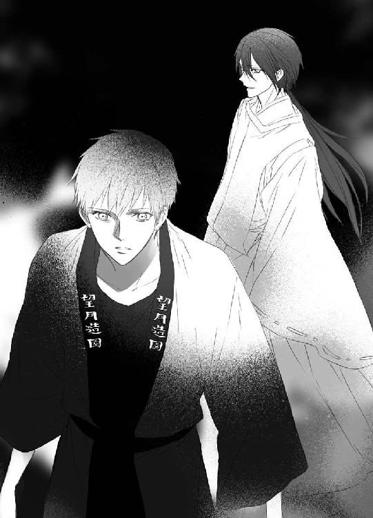
ようこそ帝都へ
公儀隠密候補生は、イケメン揃いである。
「────なんて、設定あったか？」
首を傾げる柳生蘭丸の背中を、笑いながら藤丸が叩く。
「いいんだよ、兄貴。設定がないからこそ、主張できんじゃん♪」
設定の隙間を衝く、有効な戦法である。要するに、言ったモン勝ち？
「って、お前、勝手に......☆」
「は！ 今回俺ら、まるっきりいいトコなしだぜ！ これっくらい美味しいことないと、やってらんねーよ」
「酔っ払い親父のようよ、藤丸兄さん」
「へっ、真純に俺たちの気持ちなんて、わかんねーよ。絢之輔たちなんて、モブ扱いで単独の台詞もないし。ま、幸辰はフルネームで一回台詞アリで出たけどな。チョイ役だし」
一巻目から出演しているレギュラーキャラと、準レギュラー＆その他とは、天と地ほどの違いがある。
「若さだけは保証されてるから、ついでにイケメンで問題ねーよ♡」
帝都大学の大学生。全員ピチピチの二十歳前後設定である。
黒装束も凜々しい若き忍者キャラなら、プロポーションに自信アリ、アクションもできるワイルド系スタイリッシュな各種イケメンで！
「......これは読者的にも、美味しいかな」
ふむと柳生蘭丸は考える。黒い忍び装束に身を包む、公儀隠密・柳生一族、影の軍団。若くて美形揃いだと、とても絵になって嬉しい。サービスサービス♡
その気になってきた兄に、柳生藤丸はにんまりと笑う。
「そうそう♡ んでもって、そのうちスピンオフ企画が────」
「「それは夢見すぎ！」」
兄妹に同時にツッコまれ、ぷくっと柳生藤丸は頰を膨らませる。
「何だよ、ケチ☆」
「柳生さん家って、公儀隠密だろ？」
確認するように言った蒼司朗に、清志朗は頷く。
「うん。そうだけど？」
中学からは男子校と女子校に分かれたが、共学だった小学校のときに、清志朗は柳生真純と同じクラスになったことが何回かある。小学校の頃から学級委員をやっていたので、兄の藤丸のこともよく知っている。
「隠密ってったらさ、顔が知られてたら、不味いんじゃないのかな？」
秘密裏に行動するわけだし。
指摘され、清志朗は視線を上向けて、しばし思案する。
「うーん......、問題ないんじゃないかな。隠密行動をしているときに、見つからなければいいわけだからさ」
「あぁ！ なるほど！」
ぽんと手を打って、蒼司朗は納得する。誰が忍者でも、それは問題ではないのだ。
合点がいったらしい蒼司朗に、くすっと清志朗は笑う。
「それに帝都じゃ、忍者が走り回ってても、誰も気にしないしね」
地方都市では、公儀隠密は呼称だけが残った『何でも係の便利屋』と化している。黒い忍び装束の忍者が昼日中から走り回っているのは、帝都だけだ。
「────観光客相手の、演出みたいに見えるんだよなぁ......！」
蒼司朗はチビ朱雀が座っている場所を避けて、頭を搔く。
帝都では、飛脚や人力車が、普通にそこらを走っている。時間によっては、芸者さんや舞妓さんがお座敷に出かけていく姿を見られるし、相撲部屋の近くの飲食店では、頭に大銀杏を結った相撲取りが普通にお客として席についている。
歌舞伎座に出演中の役者が、上演時間の合間に、舞台化粧のまま買い物に出ていることもある。城下に蔓延する蟲の穢れの濃度を探るため、神官は当番制で毎日、城下の巡回をしている。帝都警察の制服はレトロ調のスーツだし、新嘗祭のような行事のときには、特別製の祭り法被警察仕様で、巡回に当たっている。水を撒布するホースを積んだ消防車は他圏と同じで、屋根の上で纏いを振る打ち壊し消火は行っていないが、消防隊は昔ながらの火消し装束が制服だ。
望月造園でもそうだが、職人は法被で地下足袋が一般的な作業着である。外出着として、制服を着用している学生も多い。
住民も、帝都を構成する重要な要素のひとつ。
常に見られることを意識している帝都は、隙のなさがどこもかしこも芝居がかっていて、キネマの撮影所にでも迷いこんだ錯覚を起こしそうだ。
そんな中で、ちらっと忍者を見かけても、いて当たり前というか、しっくりきて、あまり不思議な気はしない。
お土産物屋では、饅頭やペナント、都市名入りの提灯を選ぶ感覚で、忍び装束（コスプレ用）を購入できる。
「蒼くんも、忍者の服、着てみる？ 焼きソバ屋台の売り上げが五位になった記念に！」
「え!?」
臨時収入のお小遣いがあるからと清志朗は悪戯っぽく笑い、蒼司朗の手を引っ張った。
「で、これですか～」
先に到着していた小此木神官長は、奥から出してもらった写真を見て、ぷぷっと笑い、蒼司朗は耳まで真っ赤になる。
「何で神官長が先に見てるんですか!?」
「こんな面白そうなもの、放っておけるはずないでしょう♡」
大笑いしている小此木神官長と、写真を取り返そうとしている蒼司朗から離れ、清志朗は鈴宮神官に話しかける。
「（何気に情報早いですね）」
「（奥庭のお庭番である蒼司朗様は、準公人扱いですから。────他人をからかうことにかけては、神官長は誰よりも抜け目ありません）」
ごもっともと、清志朗は納得する。
「蒼司朗くん、よく撮れてますよ～♡」
小此木神官長が高く差し上げた写真に、手を伸ばして蒼司朗はぴょんぴょん跳ぶ。
「だから、余計、恥ずかしいんです、よっ☆」
「ミギャン」
「キュウ」
「ピチュ」
「「（♡）」」
上を向いたピヨ四神も、しっかり蒼司朗にくっついて、ぴょんぴょん♡
清志朗が蒼司朗を連れて行ったのは、観光客用の写真館。
蒼司朗は黒の忍び装束（店員は黙っていたけど子供用）を借り、愛用の枝打ち斧を構えてばっちりポーズを決め、ノリノリでコスプレ記念写真を撮っていた。
ペット用の衣装もあると聞いて借りたので、ピヨ四神まで全員、忍び装束でポーズを決めている♡
「これ、プレゼントにいいですよねー♡ 鈴宮くん、手配お願いしますね♡ あ、まず、今回お世話をかけた、校閲さんや印刷屋さんから、でしょうかね♡」
原稿遅くてすみませんでした☆
「編集さんも、きっと喜ばれると思います」
本っ当に、お世話かけました！
「写りがいいのは、モデルのオレより、イラストの榊先生の腕だから！」
ステキなイラストありがとうございます。今回も、かわいー♡と身悶えました♪
「出版してくださったエンターブレインさんにも、忘れずに贈らないと」
鈴宮神官は、贈りものリストのメモをとる。
柳生真純が撮っている写真は、帝都城お抱え写真館で現像される。一本のフィルムに、様々なものが写っているので、現像された写真を見て仕分けしてから提出する。
例えば、風景、帝、若様、その他というように。
写真館から柳生邸に配達された写真を、何の気なしに確認していた柳生蘭丸は......。
「うわっ！」
声をあげて写真を手から落とした蘭丸に、帰宅した藤丸が驚く。
「どうした!? 兄貴！」
縁側から慌てて座敷に上がった藤丸は、座敷机の上の写真を見て────。
「うっ☆！」
絶句した。
写っていたのは、お祭り装束（髪や顔を覆った手拭いや眼鏡ナシ）の若様と......。
「「首領って呼びたい......！」」
額当も凜々しく、防具付きの忍び装束で刀を構え、ポーズを決めた若様♡
蒼司朗が写真館に行ったことを聞き、好奇心を刺激された若様も写真を撮ったらしい。
数枚撮られた『お忍び若様』の写真のうち何枚かには、その写真館まで案内したのだろう篠原勇輝も、下忍姿でちゃっかり一緒に写っていた。
（（合成できないか!?））
自分たちも参加できないものかと、蘭丸と藤丸は食い入るように写真を見つめた。
二○○九年十一月十七日 流 星香 忍者ものもいいよねぇ♡
著者
流星香
Seika Nagare
９月28日生まれ、天秤座、Ｂ型。大阪生まれ大阪育ちの、大阪在住大阪人。お祭り騒ぎ大好きな、明るく正しい子どもの味方である♡
戦国時代ファンタジーでデビュー。ファンタジー作家として、これまでに多数の著作を発表していて、西洋風、現代モノ等、守備範囲はファミレスのように品揃えが豊富である。
お茶の時間をこよなく愛し、綺麗で美味しいお菓子からたくさんの元気をもらっている♡
イラスト
 空也
空也
Kuya Sakaki
東京在住。
今回、ピヨ四神様がついに表紙にまで降臨されました。神々しさが欠片も無くて心配になりました。次回の降臨は未定ですので、今のうちに愛でてあげて下さい。
電子版 ビーズログ文庫
お庭番望月蒼司朗参る！
蟲喰いメロンと新嘗祭
著者／流星香
イラスト／空也
2013年6月28日電子版（EPUB3）ver.1.0制作
発行者 浜村弘一
発行所 株式会社 エンターブレイン
http://www.enterbrain.co.jp/
デザイン 永野友紀子（Zapp!）
(c)2009 Seika NAGARE
PUBLISHED BY ENTERBRAIN, INC.
本電子書籍はビーズログ文庫『お庭番望月蒼司朗参る！ 蟲喰いメロンと新嘗祭』
（2009年12月25日発行 初刷）を元にして制作しております。